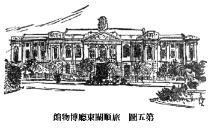

| 博物館 | |
| 浜田 青陵 | |
| (2012) | |
博物館
濱田青陵
はしがき
私
は『博物館
』といふ題
で書
くことになりましたが、何分
博物館
といつても、美術考古博物館
もあり、科學博物館
もあり、そのほかいろ〳〵の博物館
があるので、それを一々
説明
すれば百科
の學
を講釋
することになり、それは私
には出來
ない藝當
であるのみならず、一册
の本
にはとうてい收
め切
れません。しかし幸
ひ美術
や自然科學
のお話
は、別
に諸先生
が筆
を執
られてゐることゝ思
ひますから、私
は博物館
のうち考古學
の博物館
のことだけを書
くことにし、この一册
の本
によつて若
い人達
に考古學
の大體
のお話
しをすることにいたしました。たゞ何分
書物
の標題
が『博物館
』となつてゐますので、始
めに少
しばかり博物館全體
のことを述
べて置
きます。
考古學
のお話
しをする爲
めには、どうしても實物
をお見
せするか、せめて寫眞
や繪
をお目
にかけなくてはよくわかりかねます。それで、この本
にもわりあひにたくさん繪
を入
れて置
きました。そのうち霜島正一郎
［＃「霜島正一郎
」はママ］
先生
の手
になつたものもありますが、便宜上
私
の描
いた拙
い素人畫
もたくさんあるのは、おゆるしを願
ふほかはありません。またこの本
を書
くにあたつて、松本龍太郎
さんにいろ〳〵御厄介
になつたことを、こゝで厚
くお禮
を申
しあげて置
きます。
昭和四年七月
濱田青陵
目次
第一
、序
の卷
一、博物館
とはどういふ所
ですか
イ、博物館
の種類
ロ、博物館
の施設
二、世界各國
の大博物館
イ、イギリスの博物館
［＃「博物館」は本文見出しでは「大博物館」］
ロ、フランス、ドイツその他
の博物館
ハ、アメリカの博物館
ニ、世界
で珍
しい博物館
第二
、考古博物館
の卷
（上
）
一、考古學
とはどういふ學問
ですか
イ、考古學
と考古博物館
ロ、人類
の始
め
ハ、文化
の三時代
二、舊石器時代室
イ、舊石器
の種類
ロ、舊石器時代
の繪畫
など
三、新石器時代室
イ、貝塚
と湖上住居
ロ、磨製石器
と土器
ハ、巨石記念物
ニ、金屬
の發見
と使用
第三
、考古博物館
の卷
（下
）
一、日本先史時代室
イ、日本
の石器時代
ロ、貝塚
、墓地
などの遺跡
ハ、石器
と骨角器
ニ、土器
と土偶
ホ、朝鮮
と支那
の石器
ヘ、青銅器
と銅鐸
二、日本原史時代室
イ、日本
の古墳
ロ、埴輪
と石人
ハ、石棺
と石室
ニ、上古
の帝陵
ホ、勾玉
などの玉類
ヘ、古
い鏡
ト、刀劒
と甲胄
チ、馬具
、土器
その他
リ、建築
、彫刻
、繪畫
など
ヌ、古瓦
と古建築
三、朝鮮
滿洲
の古墳室
イ、南朝鮮
の古墳
ロ、北朝鮮 及 び滿洲 の古墳
博物館
裝幀・恩地孝四郎
島田貞彦
口繪・霜島正三郎
揷繪・霜島正三郎
濱田青陵
第一、序の卷
一、博物館
とはどういふ所
ですか
（イ） 博物館
の種類
皆
さんは、博物館
といふ所
を見
たことがありますか。博物館
にはいろ〳〵の美
しいものや珍
しい品物
が竝
べてあります。皆
さんのなかには、博物館
に竝
べてあるものは金錢
で買
ふことの出來
ないといふことが、たゞ三越
や大丸
などのでぱーとめんと
・すとあー
と違
つてゐるところだと思
ふ人
があるかも知
れません。またそれらの店
よりも面白
いものや綺麗
な物
が少
いところだといふ人
があるかも知
れません。しかし博物館
とでぱーとめんと
・すとあー
との違
ひは、けっしてそのような點
ばかりではないのです。でぱーとめんと
・すとあー
ではお客
の眼
を惹
くように、美
しいものや珍
しいものを、たいてい、なんの秩序
もなく竝
べ立
てゝありますが、博物館
の陳列品
は皆
、種類
をわけ順序
をつけ、その品物
には一々
わかるような説明
をつけて、それを見
て廻
るうちに自然
に學問
が出來
るようにしてあるのです。それで博物館
は品物
を買
ひに行
くところでもなく、また遊
びに行
くところでもありません。皆
さんの學校
と同
じように勉強
をしたり、學問
をする場所
なのです。もっとも學校
と違
ふところは、博物館
には先生
がをられません。また時間
も一時間
づゝきまつて勉強
するようには出來
てをりませんから、誰
でも博物館
に行
つた人
は、自由
に勉強
が出來
、時間
にしばられるといふ窮屈
な思
ひはありません。けれども、先生
のように親切
に教
へて下
さる人
はなく、休
みの時間
にお友達
と面白
く遊
ぶことが出來
ないから、時
には退屈
することもありませう。
博物館
には皆
さんの知
つてゐるように、種々
の品物
が竝
べてありますが、たいていはある種類
のものばかりを選
んで、陳列
してあるのです。例
へば東京
の上野公園
や、奈良
にある帝室博物館
とか、また京都
の恩賜京都博物館
などには、古
い繪畫
や彫刻
や、陶器
などのような美術品
ばかりが陳列
してあります。このように美術品
ばかりを陳列
する博物館
を美術博物館
あるひはこれを略
して美術館
とも呼
びます。それから歴史
に關係
ある品物
ばかりを陳列
した博物館
は歴史博物館
といひます。また鑛物
や動植物
のような博物學
に關
する標本類
ばかりを陳列
してある所
は博物學博物館
といふことが出來
ます。その他
貝殼
ばかりを竝
べた貝類博物館
、電氣
に關
するものを竝
べた電氣博物館
といふように、陳列品
の種類
は大
わけにも小
わけにも隨意
に區別
することが出來
ます。
私達
の知識
を廣
め學問
の爲
になる品物
は千差萬別
で、その種類
は實
に無限
に多
いのでありますから、これをみんな一
つの場所
に集
めて陳列
することは容易
でありませんし、またさうした博物館
をこしらへるには非常
に大
きな建
て物
が入
る、それを見
て廻
るだけでも二日
も三日
もかゝり、かへって不便
になります。だから世界
のどの國
でも、陳列物
の種類
によつて博物館
をわけてをります。それで大
きくわける場合
はたいてい前
に申
した美術
や歴史
に關
するものを一
まとめにしたものと、博物學
に關
するものを一
まとめにしたものとの二種類
に區別
するのでありまして、この二
つの博物館
がたいてい違
つた場所
につくられてをります。そのほか陳列品
を小
さく區別
した特別
の博物館
がたくさんあることは申
すまでもありません。もちろん大
きな博物館
の建
て物
は立派
であつて、その國
や町
の飾
り物
としては結構
でありますが、これを見物
する人
や勉強
する人達
には不便
が多
いのですから、それよりも小
じんまりとした博物館
で、内容
の整
つたものゝ方
がよいといふことになるのであります。ちょうど皆
さんの學校
でも、あまり大
きい學校
はかへって勉強
に不便
のことがあるのと同
じです。
（ロ） 博物館
の施設
博物館
は、最初
にも申
したとほり、たゞ珍
しいものや美
しいものをたくさんに竝
べるといふところではなくて、それらがあるひは年代
の順
に、あるひは地方
の別
にといふふうに、品物
を順序
よく系統
を立
てゝ竝
べ、これを見
る人
が知識
を廣
め學問
をするために作
られたものでありますから、博物館
の良
い惡
いといふことはその所
に竝
べてあるものが多
いか、少
いとかいふことよりも、また珍
しいものがあるとかないとかいふよりも、その竝
べ方
が良
く出來
てゐるかゐないかといふのできまるのであります。だからいくら珍
しい品
が多
く、また良
いものがたくさんに竝
べてあつても、その竝
べ方
に秩序
がなくめちゃ〳〵であつたりしては、學問
をするのにいっこう役
に立
たないのであります。ほんとうに良
い博物館
は今
いつたとほり、品物
の竝
べ方
が系統的
に出來
てゐる上
に、竝
べてある品物
の目録
が完全
に作
られてゐなければなりません。さうでないとわれ〳〵は博物館
で知識
を廣
め勉強
することが工合
よくまゐりません。それで博物館
には、どうしても一
つ〳〵の品物
の名前
、その他
必要
の事柄
を書
き記
した目録
が出版
せられなくてはならないのであつて、その目録
の中
には簡單
な品物
の説明
と、必要
に應
じて圖畫
のようなものも挿
し入
れなければならぬのであります。世界
の各國
にある大博物館
では、皆
、さうした立派
な目録
が出版
されてをりますから、博物館
に行
く人
は、それらの目録
を安
く買
ふことが出來
、その目録
と竝
べてある品物
とを照
し合
せて、容易
く研究
することが出來
るのであります。
［＃「第四圖 京城總督府博物館」のキャプション付きの図（fig18371_05.png）入る］
博物館
では、また目録書
のほかに、陳列品
について手輕
に知
ることが出來
るために、いろ〳〵の書物
が出版
されてあつたり、繪葉書
なども作
られてあつて、見物人
が容易
くこれを買
ひ受
けて記念
にもし、また後日
の想
ひ出
の緒
にもなるようになつてゐます。繪葉書
より大
きな寫眞
の必要
な人
には、その希望
にまかせてそれ〴〵の寫眞
を賣
るようにもなつてゐるのです。更
に博物館
では外
より來
た見物人
や學者達
に研究
させるばかりでなく、博物館
にゐる人
自身
がその陳列品
を利用
して研究
を重
ね、それに關
する立派
な書物
をどし〳〵出版
してゐる例
がたくさんにあります。かように目録
やそれ以外
の書物
が出版
せられて、研究
の結果
が發表
されるようにならなければ、眞
の博物館
の役目
は達
せられないのであります。大
きい博物館
をつくることは金
さへあれば容易
でありますが、良
い博物館
をつくることは金以外
更
に知識
が必要
でありますから、餘程
困難
なことになります。

また博物館 が學問 をするのにいくらつごうよく出來 てゐても、館内 の設備 がよく調 はねばだめです。冬 の寒 い日 に暖房 がなかつたりしたら寒氣 のために落 ちついて勉強 することも出來 ないのです。西洋 の大 きな博物館 では、良 い目録 や良 い研究書物 が出版 されてゐるばかりでなく、館内 の設備 も完全 に出來 てゐて、愉快 に見物 されるようになつてゐます。たいていの部屋 には氣持 ちのよい長椅子 が置 いてあつて、見物人 はゆっくりと腰 を下 して美 しい繪 を見 たり、彫刻 をたのしんで眺 めたりすることが出來 、また暖房 のあるために冬 の日 も館内 は春 のように暖 く過 すことが出來 ます。そしてたいていの博物館 の地下室 には便利 な食堂 、かふぇー などが設 けられ、食事 もできるし、お茶 も飮 めるしといふようになつてゐますから、戸外運動 をしない人々 は、日曜日 には教會 から博物館 へ來 て一日 を愉快 に暮 すのであります。日本 においても將來 設 けられる博物館 は、かうした設備 を整 へる必要 があると思 ひます。さうでないと樂 しんで博物館 に行 く人 もなく、博物館 は學校 の教室 よりも、一 そう無趣味 のところになつてしまひませう。
二、世界各國
の大博物館
（イ） イギリスの大博物館
［＃「大博物館」は目次では「博物館」］
わが國
では、學校
は大都會
はもとより田舍
の町
や村
にも立派
なのがたくさんにあつて、日本
ほど學校
のよく整
つた國
は世界中
にも少
いといはれてをりますが、これに反
して學校
の名
はなくても、學校
と同
じ役目
をする博物館
は實
に貧弱
であつて、わづかに東京
、京都
、奈良
の三箇所
に美術博物館
がある外
、これといふものもないのは甚
だ殘念
です。これは日本人
がまだ學問
をするには學校
だけで十分
であるといふような、間違
つた考
へを持
つてゐることから來
たものでありませうが、今後
は學校以外
に、圖書館
や博物館
が學校同樣
に日本國中
到
る處
に出來
て、學校
において先生
から學問
を教
はりながら、また學校
を出
てから皆
さんが自分
で圖書館
や博物館
へ行
つて、學問
をやるようにならなければいけないと思
ひます。
現在
わが國
にある博物館
はその數
が少
いばかりでなく、殘念
ながら世界
に押
し出
して優
れた博物館
とは申
すことが出來
ません。そこで世界
で指折
りの博物館
といへば、どうしても西洋
にあるのを擧
げなければならないのです。しかし、どの國
の博物館
が最
も良
いかといふようなことは、容易
に斷言
するわけにはまゐりません。各々
博物館
にはそれ〴〵の特色
があり、建
て物
がわりあひに粗末
でも、陳列品
に優
れたものが多
いとか、陳列
の方法
が良
いとか、いろ〳〵の事情
があつて、博物館
の優劣
をきめることは餘程
困難
ですが、なんといつてもヨーロッパにおいて有名
な博物館
は、まづ第一
にイギリスのロンドンにある大英博物館
を擧
げなければなりません。こゝは美術
と歴史
の方面
に關
する品物
だけを集
めた博物館
でありまして、今
から四千年
も五千年
も前
に開
けたエヂプトやアッシリヤ、それからやゝ下
つてギリシヤ、ローマ時代
の文化
を語
る古美術品
はもとより支那
、日本
のような東洋
のものを多數
、しかも優
れたものを集
めてあります。この博物館
で一番
珍
しいものは何
かとたづねられると、ちょっと返答
に惑
ひますが、エヂプト、ギリシヤ、アッシリアの古美術品
は世界中
どこの博物館
にも、これに優
るものは少
いといはれてをります。あのエヂプトの繪文字
を讀
み始
める手
がゝりになつた『ロセッタ・ストーン』といふ石
、ギリシヤの『パルテノン』といふ御堂
にあつた彫刻
もこゝにあります。それだけでも、いかに珍
しいものがあるかといふことは推察
出來
るでせう。そしてこの博物館
にはまた立派
な圖書館
が設
けてありまして、勉強
するにまことにつごうよく出來
てゐます。こゝを一應
見物
するだけでも一日
を要
しますが、入場
は無料
であり、傘
や杖
を預
つてくれても賃錢
を取
りません。毎日
見物
や勉強
のために、入場
する人々
は非常
にたくさんあつて、ちようど博覽會
へ行
つたほどの賑
ひです。この大英博物館
が專
ら古代
のものを蒐集
してゐますのに對
して、今少
し新
しい時代
の美術品
や歴史
に關
するものを陳列
したものに、ビクトリア・アルバート博物館
といふのがロンドンにあります。その大
きさも大英博物館
に肩
を竝
べるくらゐあつて立派
な博物館
です。
前
の二
つの博物館
は美術
と歴史
の方面
に關
したものでありますが、ロンドンには博物學
の方面
の大
きな博物館
もあります。それは、サウス・ケンシントン博物館
です。こゝには動植鑛物
を始
め、理科
に關
する標本
が完備
してゐます。そして子供
や素人
のためにいろ〳〵興味
を惹
くように竝
べてありますので、年
の若
い學校
の生徒
なども大勢
見物
に出
かけます。たとへば昆蟲
の標本室
にはひつて見
ますと、珍
しい蝶々
や甲蟲
などの變
つた種類
のものが驚
く程
たくさんに集
めてあります。またその室
の兩側
の壁
近
くには、幾百
といふ多
くの引
き出
しがあつて、種類別
に整理
した昆蟲標本
でいっぱいになつてをり、誰
でも勝手
に出
して見
ることが出來
るので、自由
に勉強
が出來
る設備
になつてをります。そのほか大
きな動物
の標本
には象
や鯨
もあり、鑛物
や植物
の標本
もすっかり揃
つてゐることは申
すまでもありません。更
にロンドンには古代
の繪畫
ばかりを集
めた博物館
だとか、肖像畫
を專門
に竝
べた博物館
だとか、ロンドン市
に關
する歴史
の材料
を集
めた博物館
だとか、インドに關
する資料
ばかりを集
めた博物館
だとか、昔
から今日
まで戰爭
に使
つた武器
ばかりを陳列
した博物館
だとか、汽車
、汽船
、電車
、飛行機
のような交通
に關
する機械類
を集
めた博物館
だとかゞ、こゝかしこにたくさんにありますから、これ等
を一
とほり見物
して歩
くだけでも、ロンドンで一週間
ぐらゐは、大丈夫
かゝるでせう。ロンドン以外
では、スコットランドのエヂンバラを始
めイギリスの大都市
、地方
の町
や村
にある博物館
を一
つ〳〵數
へ擧
ぐるならば數百
にも達
するくらゐであります。しかもロンドン以外
の町
にもわが東京
の帝室博物館
ぐらゐのものが無數
にあるのは、なんと羨
ましい［＃「羨
ましい」は底本では「羨
ましい」］
ことではありませんか。
（ロ） フランス、ドイツその他
の博物館
フランスの都
パリにも、またロンドンに劣
らないほどの大
きな博物館
があります。それはルーヴル博物館
です。こゝには古代
の美術
や歴史
に關
する物
が陳列
されてありますが、中
でもギリシヤの彫刻
だとか、アッシリアやエヂプトなどの古
い品物
では世界
に比類
のない程
の立派
なものが集
められ、陳列品
の價値
ある點
から見
ても、大英博物館
にけっして負
けないのであります。ルーヴルには圖書館
が附設
されてない代
りに、古
い繪
の博物館
が含
まれてをります。殊
にこの古
い繪
の方
では、他
にこれと肩
を竝
べる程
のものはないといはれてをります。たゞこの博物館
は昔
の建
て物
をそのまゝ使
つてゐるので、光線
の工合
が少
しく惡
いのが缺點
ともいへるでせう。ルーヴルの他
にパリで有名
なのは、歴史
に關
するものを竝
べたクルニー博物館
、郊外
に出
ますと、サン・ジェルマンの博物館
といふ考古學
の博物館
があります。

つぎにドイツへ行
きますと、首府
ベルリンにはいふまでもなく多
くの博物館
があります。フリィドリッヒ帝
［＃「フリィドリッヒ帝
」は底本では「フリィドノッヒ帝
」］
博物館
などには古
い美術品
ばかりが集
めてあり、ベルガモンといふ所
から持
つて來
たギリシヤの彫刻
を容
れるため、すばらしい設備
がしてあります。また日本
支那
その他
東洋
の美術品
を集
めた博物館
だとか、世界各國人種
の土俗品
を網羅
した博物館
だとかゞこの大都會
を飾
つてをりますが、ロンドンやパリの大博物館
に比
べては、新
しく出來
たゞけに少
し見劣
りがするようであります。しかしドイツではベルリン以外
の都會
に、かへってベルリンよりも大
きくて、しかも立派
な博物館
が少
からずあります。その中
でも名高
いものには、ドレスデンの繪畫博物館
、ミュンヘンの繪畫館
、同彫刻館
などを擧
げなくてはなりますまい。ミュンヘンには、また自然科學
、（理科
）に關
する方面
の博物館
で、世界中
で一番
よく整
ふたものが近頃
建
てられました。ドイツ博物館
といふのがそれです。この博物館
には電車
のことでも、汽車
のことでも、飛行機
のことでも、潜水艦
のことでも、らぢお
のことでも、また鑛山
のこと、印刷
のこと、その他
なんでも理科
の學問
を應用
した爲事
に關
する品物
を、それ〴〵その發達
の順序
に應
じて竝
べてあります。そして、見物人
が自分
で隨意
にぼたん
を押
すときは、電氣仕掛
けに通
じて機械
が動
き出
し、見物人自身
で實驗
が自由
に出來
るようになつてをります。ですからもし博物館
を詳細
に見
て行
つたならば、中學校
や大學
などに入學
しなくとも、ひとりで學問
が出來
るであらうと思
はれるぐらゐに、すべてに完備
してゐるのにはまったく驚嘆
せられます。
オーストリアのウインの町
にも、ベルリンよりも一
そう立派
な博物館
が二
つもあります。イタリイに行
きますと、ローマにはバチカン博物館
を始
め、古美術品
を陳列
した良
い博物館
が二
つ三
つありますし、ネープルスやフローレンス、ミランその他
にも大博物館
が無數
にあります。イタリイは古
い時代
に文化
の榮
えた國
でありますから、これ等
の博物館
に收
めてあるものには秀
れた品
が多
く、とうてい他
の國々
では見
られないものがたくさんあります。毎年
イタリイを旅行
する人
は非常
に多
いのでありますが、イタリイ滯在
の半
は、博物館
で過
し、あとの半
はローマだとかポムペイだとかの舊蹟
を巡遊
するといふあり樣
であります。以上
の他
、ヨーロッパではスペインのマドリッド、デンマルクのコウペンハーゲン、スェーデンのストックホルムといふような都市
には、イギリスやドイツやフランス等
にもあまり劣
らない博物館
があつて、よし國
は小
さくても博物館
や圖書館
だけは、大國
と肩
を竝
べることが出來
るくらゐのものがあります。軍艦
や兵隊
では競爭
は出來
なくとも、かうしたもので負
けないで行
かうといふのです。ロシヤにも昔
から大
きい博物館
がありますが、モスコーやレニングラードにある博物館
は、ヨーロッパ第一流
のものに比
べてけっして劣
らないといはれてをります。トルコの都
にも立派
な博物館
があつて、なか〳〵有名
であります。
また、これはヨーロッパではありませんが、アフリカのエヂプトのカイロには、古
いエヂプトの遺物
ばかりを竝
べてある大
きな博物館
があります。ぴらみっと
や古
い墓
から出
たいろ〳〵の寶物
が一
ぱいありまして、今
から四五千年前
の王樣
のみいら
も、そのまゝ見
ることが出來
ます。また近頃
發掘
されたツタンカーメンといふ王樣
のお墓
から出
た黄金
づくめのすてきな品物
が山
のように陳列
せられて、見
る人
をびっくりさせてをります。
（ハ） アメリカの博物館
アメリカといふ國
は、皆
さんも知
つてゐるとほり新
しい國
でありますが、非常
にお金持
ちでありますから、ぜいたくをつくした立派
な博物館
が近頃
たくさんに造
られ、その建
て物
や設備
においてはヨーロッパ諸國
のとても及
ばないものが少
からずあります。その中
でも大
きい美術博物館
としてロンドンの大英博物館
、パリのルーヴル博物館
に優
るとも劣
らないものは、ニューヨークのメトロポリタン博物館
でありませう。こゝにはエヂプト、ギリシヤその他
西洋
の古美術
はもとより、日本
支那
を始
め東洋諸國
のものを非常
にたくさん集
めてあつて、とうてい一日
や二日
では全部
見
て廻
ることは出來
ないのであります。しかもこの博物館
で見物人
を驚
かすものは、そのギリシヤ、ローマの部屋
の一部
にイタリイのポムペイで發掘
された昔
の家
の客間
そのまゝを模造
してあることです。眞中
には庭園
があり、噴水
が絶
えず水
を噴
き出
し、あたりには青々
と繁
つた庭木
も植
ゑてあり、熱
い夏
の日
でも涼
しい感
じを與
へ、さながら昔
の時代
の人
となつてポムペイにゐるような思
ひがいたします。これはアメリカばかりでなく、ヨーロッパの博物館
にもありますが、古
い彫刻
などは皆
臺
の上
に乘
せてあつて、ぼたん
を押
せばそれが自由
に廻轉
するようになつてをりますので、見物人
は一
つ所
に立
つてゐながら、前後左右
からその品物
を見
ることの出來
るのは實
に便利
な仕掛
けではありませんか。またボストンには、メトロポリタンにも劣
らない程
の美術館
があります。その日本部
には日本
においてさへ見
られないような古
い美術品
もあり、日本
の建築
や床
の間
のようなものを作
つて、陳列
してあるのには感心
されます。これらの品
は日本人
が美術
の價値
を知
らない時代
に海外
へ賣
つてしまつたものであつて、今
では日本
に買
ひ戻
すことも出來
ないのです。またワシントンのフリヤー・ガレリーといふ美術館
は、支那
の古畫
をもつて特色
としてゐます。それからフィラデルフィアの大學附屬博物館
にも、また支那
の古
い時代
の彫刻
などにすばらしい立派
なのがあります。かようにアメリカの博物館
はなか〳〵侮
り難
い勢
ひをもつてゐるばかりでなく、近年
は支那
などから出
る古美術品
は金錢
を厭
はず購入
するといふ状態
ですから、ヨーロッパ諸國
はこの點
ではとても勝
てないことになりました。
博物學
方面
の博物館
も立派
なのが各地
に設
けてありますが、ことにワシントン、シカゴ、ニューヨークなどにあるものはよく完備
してをります。動物
の標本
は皆
、ぱのらま
の風景
の中
に、それをあしらつて、自然
の景色
の中
にそれ〴〵動物
が棲
んでゐる所
を見
せることに努
めてをりますから、見物人
は大人
でも子供
でも興味
をもつてそれ〴〵動物
の生活状態
を知
ることが出來
るのです。かような博物館
は、アメリカの各州
に一
つや二
つは必
ず設
けられてあるのは實
に羨
ましいと思
ひます。せめて日本
にこんなのが一
つでも設
けられたらと思
はずにはゐられません。またアメリカには大
きな博物館
に附屬
し、また獨立
に兒童博物館
といふのがたくさんあります。これは理科
その他
に關
して、ごく簡單
な知識
を授
けるために出來
たもので、學校
で習
ふことを、一々
實物
に照
して復習
することが出來
ます。それですからいつも熱心
な男
の子
や女
の子
が一
ぱいです。これも西洋
で羨
ましいものの一
つであります。
（ニ） 世界
で珍
しい博物館
西洋各國
にあるいろ〳〵の博物館
の中
で、一風
變
つた特色
があつて非常
に面白
く感
じたのは、ヨーロッパのスエーデン國
のストックホルムにある民俗博物館
であります。これはスエーデンの土地
の風俗
や習慣
などを示
す博物館
であつて、ハゼリウスといふ一人
の熱心
な人
が、古
い風俗
や品物
がだん〳〵亡
びて行
くのを悲
しんで、初
めはわづかの品物
を集
め出
し、それがだん〳〵大
きくなつて行
つて今日
の國立
の大博物館
となり、北方博物館
といふ名稱
がつけられたのであります。建
て物
は三階建
ての立派
なもので、その一番下
の部屋
にはスエーデンの各地方
の農家
の状態
をそのまゝこゝへ移
してあつて、寢臺
だとか爐邊
の模樣
などが地方々々
別
に區別
して竝
べてあるのです。また二階
には家々
の道具類
が、あるひは織
り物
あるひは木器
あるひは陶器
といふように種類
をわけて見
られるようにしてあります。それから三階
へ上
ると、今度
は時代順
に竝
べて、だん〳〵變
つて來
てゐるところを現
してゐます。かように三種
の竝
べ方
によつて、私共
見物人
はスエーデンの風俗
や習慣
の特質
を十分
にいろ〳〵の方面
から研究
することが出來
るようになつてをります。ところがまたこの博物館
のすぐ傍
にスカンセンといふ丘陵
があつて、それが野外博物館
になつてをります。その丘
の上
にはスエーデンの各地方
の植物
を移植
し、また特有
の動物
をも飼養
してゐるところは、ちょっと植物園
か動物園
のようでもあります。そしてその間
に各地方
からそのまゝもつて來
た農民
の小屋
があり、古
い式
の教會堂
が木
の間
がくれに建
つてゐるかと思
ふと、面白
い風車
があり、倉庫
のような古
い建
て物
が昔
のまゝに設
けてあるといふ風
であります。さてその農民小屋
にはひつて見
ると爐邊
には薪
が燃
やされてあつて、その地方
の風俗
をした爺
さんがたばこ
を燻
らしてゐたり、娘
さんはまた絲
を紡
いで熱心
に働
いてゐるといふ實際生活
を見
ることが出來
、また料理屋
や茶店
も各地方
にあるそのまゝの建築
で、料理
もまたその地方
の名物
を食
はせ、給仕女
は故郷
の風俗
をしてお客
の給仕
に出
るといふふうになつてゐます。
これは單 に旅人 を面白 く思 はせるために設 けられたものではなくて、だん〳〵文明 に進 むに從 ひ、昔 の良 い風俗 や面白 い建築物 が次第 に滅 んで行 くのを保存 するために出來 たものであります。私 は日本 においても、文化 の進 むに從 つて、田舍 にある古 い風俗 や道具類 が、次第 に滅 び行 くことを殘念 に思 ふので、一日 も早 くかういふふうな民俗博物館 が設 けられることを希望 するものであります。そして、このスエーデンの博物館 を造 つた人 は、最初 から多 くの金錢 を投 じて着手 したのではなく、少 しづゝ集 めて長 い年月 の間 に一人 の力 でもつて完成 させたことを思 ふときは、誰 でも熱心 と時間 とをもつてやりだせば、成 しあげることが出來 ることゝ信 じます。このスエーデンの北方博物館 とまつたく同 じような博物館 が更 に北 の國 、ノールウエのオスロにもありますし、近頃 この種 の博物館 は各國 に設 けられて來 る傾向 になつてをります。
第二、考古博物館の卷（上）
一、考古學
とはどういふ學問
ですか
（イ） 考古學
と考古博物館
博物館
を大別
すると、美術
、歴史
、考古
に關
する品物
を陳列
した博物館
と、博物
、理科
の方面
の品物
を集
めた科學博物館
の二
つの種類
に區別
せられることは前
にも述
べたとほりでありますが、これらの博物館
について一々
詳
しくお話
しをすることは、この本
の紙面
が許
さないばかりでなく、科學博物館
や、美術
、歴史
の博物館
に關
しては、各々
その題目
について他
の先生方
が話
されることになつてをりますから、私
は第一
の美術
、歴史
、考古
に關
する博物館
の内
、たゞ考古學
に關
する博物館
のお話
しをこれからいたしませう。
いつたい考古學
といふ學問
は、人間
が世界
に現
れて以來
今日
に至
るまでの長
い年月
の間
にこの世界中
に遺
した種々
の品物
、それは人間
の作
つた道具
とか武器
の類
、また建築
、彫刻
、繪畫
その他
一切
の品物
、これを私共
は遺物
といつてをりますが、その遺物
によつて人間
の過去
の時代
の生活
の模樣
だとか、文化
の状態
だとかを研究
する學問
であります。しかし新
しい時代
になるほど種々
の書
き物
などが遺
つてをりますので、それによつて昔
のことがたいていわかりますから、遺物
ばかりで調
べる必要
はありませんが、ずっと時代
が古
くなり、書
き物
があまりなかつたり、またまったくない古
い時代
になりますと、どうしても遺物
ばかりで研究
をするほか方法
はありません。それで考古學
では、遺物
ばかりで研究
しなければならぬごく古
い時代
、あるひは遺物
を主
に使
つて研究
しなければならぬ古
い時代
のことを專
ら調
べて行
くのであります。ですから考古學
の博物館
といへば、遠
い古
い時代
に人間
の造
つた品物
を竝
べて置
くのでありますが、大
きい家屋
だとか洞窟
だとかいふものになりますと、博物館
の中
へ持
つて來
ることが困難
ですから、たいていは模型
や圖面
を陳列
することになつてをります。
私
は七八歳
の少年時代
から、昔
の人
の作
つた石
の矢
の根
などを集
めて喜
んだのでありましたが、その頃
私
は石
の矢
の根
は人間
の作
つたものではなくて、水晶
や何
かと同
じように自然
に出來
た石
だとばかり信
じてをりました。またある人
は石
の矢
の根
は天狗
の作
つたものだと話
してくれました。しかしそれは、今日
から四十年程前
のことでありまして、その頃
には日本
のどこへ行
つても考古學
の博物館
といふものは一
つもなく、また石
の矢
の根
のようなものについても、説明
した書物
がなかつたのであります。もしその頃
考古學
の博物館
があつたならば、石
の矢
の根
は自然
に出來
たものでもなく、また天狗
の作
つたものでもなくて、古
い時代
に人間
が作
つたものであるといふことがわかつたことでありませう。しかし四十年後
の今日
でも、日本
では殘念
ながら考古學博物館
がどこにも設
けられてゐませんから、皆
さんはやはり先生
に聽
くか、書物
を見
るかしなければ、それらについて知
ることの出來
ないのは甚
だ遺憾
なことであります。
昨年
私
がドイツを旅行
して、ミュンヘンといふ町
へまゐりました時
、そこにある大
きい美術博物館
の附近
に、小
さいけれども考古學博物館
がありましたので見物
に出
かけました。そこはわづか二
つか三
つしか部屋
がなく、ほんとうに小
さいもので、爺
さんがたゞ一人
、つくねんとして番
をしてゐました。その中
へ私
がはひつて行
くと、陳列棚
の陰
の方
に一人
の少年
がゐて、手帳
を出
して一
しょう懸命
に見
たものについて筆記
してゐました。私
はこの少年
の熱心
さに感心
したので、
「あなたはかういふ古
いものがすきですか」
とたづねました。
「はい、私
はこんなものを調
べるのが一番
好
きです」
と答
へて、なほも鉛筆
を手帳
の上
に走
らせてゐるのです。それで私
は、
「あなたのような熱心
な少年
は、將來
きっと考古學
の立派
な學者
になりませう」
といつて別
れたのでありました。日本
にもよし小
さくとも、こゝかしこに考古學
の博物館
が建
てられてあつたら、このドイツの少年
のように熱心
な子供
が出來
て來
て、それが將來
考古學
の偉
い學者
になるであらうと感
じたのでありました。
（ロ） 人類
の始
め
さて人間
は下等動物
からだん〴〵進化
して來
たものであつて、われ〳〵は猿
と同
じ祖先
から生
れて來
たものであらうといふことは、ダアウヰンが進化論
を唱
へて以來
、餘程
の頑固
な人
を除
いてたいてい皆
信
ずることになりました。しかし、その人間
と猿
との共同祖先
はどういふものであつたでせうか。またその共同祖先
から今日
の人間
のようになつた最初
の人間
はどういふものであつたでせうか。このようなことを知
るには、地中
に埋
まつてゐるその古
い骨
の化石
を掘
り出
し、それを材料
として研究
する外
はありませんが、さてさういふ猿
と人間
との中間
のものゝ骨
が今日
までにいかほど發見
されたかといふに、殘念
ながら中々
思
ふように出
てまゐりません。しかしたゞ一
つ今
から四十年前
（一八九二年
）にオランダの軍醫
デヨボアといふ人
が、南洋
ジャヷ島
のトリニールといふ所
で發見
した骨
が、ちょうどこの人間
と猿
との中間
にある動物
の骨
だといはれてをります。骨
といつても、たゞ頭蓋骨
の頂
き、いはゆる頭
の皿
の部分
と左
の腿
の骨
の一部分
と臼齒
が出
たばかりでありますが、これを調
べて見
ると、どうしても今日
の類人猿
とは違
つて、餘程
人間的
の性質
をおびてゐたことがわかるのです。ことに直立
して歩行
したものであることが、足
の骨
の性質
によつて十分
に想像
せられます。それでその骨
の持
ち主
である動物
と、『ピテカントロプス・エレクツス』すなはち猿人
、直立
して歩行
する猿人
といふ名
をつけたのであります。この骨
を基礎
として顏
や體
を造
つて見
ると、第十四圖
にあるような猿人
となるのです。これが猿
の方
に近
いか、人間
の方
に近
いかは、議論
があるにしても、とにかく人間
と猿
との中間
の動物
といつて差
し支
へはありません。
その後
、本當
の人間
と名
のつけられる一番
古
い骨
は、ドイツのハイデルベルグの附近
で發見
されました。それはたゞ一
つの下顎骨
でありますが、この骨
は顎
が内側
に引込
み、今日
の人間
とはよほど違
つてゐますけれども、類人猿
とは全
く別種
であり、もはや人間
の仲間
であることは明
かであります。第十五圖
をご覽
なさい。たゞ一
つの下顎骨
から想像
して見
ると、こんな人間
が出來上
るのです。これを『ハイデルベルグ人
』といつてゐます。
その次
ぎに古
いものは、イギリスのピルツダウンで發見
されたもの、それからドイツのネアンデルタール、ベルジュームのスピイなどで發見
されたもので、これらのものは皆
ハイデルベルグ人
よりも餘程
進歩
してをりますけれども、現代
の人類
、日本人
、支那人
のような黄色人種
、ヨーロッパやアメリカの白色人種
、それからアフリカあたりの黒人
まで含
めた現代人類
と比較
して見
ると、動物學上
これら現代人
と同
じ一
つの人種
にいるべきものではなくて、それとは別
な種
に屬
するほどの違
ひを示
してをりますので、われ〳〵はこれを『ホモ・プリミゲニウス』（原始人
）と呼
んでゐるのであります。第十八圖
はネアンデルタールから出
た骨
から想像
して見
た、その時分
の人間
です。
その次
ぎの時代
に出
て來
た人間
は、フランスのドルドンヌ州
その他
から發見
された骨
によつて代表
されるものであつて、その中
で主
なるものはクロマニヨン人
といはれるものです。この時代
の人間
になると、今日
の人間
とまったく同
じ種
に屬
するものであり、またある點
では今
の野蠻人
などよりは餘程
進
んだ頭腦
の持
ち主
であつたことは、その頭
の骨
を見
てもわかります。ですからクロマニヨン人
は、われ〳〵と同樣
、現代人
といふ名
をつけなければなりません。しかしその現代人
に屬
するクロマニヨン人
が棲
んでゐた時代
はいつ頃
だらうと申
しますと、ずいぶん古
い時代
であつて明瞭
にはわかりかねるのでありますが、まづ今日
から七八千年
乃至
一萬年
に近
い以前
であらうといふことです。從
つてそれ以前
の原始人
だとか、ハイデルベルグ人
だとかに至
つては何萬年前
であるか、にはかに見當
がつかないくらゐです。まして人
と猿
の中間
とも見
られる猿人
などは五十萬年
、あるひはそれ以上
の古
い昔
のものとしなければならぬのでありまして、かように考
へて來
ると人間
の始
めはなんとずいぶん古
いものではありませんか。また人間
の現
れる以前
の下等動物
ばかり棲
んでゐた世界
はどれだけ古
いことでせう。數千萬年
をもつてかぞへても數
へ切
れない昔
とは、實
に驚
くべきことであります。われ〳〵が歴史
をもつてから今日
まで、わづかに數千年
といふ短時日
でありますが、人間
の始
めて出現
してから歴史
の始
まるまでと、歴史以後
今日
までとの長
さの比例
は、歴史以前
の方
が歴史以後
の數十倍
からあるといふことでわかるでせう。
（ハ） 文化
の三時代
さて人類
が始
めてこの世界
に現
れてから非常
に長
い間
、歴史時代
にはひるごく近
い時代
までも、人間
は今日
われ〳〵のように銅
や鐵
の金屬
を使用
して種々
の器物
を作
ることをまったく知
らなかつたのであります。それで最初
は今日
の猿
などと同
じく、たゞそのあたりにある木片
だとか石塊
だとかをもつて、穴
を掘
つて蟲
をとつたり、あるひは木
の實
をわつて食
ふといふような生活
をしてゐたのでありませう。ところがだん〳〵進歩
するに從
つて石塊
に多少
の細工
を加
へ、手
に握
つて物
を打
ち壞
すに便利
な形
にこしらへるようになりました。更
にまたその石
を磨
いて美
しい形
の器物
を造
るようになり、あるひは自分
の食
つた動物
の骨
に細工
を加
へて、それを道具
にしたりしたのでありますが、とにかく主
として石
で造
つた器物
を使用
した時代
が長
らくつゞいたのです。それをわれ〳〵は石
の時代
、あるひは石器時代
と呼
んでをります。
ところが人類
はまた偶然
に岩石
の間
にある金
だとか銅
だとかのような金屬
を發見
して、こんどはその金屬
をもつて器物
を造
るようになりましたが、これは石
や骨
の器物
に比
べると、非常
につごうの良
いことを知
り、まづはじめにはたゞの銅
を使
ふようになつたのであります。ところがたゞの銅
では柔
かすぎ、鑄造
もむつかしいので、銅
に錫
をまぜて青銅
といふ金屬
を作
り、これを器物
の材料
としてゐた時代
がありました。この時代
を青銅時代
あるひは青銅器時代
と稱
するのであります。そののち遂
に鐵
が廣
く器物
に使用
される時代
となつたのでありますが、その時代
を鐵
の時代
、あるひは鐵器時代
といふのです。今日
においては鐵以外
にあるみにゅーむ
その他
いろ〳〵の金屬
が發見
されてまゐりましたが、やはり鐵
が切
れものや、何
かに一番
多
く使
はれてゐるので、廣
い意味
においては、今日
も鐵器時代
に屬
するといふほかはありません。
かように人類
が石
から銅
、あるひは青銅
をへて、次
ぎに鐵
をもつて刃物
をつくる時代
となりました。この三
つの時代
を考古學者
は、文化
の三時代
、あるひは文化
の三
つの階段
と名
づけるのであります。しかしこの三
つの階段
は、あらゆる人類
が必
ずこの順序
でもつて通過
するものではありません。ある場合
には、石
の時代
から鐵
の時代
になつた例
もたくさんありますが、ヨーロッパを始
めアジアの諸國
においては、大體
この三
つの時代
を通過
して、人類
の文化
が進
んで來
たのです。また世界中
のあらゆる國
の人類
が、みな同
じ時代
に石
から銅
、銅
から鐵
といふふうに進
んで來
たのではなく、ある國
では早
く石
から銅
の時代
になり、更
に鐵
の時代
になつたものもあるし、また長
い間
石
の時代
に殘
されてゐたのもありますが、とにかくこの三
つの時代
の動
き方
は、大體
人類文化
の順序
を示
すものといつてもよろしい。
かように人類
の文化
の三階段
があるといふことを初
めて唱
へた人
は、今日
から百年
ばかり以前
に生
きてゐた、デンマルクの學者
トムゼンであります。またその弟子
のワルセイが、先生
の説
を事實
によつてだん〳〵證明
して行
つたのでありますが、どうしてこの北歐
の一小國
の學者
が、かような説
を出
すに至
つたかといふのに、北
ヨーロッパ諸國
には石
の時代
、青銅
の時代
が、他
の地方
より長
くつゞいてゐたゝめに、その頃
の遺物
が多
く存
してゐたといふのが、その理由
の一
つであります。その後
に至
つて、この三時代
を更
に細
かくわける學者
が出
て來
ました。それはイギリスのラボックといふ人
で、石器時代
をば舊石器時代
と新石器時代
の二
つにわけることになりました。今日
われ〳〵はラボックのわけ方
によつて、石器時代
を二
つとするのが普通
であります。また石器時代
から金屬使用時代
にはひる中間時代
を、金石併用期
と名
づける學者
もありますが、かようにわけて行
けば限
りなくわけられますけれども、それらの細
かいことは改
めてお話
しする時
がありませう。要
するにこの石器
、青銅器
及
び鐵器
の三
つの時代
によつて考古博物館
は、その陳列
する品物
を區別
し、時代別
によつて人類
の遺物
を竝
べて行
くのが普通
の方法
となつてをります。
それで私 は、これから皆 さんに考古博物館 を書物 の上 でつくり、そこへ案内 して説明 して行 かうと思 ふのでありますが、たゞ今 述 べた順序 で進 んで行 くことにいたします。さあ皆 さん、これから舊石器時代 の陳列室 にまゐりませう。
二、舊石器時代室
（イ） 舊石器
の種類
この室
にはひつて私共
は、まづ中央
の棚
に竝
べてある石器類
をだん〳〵見
て行
きませう。一番
初
めにあるのは、いはゆる『原石器
』と稱
するものでありまして、これはちょっと見
たところでは、その邊
に轉
がつてゐる石
の破片
と少
しも變
らない、たゞ角張
つて打
ち缺
いた痕
のあるように見
えるだけのものでせう。（第二十一圖
左上
）これは皆
さんも、果
して人間
が造
つたものであるか否
かについて疑
ふのはむりがありません。學者
の間
にも種々
意見
がありまして、ある學者
は、人間
が手
を加
へて造
つたものであるといひ、またある學者
は、いや自然
に石
がぶつかったり、何
かの機會
に出來
たにすぎないものだといふ。しかし、かような石
の破片
を持
つて來
て、これが原石器
であるかどうかといふ確
かなことは答
へが出來
ないにしても、人間
が立派
な石器
を造
る以前
に、それよりも簡單
な、ちょうどこんな粗末
な石器
を造
つたことがあつてもよいし、またこんな石片
の中
にも、人間
の手
を加
へたものが混
じてゐることだけは認
めなければなりません。
よしこの原石器
に疑問
があるにしても、その次
ぎに竝
べてある拳
のような形
をした石
になると、誰
が見
ても（第二十一圖
左下
）かう根元
が太
つて先
が尖
つた石
ばかりが、偶然
にわれて出
て來
るとは思
はれない。どうしてもこれは人間
が造
つたものとしなければなりません。これには人間
の拳
ほどもある大形
のものが非常
に多
いのでありまして、一番
古
い石器
といはれ、セイユ期
の石器
と呼
ばれてゐるものであります。その次
ぎに造
られた石器
は、その隣
りにあるアシュウル期
の石器
です。（同上
右上中
）形
は大體
前
のものに似
てゐるけれども、製法
が細
かくなり、だいぶ美
しく出來
てをります。こんな石器
は一體
何
に使用
したものであるかといふに、全體
が槌
の役
にもなり、尖
つたところでは物
を突
き、角
ばつたところでは軟
かいものを切
るといふように、あらゆることに用
ひられたのでせう。これが次第
に進
んで來
ますと使用
の途
も別
になり、それ〴〵適當
の形
になつて石槍
とか石劍
とか、あるひは石庖丁
とかにわかれて行
くのでありますが、この時代
にはまだ、それがわかれてゐなかつたのであります。
その次
ぎに竝
べてあるのは、皆
さんの見
られるとほりその造
り方
は、前
のよりもかへって簡單
であるようですが、しかも大
きく打
ちわつた表面
を巧
みに使
つて、必要
の部分
を細
かく打
ちわつてあるのが氣
につくでせう。薄
く平
たいもの、先
が鋭利
に尖
つたものなども出來
てきたのです。これをムスチェー期
のものといつてゐます。なほ次
ぎ々々
に陳列
してあるように、石器
には非常
に精巧
なソリュートレ期
のもの、また少
し簡單
で要領
のよく出來
てあるマデレエン期
といふふうにだん〳〵變化
して來
てゐることがわかります。（第二十一圖
左中
及
び右下
）ところがこのマデレエン期
になりますと、石器
はあまり進歩
したように見
えないけれども、この時代
にはひつて新
しく盛
んに出
て來
たものは、動物
の骨
だとか、角
だとかで造
つた品物
であります。そこに竝
べてあるような骨製
の先
の尖
つたものや、種々
のものがありまして、中
には牙
や骨
の上
に動物
の形
や人間
の形
を彫刻
したものなどがあります。（第二十二圖
）これには前
の時代
には見
られなかつた品物
です。そこに、大
きな平
たい骨
のようなものゝ上
に、象
の形
が彫刻
してあるのを見
るでせう。（第二十三圖
）これは長
い毛
の生
えた象
であることはすぐ氣
づくのでありまして、今日
の象
とは違
つて、昔
シベリアなどに棲
んでゐたまんもす
といふ大象
の形
を現
したものであります。そのまんもす
の形
をまんもす
の牙
の上
に彫
つたもので、これは珍
しい品
であります。こゝにあるのはその模造品
であつて、現物
はフランスのある博物館
に大切
に保存
されてあります。この他
れんぢゃー
（馴鹿
）の上
にれんぢゃー
の形
を彫刻
したものや、人間
の形
などを彫
つたものも少
くありません。
（ロ） 舊石器時代
の繪畫
など
かように舊石器時代
の中頃
から、動物
などの形
を彫刻
にして現
すことが大
そう上手
になつて來
ました。これらを見
てもこの時代
の人間
を一概
に野蠻人
だとはいへない、たゞ金屬
を使用
することを知
らなかつたといふにすぎないのです。この彫刻
を造
つた人間
は、前
に説明
した古
い人間
の模型中
にあつた『クロマニヨン』人
に屬
するのであります。『クロマニヨン』人
は、頭腦
も大
きく恰好
も整
うてをり、けっして野蠻人
といふことの出來
ない體格
の持
ち主
でありますからこそ、かようなものが造
り得
られたのです。更
に『クロマニヨン』人
は、彫刻
をしたばかりでなく、大
きな繪
も描
いたのです。その繪
は今日
まで遺
つてをりますが、あちらの壁
を御覽
なさい。（第二十四圖
）壁
に懸
つてゐる牛
、馬
、鹿
などの繪
はかれ等
が洞穴
の中
の石壁
に彫
りつけたり、また描
いたりした繪
の寫
しであります。かの牛
はびぞん
といふ牛
で、今日
の牛
とはその形
は異
なつてゐますけれども、鹿
や馬
の形
はなんとよく似
て本物
のようでありませんか。筆致
の確
かな點
、全體
が生
き〳〵してゐるところ、實
にこれがそんな古
い一萬年前
にも近
い時代
に出來
たものであらうかと、誰
も疑
ふのもむりはありません。實際
のところこれが今
から五十年
ほど前
に、初
めてスペインの北
の海岸
アルタミラといふ田舍
の丘
の上
の洞穴
で發見
された時
、たいていの學者
は皆
、これが一萬年
もへた古
いものでなく、ずうっと新
しいものだといつて誰
も信
じなかつたほどです。しかしその洞穴
をよく調
べると、けっして新
しい時代
に人
がはひつて作
つたものではなく、びぞん
といふ牛
のような動物
は、一萬年
近
くも前
でなければ棲息
してゐなかつたものであり、それをこれほど寫生的
に描
くには、實物
によつて寫生
したのでなければならぬといふことなどが、だん〳〵わかつて來
たのみでなく、やがてはフランスの中部
ドルドーンヌのフオン・ド・ゴームといふ所
の洞穴
などにまた、同
じような繪
のあることが發見
せられたのです。それで今日
では誰
もこれを疑
ふものはなくなつたのであります。
私
もこの間
、スペインのアルタミラ［＃「アルタミラ」は底本では「アルタミナ」］
の洞穴
へ行
つて親
しくその繪
を見
ることが出來
たのでありますが、それはのろ〳〵とした丘
の頂
きに近
く小
さな口
を開
いた穴
であつて、中
にはひると十數疊敷
きぐらゐの大
きさの室
があつて、その奧
へ進
むと二三十間
ほどもはひつて行
かれます。今
の動物
の繪
はその大
きい室
の天井
に描
いてあつたが、石
の凹凸
を巧
みに利用
して突出部
を動物
の腹部
とし、黒
と褐色
の彩色
をもつて描
いてあつて、それがあり〳〵と殘
つてをります。一萬年前
より今日
までこのようによく保存
されたとは思
へないくらゐであります。また近年
この洞穴
を發掘
して、昔
彩色
に使
つた繪具
も發見
せられたので、それらは洞穴
の傍
にある番人小屋
にある小
さな陳列室
に竝
べてありました。昔
の人
は暗
い室
の内
でどうしてこんな繪
を描
いたのでせうか。おそらく燈火
を用
ひたとすれば動物
の脂肪
をとぼしたことゝ思
はれます。この洞穴
の繪
を發見
したのに面白
い話
があります。發見者
は偉
い學者
でも大人
でもなく、一人
の小
さい娘
さんであつたのです。今
から五十年程前
ん［＃「ん」はママ］
（一八七九年
）に、この附近
にサウツオラといふ人
が住
んでゐました。その人
は古
い穴
を調
べることに興味
をもち、ある日
七八歳
の女
の子
を伴
れてこの洞穴
の中
へはひつたのです。穴
の入
り口
は、今
より狹
くやう〳〵四
ん這
ひになつて中
にはひつて行
くと、女
の子
が、
「お父
さん、あそこに牛
が描
いてあります」
と叫
んだので、
「なに、そんなことがあるものか」
と打
ち消
しながらよく見
ると、牛
や馬
の繪
が續々
と七八十程
も現
れて來
たので、サウツオラは驚
きました。そしてそれが原因
で洞穴
の研究
をして、これを學界
に發表
しましたが、當時
誰
も信
ずる者
がなく、サウツオラは失望落膽
し、殘念
に思
ひながら死
んだのです。死後
幾年
かをへて、それが始
めて舊石器時代
の繪
であることにきまり、今更
サウツオラの手柄
を人々
が認
めるようになりました。今
もその洞穴
の人
り口
に建
つてゐる碑文
にそのことが記
されてあります。また當時
の少女
はまだ生
きてゐて、そこからあまり遠
くない村
に住
んでゐるといふことを番人
の女
から聞
きましたが、定
めしもう年
よりのお婆
さんになつて當時
自分
くらゐの娘
の子
の親
となつてゐることであらうと思
ひます。
アルタミラの洞穴
の繪
とごく似
てゐる繪
は、前
にいつたフランスのフオン・ド・ゴームの繪
であります。この洞穴
は、アルタミラとは違
つて、丈
の高
い奧
の深
い穴
であつて、兩側
の壁
にやはり多數
の動物
の繪
を描
いてあります。こゝへも私
は行
きましたが、繪
の出來
は前
のものより、少
し劣
るようでありますが、大體
において同
じ調子
であります。その他
フランスの洞穴
には、これとよく似
た繪
や、少
し趣
を異
にする繪
が、無數
にありますが、一風
變
つた描
き方
で舊石器時代
の繪
と認
められるものは、東
スペインの洞穴
などに遺
つてゐる繪
であります。みな妙
な恰好
をした人間
の繪
で、それは今日
南
アフリカの土人
ブッシュマンなどが描
く繪
と非常
に似
てゐるのです。
さて私 たちは次 ぎの室 にはひる前 に、ちょっと見落 した石器類 を一應 見 ることにいたしませう。そこにあるのは舊石器時代 の最後 の頃 であるオリニヤック期 のもので、その次 ぎに來 るのが、舊石器時代 から新石器時代 に移 つて行 く中間 のアジール期 のものです。石器 の造 り方 などは別 に進歩 してゐませんけれども、それにもあるように文字 のようなものを、石 に朱 で書 いたものがあるのは珍 しいと思 ひます。（第二十二圖 左下 ）
三、新石器時代室
（イ） 貝塚
と湖上住居
舊石器時代
と新石器時代
とは、人種上
にも文化上
にも關係
がなくて、かけ離
れた別
のものであるといふふうに、今
までの人
は多
く思
つてゐましたが、近頃
は、この舊新兩石器時代
の間
には聯絡
があつて、けっして無關係
のものとすることが出來
ないといふふうに、だん〴〵考
へられて來
たのであります。そしてまた學者
の中
には、この二
つの時代
の間
に、中石器時代
といふ中間
のものを置
く人
もあります。それはとにかく、新石器時代
は舊石器時代
と比
べて、人種
の上
にも文化
の上
にも餘程
違
つたものがあり、この時代
になると、人種
はもちろん現在
の世界
の人種
とまったく同
じ種
に屬
してゐるし、その他
自然界
の状態
も非常
に今日
と接近
して來
ました。それで石器
を使用
したといふ點
においては舊石器時代
と變
りはありませんが、その人種上
からも、また一般文化
の上
から見
ますと、かへって後
の青銅器時代
と深
い關係
があるのであります。また新石器時代
のつゞいた年代
は舊石器時代
に比
べて大
へん短
く、舊石器時代
の十分
の一
にも足
りないくらゐです。
新石器時代
になると氣候
その他
、世界
の状態
は今日
と餘
り變
つたところなく、たゞ海岸線
が今
よりも陸地
に入
り込
んでゐたといふくらゐに過
ぎないのです。その時代
に棲
んでゐた獸類
も、今日
われ〳〵の見
るものと大
した變
りはなく、あのまんもす
といふ大
きな象
や、馴鹿
がヨーロッパなどに棲
んでゐるといふようなことはもうなくなつてしまひました。一體
新石器時代
の人間
は、どんな所
に住
んでゐたかといひますと、もちろん洞穴
に棲
むものもあり、山間
にゐるものもありましたが、海岸
近
くに住居
して、魚
や貝
を捕
へてその肉
を食
つたものが多
いようです。それで、その當時
の人
が住居
した跡
が海岸
附近
に遺
つてゐて、かれ等
が食
つてすてた貝殼
や、魚
や獸
の骨
などがたまつてゐる所
があります。かういふ場所
では、白
い貝殼
が一番
よく目立
つので、われ〳〵はこれを貝塚
と呼
んでをるのであります。貝塚
の中
からは貝殼
や骨
のようなものゝ他
に、その時分
の人間
が使用
してゐた石器
だとか骨器
だとか、また土器
だとかの破損
してすてられたものや、あるひは遺失
したものなどが發見
せられます。この貝塚
は前
に申
しましたように、元來
海岸
に棲
んだ人間
の住居
の傍
に出來
た塵埃
すて場
であります。ですから何
しろ海岸
に近
い場所
にあつたに相違
ありませんが、今日
では海岸
から遠
く、時
には數里
も離
れた所
にあることがあります。これはその後
陸地
が隆起
し、海
がひいてしまつたのです。またその反對
にデンマルクなどのように、海
が陸地
ををかして來
たので、今日
では海中
に貝塚
が浸
つてゐるところもあります。
この貝塚
を始
めて研究
した人
は、デンマルクの學者
でありました。最初
は、たくさんの貝殼
は、果
して昔
の人
がその肉
を食
つてすてたものか、どうかゞ疑問
とせられたのでありましたが、ある學者
が綿密
に調査
した結果
、すてゝあるそれらの貝殼
は、みな成熟
した貝
ばかりで、未成熟
のものがなく、また二枚貝
の一方
だけのものが多
いことなどがわかりました。もしも自然
に貝殼
がつもつたものとすれば、そのうちには、きっと食
べられない幼
ない貝
も交
つてゐなければならないはずだのに、大
きい熟
した貝
ばかりであり、また貝殼
の一方
しかないといふことは、自然
にたまつたものでなく、昔
の人
が食
つて殼
をすてたものであるといふほかはないのです。なほこの貝塚
は、ヨーロッパの海岸地方
ばかりでなく、アメリカその他
世界各國
にあります。日本
にも多
くありますが、日本
の貝塚
については、後
にお話
しいたしませう。
新石器時代
の人間
は、またあるところでは湖水
の中
に棒杙
を打
つてその上
に小屋
を設
けて棲
んでゐました。そしてその小屋
が多
く集
まつて一
つの村落
をつくつてゐました。これを湖上住居
、あるひは杙上住居
と申
します。イタリイの北部
やスヰスあたりに多
くこの遺跡
があります。それはちょうど今日
ボルネオのパプア人
やシンガポールあたりの海岸
で見
かけるのと同樣
、陸地
との交通
はたいてい小舟
に乘
つたものです。（第二十七圖
）なぜこんな所
に住
むのでせうか。それには種々
の理由
があるでせうが、その一
つは敵
の襲撃
を免
れ、猛獸
の害
を避
けるためであつたでせう。また陸上
の家
に住
んで、穢
い塵埃
をあたりにすてると不潔
なばかりでなく、いろ〳〵の病氣
に罹
ることを實驗
して、不潔物
を水
にすて清潔
な生活
をするといふ意味
もあつたかと思
はれます。もちろんこの小屋
は燒
けたり壞
れたりして、今日
まったく殘
つてをりませんが、その土臺
の杙
だけが水
の中
に遺
つてゐるのです。今
から數十年前
のある年
、スヰスの國
のチュウリッヒ湖
の水
が今
までになく減
つて底
が現
れました。その底
に棒杙
が一萬本
もにょき〳〵と立
つてゐるのをケラーといふ學者
が發見
しまして、だん〴〵研究
した結果
、これが昔
の人
の湖上住居
の跡
であることがわかりました。その證據
にはその杙
のある附近
を掘
つて見
ますと、當時
の人間
が落
したり捨
てたりした石器
や土器
までが發見
され、織
り物
や木
の實
の類
までが、よく殘
つてをりました。湖上住居
は、しかし新石器時代
ばかりでなく、次
ぎの青銅器時代
までも引
きつゞいて行
はれてゐたことは、湖水
の一番
深
い底
からは石器
が發見
され、淺
い上
の方
からは青銅器
が發見
されたことによつて知
ることが出來
ます。
あすこの壁
に懸
けてある繪
をご覽
なさい。遺
つてゐた土臺
の杙
から想像
して湖上住居
の小屋
を描
いたものであります。（第二十八圖
）その隣
りにある繪
は、現在
南洋
において實行
してゐる水上住居
でありますが、いかにもよく似
てゐることがわかりませう。（第二十七圖
）なほイタリイの北
の方
などでは、水
はなくても低
い濕
つぽい所
に、湖上住居
と同
じような杙
をたて、その上
に小屋
を作
つて住
んでゐた人間
が、新石器時代
から青銅時代
にかけてをりました。
（ロ） 磨製石器
と土器
さて新石器時代
の人類
はどういふふうな生活
をしてゐたかといひますと、やはり舊石器時代
の人間
と同
じように、石
を割
つたり、叩
いたりして製作
した極
めて粗末
な器物
をも使
つてゐたのでありますが、それ以外
にこの時代
には石
を磨
いてすべ〳〵した美
しいものに造
り上
げることをやり出
したのです。また石器
の形
も大體
は前
の時代
よりは小形
のものが多
く、しかも石器
の使
ひ途
によつて種々
異
なつた形
のものがわかれて發達
して來
ました。例
へば平
たく刃
が兩方
から磨
き出
してゐる石斧
、あるひは長
い槍
、あるひは庖丁
といつたふうに、使用
に便利
な種々
の形
が出來
たのであります。そしてそれらが皆
、その後
發達
して今日
の金屬
の器物
になつて行
つたのです。またこの時代
の一番
大
きな發明
は、弓矢
が始
めて用
ひられることであります。それは矢
の先
につける矢
の根
石
があることでわかるのであります。投
げ槍
といふようなものは、あるひはありましたかも知
れませんが、弓矢
のような飛
び道具
は、舊石器時代
には見
られないもので、實
に新石器時代
の新式武器
であります。この發見
はちょうど近代
における鐵砲
の發明
と同樣
、當時
の人間
が狩獵
や戰爭
の場合
、どれほど便利
で、またどれほど有效
であつたかといふことは、今
から想像
されます。たゞ今
述
べたところの石器
は、この棚
に陳列
してあるように、世界
の各國
から出
てゐるのでありますが、その形
はたいてい皆
よく似
たもので、大
した相違
はありません。（第二十九圖
）
また、この新石器時代
になつてから、人類
の發明
した大切
な品物
は土器
であります。土器
といひますと粘土
で形
を造
つて、それを火
で燒
いたものであります。もっとも今日
のように堅
い燒
き物
や、釉藥
を用
ひた品
は出來
なかつたので、いはゆる素燒
きでありますが、とにかく土器
が發明
されてから、人間
は生活上
に非常
な便利
を得
て來
ました。今
まで水
を汲
んだり、それを保存
するには椰子
の實
の殼
のようなものとか、貝類
の殼
とかを使
ふことの他
はなかつたのであります。これらのものは大
きさも限
りがあり、形
も一定
してをりますが、この土器
になりますと、大
きい容
れ物
でも思
ふような形
のものでも自由
に造
ることが出來
ます。それで狩獵
でとつて來
た獸
の肉
は、壺
の中
に鹽漬
けとして保存
されるし、水
やその他
の流動物
を瓶
に入
れて、自由
に運
ぶことも出來
るようになりました。また以前
水
を湯
に沸
すことは非常
に困難
であつて、僅
かに石
のくぼみへ水
を入
れて、それに燒
き石
を投
げ込
むとか、貝殼
に入
れた水
を火
に近寄
せて少
しの湯
を得
たに過
ぎなかつたのでありますが、土器
の發明
が出來
てから、多量
の湯
を沸
すことも出來
るようになつたのであります。定
めし舊石器時代
の人類
は、湯
で身體
をふくといふことはしなかつたので、身體
も穢
れて不潔
だつたでせうが、新石器時代
に至
つては、よし浴場
はなかつたとしても、湯
でもつて身體
を清潔
にすることが出來
るようになつたと想像
せられます。（第二十九圖
）
この土器
の發明
は更
に大
なる進歩
を人間生活
の上
にもたらしました。それは、今
までは食物
を煑
ることを知
らなかつた人間
が、土器
によつて動物
の肉
でも植物
でも、自由
に煑
ることが出來
るようになつたので、今
まで食
べられなかつた品物
や食物
の部分
も、煑
て食
べることになつたのであります。その結果
、從來
たゞ食物
の材料
を集
めるために、一日中
骨
を折
つて働
いてゐた人間
が、集
めた食料
の貯藏
が出來
るようになり、食料
が豐
になつたので働
く力
に餘裕
が出來
、それを他
の方面
に用
ふることを得
るようになり、從
つて文明
が一段
と進歩
することになつたのでありますから、土器
の發明
といふことは、人類
の文明
の歴史
の上
に一大事件
でありまして、ある學者
のごときは、土器
を知
らない人間生活
を野蠻的生活
、土器
をもつ人間
の生活
を半開生活
と稱
して區別
するくらゐであります。私共
今日
の生活
から茶碗
や壺
などをなくしてしまつたならば、どれだけ不便
なことであるかは、十分
に想像
が出來
るのであります。
さて、かように大切
な土器
を誰
がどこで發明
したかといふことは容易
にわからぬのでありますが、最初
は粘土
が水
に濕
されると軟
かくなり、思
ふ形
に造
られることが知
られ、また濕
つた粘土
が火
の傍
に置
かれると、固
くなることを知
つたといふことなどが發見
の緒
となつたかと想像
せられます。また籠
の外側
とか内側
とかに粘土
を塗
り込
めて、籠
と共
に火
で燒
くといふ製法
もあつたようであります。
（ハ） 巨石記念物
新石器時代
に人類
が造
つたものには、前
に述
べました石器
や土器
などの他
に、なほ非常
に大
きなすばらしい物
があります。それは人間
の體
の幾倍
もある大
きな石
をもつて造
られた墓
とか、あるひは宗教
の目的
に使
つた場所
とかいふものでありまして、それに使用
された石
が非常
に大
きいので、われ〳〵はそれを巨石記念物
と名
づけてゐます。これにはいろ〳〵の種類
がありまして、その一
つに立
て石
（めんひる）といふものがあります。（第三十一圖
２）それはたいてい一本
の大
きな長
い石
が突
き立
てゝあるもので、その石
の高
さは五六尺
のものもありますが、大
きいものになると五六十尺
もあるもの［＃「あるもの」は底本では「あるのも」］
があります。これはなんのために使
つたのであるか、確
かにはわかりませんが、この巨石
を昔
の人
が神
として崇拜
したものであるか、または尊
い場所
の目標
としたものであらうと想像
するより外
はありません。私
は先頃
フランスの西海岸
にあるカルナックといふ所
の大
きい立
て石
を見
に行
つたのでありますが、今
は三
つにをれて地上
に倒
れてゐます。元
は直立
してゐたもので、高
さは七八十尺
もあつたものですが、二百年程前
に雷
が落
ちたゝめに折
れたのだといふことでありました。カルナックの立
て石
より小
さいものは、フランスに數限
りなくありますが、變
つて面白
いのは行列石
（ありにゅまん）とでも稱
するもので、六七尺
から十二三尺
くらゐの高
さの石
が幾百
となく、一定
の間隔
をもつて竝
び立
つてゐるのであります。これもなんの目的
のために出來
たものであるかはわかりませんが、やはり宗教的
の意味
をもつて造
られたものであらうと思
はれます。カルナックにある行列石
には、千二百本
ばかりの石
が兵隊
のように竝
んでをるのがありました。（第三十一圖
１）
また大
きな石
をもつて圓
く輪
のように竝
べ廻
してある環状列石
（くろむろひ）といふのがあります。これには石
の大小
は種々
ありますが、大
きなものになると圓
の直徑
が一町
くらゐもあり、石
の高
さは二三十尺
に及
ぶものもあります。今日
世界
で一番
名高
いものはイギリスのすとんへんじ
といふものでありまして、いま飛行場
となつてゐるソールスベリーの廣
い野原
に圓
く巨石
を廻
した不思議
な姿
が立
つてをります。（第三十二圖
２３）大空
高
く飛行機
が飛
んでゐる下
に、この大昔
の不思議
な遺物
を見
るときは、一
つは二十世紀
の現在
、一
つは紀元前
二十世紀
にも溯
るべき古代
のものを、同時
に眼前
に眺
めて一種
の感
に打
たれるのであります。このすとんへんじ
の中央
に立
つて東方
を眺
めるときは、太陽
の出
るのを眞正面
に見
られるから、太陽崇拜
に關係
ある宗教上
の目的
で造
られたものであらうと説
く人
もありますが、實際
なんのためにこの野原
に、かようなものが設
けられたか確
かなことは知
ることが出來
ません。もっともこのすとんへんじ
は新石器時代
の終
りで、青銅
が使用
され出
した時代
に造
られたものであるといはれますが、それはとにかく以上
お話
した巨石記念物
は、いづれも新石器時代
から作
られたことには間違
ひありません。
今一
つ大
きい石
で造
つたものに石机
、すなはちどるめん
といふのがあります。それは少
しひらたい石
を三方
に立
て、その上
にやはりひらたい大石
をのせた一見
てーぶる
の形
をしたものであります。どるめん
といふ語
も、石
の机
といふ意味
の言葉
であります。このてーぶる
の下
に人間
を葬
つたので、これは疑
ひもなく墓
であります。（第三十一圖
１）、（第三十二圖
１）このどるめん
は石器時代
から、青銅器時代
に亙
つて行
はれたもので、後
には、だん〳〵石
で造
つた長
い廊下
のような室
が出來
、その石
の上
に土
をかぶせて圓
い高塚
としたものが現
れました。この石室
のある塚
は、新石器時代
から次
ぎの青銅器時代以後
において、盛
んに世界各國
に行
はれてゐたものでありまして、日本
にもたくさんありますが、日本
にはごく古
い石器時代
のどるめん
はありません。（第三十七圖
３４）
いま申
しました種々
の巨石
で造
つた記念物
に用
ひられた石
は、多
くは山
や谷
にある自然石
の恰好
良
いものを取
つて來
て、そのまゝ使用
したもので、餘
り人工
を加
へてありません。しかし、かような大
きい石
を運搬
するには、餘程
の勞力
が必要
であります。今日
のごとく機械
の力
がない時代
でありますから、たゞ多數
の人間
が力
を合
せて、時
には牛馬
の力
を借
りたかもわかりませんが、多
くは人力
をもつてなされたものに相違
ありません。ですから當時
において既
に協同一致
して爲事
をする一
つの團體
、社會
といふものが出來
てをり、またそれを支配
して行
く頭
、すなはち酋長
のようなものがなくては、とうていかような爲事
は出來
ますまいから、この大工事
の遺物
を見
たゞけでも、當時
の社會状態
が察
することが出來
ます。また二十尺
も三十尺
も高
い石
を兩側
に立
てゝ、その上
に横
に巨石
を載
せてあるものなどは、たゞ人力
だけでもつてなされるものではなく、種々
工夫
を凝
したものでせう。それには遠方
より土
を次第
につんで傾斜
した坂道
を築
き上
げ、それへ石
を押
し上
げてこれを縱
に落
し立
て、それからその上
に横石
を載
せたもので、坂道
の土砂
はその後
除
き去
つたものと想像
されるのです。
かような大
きな巨石記念物
は、博物館
に運搬
して來
ることはとうてい出來
ませんから、そこにある模型
と寫眞
によつて、皆
さんはその大體
を知
る外
はありませんが、たゞ館
の中庭
にはあのどるめん
の小
さいものを、原状
のまゝ持
つて來
て据
ゑてありますから、後程
庭
へ出
て御覽下
さい。そしてその石室
にはひつて見
られたならば、一番
小
さいどるめん
でも、どれだけの大
いさであるかゞわかり、從
つて大
きいものはどれほどあるかを想像
することが出來
ませう。
またどるめん
といふ墓
やめんひる
といふ立
て石
などには、をり〳〵圓
や三角
だのゝ形
を石
の上
に彫
りつけたのがあつたり、ぽつ〳〵と大
きなくぼみを彫
り竝
べたものがあります。それは何
か宗教上
の意味
の現
しであらうと思
はれます。ヨーロッパの地中海
にあるマルタ島
の大
きな石
の墓
、あれはどるめん
がだん〳〵進歩
して複雜
な型
になつたもので、ずいぶん珍
しいものゝ一
つであります。石
の上
にぽつ〳〵のくぼみが多
くつけてあるので有名
であります。その他
巨石記念物
といふものゝ中
の風變
りのものは、やはり地中海
のサルジニヤ島
にあるねるげ
といふもので、これは石
を圓
くつみ上
げ根元
は太
く、先
ほど少
しづつ細
くなつてゐる塔
のようなもので、他
の地方
には見
ることが出來
ないものです。
（ニ） 金屬
の發見
と使用
人類
は前
に述
べましたとほり、長
い年月
、石
をもつて器物
を造
つて、金屬
を使用
することを知
らなかつたのでありますが、その間
に自
づと天然
に石
の間
に混入
したり、あるひは砂
の中
に轉
つてゐる金屬
などを知
り、遂
にはそれを使用
するようになつて來
ました。そしてそれらの金屬
をもつて造
つた器物
の方
が、石
で造
つたものよりは工合
のよいことを知
つてからは、だん〳〵石
の代
りに金屬
で造
るようになりました。さて金屬
の中
で一番
早
く發見
されたのはなんであるかと申
しますと、金
と銅
と鐵
の三種
であつたようであります。しかし金
は綺麗
で裝飾
にはなりますが、質
が軟
かくて刃物
などにしては實際
の役
に立
ちません。それで銅
と鐵
の二
つの中
、いづれかゞ使用
されることになりましたが、果
してどちらが先
に使用
されたかについては今
なほ議論
があります。一方
には鐵
の方
が地中
から掘
り出
すことが容易
でありますから、早
くから使
はれたとの説
がありますし、また一方
にはエヂプトのごく古
い時代
に、もう鐵
が發見
されてゐたといふこともありますが、實際
のところ今日
遺
つてゐる種々
な器物
から考
へますと、銅
と錫
との合金
である青銅
が、一番
早
く石
に代
つて廣
く使用
されることになつたといふべきでありませう。
それならば、その銅
は最初
どこで發見
されたかといふに、それはやはりはっきりわかりませんが、とにかくアジアの西方
においてまづ盛
んに使用
されたし、それが南
ヨーロッパに入
り、遂
には中央
ヨーロッパから北
ヨーロッパにだん〴〵廣
がつて行
つたといふことだけは確
かにわかるのであります。この銅
、あるひは青銅
を使
つた人間
は、前
に申
した新石器時代
の人類
とやはり同
じ人種
で、石
で造
つた斧
のような器物
を、初
めはそれと同
じ形
に金屬
をもつて造
つたのでありますが、それがだん〳〵使用
に便利
な形
にかへて行
つたのです。また銅
に錫
をまぜると鑄
るのに容易
で、しかも堅
くつて丈夫
であるといふことも、最初
は偶然
に知
つたらしいのでありますが、幾度
かの經驗
で銅
九分
に錫
一分
をまぜあはすと、器物
としてはつごうが良
いことをも知
つたので、青銅器時代
の終
り頃
には、混合
の歩合
がたいていこのわりあひになつてをります。かのエヂプトの進
んだ文明
も使用
した器物
からいへば、青銅
を一般
に多
く用
ひてゐます。またギリシヤの文明
の開
ける前
に、クリートの嶋
やその附近
において發達
した文明
も、やはり青銅器
の時代
に屬
するのでありました。ヨーロッパでは南
の方
には早
く鐵
がはひつて來
ましたが、北方
のデンマルクやスエーデンやノールウエなどでは、鐵
のはひつて來
るのが大分
遲
かつたがために、かへって青銅
で器物
を造
ることが發達
して、すばらしい青銅器
が多
く出來
てゐます。御覽
なさい、この壁
にかけてある青銅器
を見
て行
きますと、初
めは石
の斧
から同
じ形
の銅
の斧
になり、それがだん〴〵進歩
して柄
を差
し込
むところが出來
たり、また短
い三角
の劍
が長
く平
たい劍
にと、進
んで行
つたところがよくわかるでありませう。（第三十三圖
）
この青銅器
の時代
は、ヨーロッパばかりでなく、アジアにもありました。支那
では周
から漢
の時代頃
までは、青銅
が重
に使用
されたのでありますが、その青銅
は支那人自分
で發明
したものか、また西方
の國
から傳
はつたのであるかどうかは、まだ十分
に研究
されてをりません。
ところが、人間
が青銅
を使
つてゐる間
に、鐵
の方
が銅
よりも堅
くて刃物
などにはつごうの好
いことを知
つて來
たので、遂
に青銅
に代
つて鐵
が用
ひられるようになりました。これから後
を鐵器時代
といふのでありますが、ヨーロッパでは鐵器時代
の最
も古
い時代
をハルスタット時代
と稱
します。それはオウストリヤのハルスタットといふ所
の古墳
から掘
り出
された鐵器
が、よくその特徴
を現
してゐたので、さういふ名
をつけたのであります。それから少
し後
のヨーロッパの鐵器時代
を、私共
はラテーヌ時代
と呼
んでゐますが、これはスヰスのある土地
の名
でありまして、そこから掘
り出
されたものが代表的
のものとせられてゐるからであります。かのギリシアの文明
も、鐵器時代
のものでありまして、今
から三千年程前
に鐵
がギリシアにはひつて來
て、前
の青銅器時代
の文明
に代
つて新
しく立派
な文明
をつくり出
したのであります。しかし鐵
が初
めて用
ひられた頃
は、銅
ばかり使
つてゐた前
の時代
よりは必
ずしも文明
が進
んでゐたといふことは出來
ません。前
に申
しましたとほり、かの立派
なエヂプトの文明
も、クリート嶋
にあつたギリシア以前
の非常
に進
んだ文明
も、皆
青銅
の時代
に屬
してゐることを忘
れてはなりません。そしてこの青銅器
から鐵器
の時代
における文明
の話
になりますと、皆
その國々
によつて皆
異
なつた形
で現
れてをりまして、もう歴史以後
の時代
に入
りますので、それらの時代
に出來
た品々
を悉
くこの博物館
に竝
べることはとうてい出來
ません。それはまた別
の博物館
に陳列
してありますから、皆
さんはそこに行
つて見
て下
さい。
それで、私共 は、これから西洋 やその他 外國 のものはこれだけにして、日本 で出 た石器時代 からの古 い品物 を見 に行 くことにいたしませう。しかしちょっとお庭 へ出 て、私 はたばこ を一 ぷくのみ、皆 さんも一休 みといたしませう。
第三、考古博物館の卷（下）
一、日本先史時代室
（イ） 日本
の石器時代
さぁこれからは西洋
の品物
でなく、私
どもの生
れた日本
の國
の古
い時代
の品物
を見
、そのお話
をするのです。ところが今
まで述
べましたような石器時代
からだん〴〵金屬器
の時代
に、人類
の進歩
して行
つた順序
は、日本
においても西洋
と同
じようになつてゐるのです。けれども、初
めに話
しました一
ばん古
い舊石器時代
といふ時代
は、日本
にもあつたかも知
れないが、今日
までその遺物
が少
しも見
つかつてをりません。それゆゑ今
までのところでは、日本
で一番
古
いのは、新石器時代
のものでありまして、それから金屬器
の時代
につゞいてゐるのであります。
さて日本
はいつ頃
まで石器時代
であつたかと申
しますに、よくはわかりませんが、少
くとも今
から二千年程前
まで石器
の使用
が殘
つてゐたようであります。そして、その前
の千年間
ぐらゐも石器時代
であつたかと思
はれますけれども、そのへんのことになると、殘念
ながら年數
を明
かにすることが出來
ません。
日本
でも昔
から百姓
が土地
を耕
したり、山
が崩
れたりした時
、ひょっこり石器
の發見
されたことが屢々
ありましたが、昔
はそれらの石器
を人間
が造
つたものとは思
はないで、石
の斧
を見
て雷神
が落
したものであるとか、あるひは石
の矢
の根
を見
ては神樣
が戰爭
した時
の矢
であると考
へたり、あるひは自然
に出來
たものであると信
じたりしてゐました。
もっともかように考
へたのは日本
ばかりでなく、西洋
でも支那
でも昔
はみな同
じように思
つてゐたのでありました。またこの不思議
な石
をよせ集
める物好
きな人
があつて、中
にずいぶんたくさん集
めた人
もありました。中
にも有名
なのは、今
から百年
ばかり前
に、近江
に木内石亭
といふ人
で、これらの人達
も多
く集
めてゐる間
に、これは天狗
の使
つたものだとか神樣
のものとかではなくて、人間
が昔
使用
したものであらうと考
へ出
して來
ました。また新井白石
のような偉
い學者
は、これは昔
北海道
から樺太
に棲
んでゐた肅愼
といふ民族
が使用
したものであらうと考
へ、百年
ほど前
に日本
へ來
たシーボルドといふ西洋人
は、これは昔
のアイヌ人
が使
つたものだらうといつてをりました。
しかし、この石器
が人間
の使
つたものであり、また、かような石器
を使
つた人間
が日本
のこゝかしこにも棲
んでゐたといふことを、現場
を掘
つて研究
し、本當
によくわかつて來
たのは新
しいことであります。それは今
から五十年程前
に、アメリカから日本
の大學
の教授
になつて來
たモールスといふ先生
が、初
めてわれ〳〵に教
へてくれたのであります。この先生
は動物學者
でありまして、日本
へ來
る前
に、アメリカのフロリダといふ所
で石器時代
の貝塚
を掘
つた經驗
があり、その方面
の學問
にも詳
しい人
でありました。明治十二年
に船
で横濱
に着
きまして、その頃
出來
てゐました汽車
で東京
へ行
く途中
、汽車
の窓
からそこら邊
の風景
を眺
めてをりました。ところが大森驛
［＃ルビの「おほもりえき」は底本では「おはもりえき」］
の附近
において線路
の上
に白
い貝殼
が多
く散亂
してゐるのを見
つけまして、これはきっと石器時代
の貝塚
があるのに違
いないと思
ひ、それから間
もなくこの大森
へ發掘
に出
かけました。果
してそれは貝塚
でありまして、石器
や土器
が多數
に出
て來
たのです。これが日本
において貝塚
を研究
するために發掘
した最初
であります。モールス先生
は、三四年前
アメリカで亡
くなられましたが、近頃
この大森
に先生
の記念碑
が建
てられました。このモールス先生
の弟子達
や、またその後
に出
て來
た學者達
が、熱心
に東京附近
の貝塚
を調査
いたしまして、石器時代
の事柄
を研究
したのでありますが、中
でも今
から十數年前
に歿
せられました、東京帝國大學
の教授
であつた坪井正五郎博士
は、最
も熱心
に研究
されたのであります。私
なども中學生
の時分
から、坪井先生
の教
へを受
け、それから一
そうこの學問
が好
きになつたのであります。
今日
では日本全國
の到
る處
、北
は樺太
北海道
から本州全體
四國
九州
、西
は朝鮮
、南
は臺灣
まで、どこでも石器時代
の遺蹟
の發見
されぬところはありません。そして三千年
五千年
の前
から日本
の島々
には人間
が棲
んでゐて、石器時代
の文明
を長
くつゞけてゐたといふことがわかつて來
たのであります。われ〳〵の祖先
は、支那
から進
んだ文明
を傳
へて今日
の日本
を建設
して來
たのでありますけれども、その元
はやはり石器
を使用
した文明
の上
に築
きあげられたものにほかならぬのであります。それでは日本
において石器
を使
つてゐた人間
は、われ〳〵の祖先
であるか、または別
な人種
であるかといふことになりますと、これはなか〳〵むつかしい問題
でありますが、この石器時代
の墓
から出
た人骨
を調
べますと、今日
北海道
に遺
つてゐるアイヌに似
た性質
の骨
もありますが、またむしろ今日
の日本人
に近
く、アイヌとは大分
違
つた骨
もありますので、その時代
から日本
の各地
には少
しづゝ變
つた體
の人間
が棲
んでゐたことがわかります。それで一方
は、大體
現在
のアイヌに近
い體質
をもつてゐた人間
が石器
を使
つてゐたと同時
に、またわれ〳〵の祖先
もまた石器
を使
つてゐたといふことも疑
ふ餘地
がありません。もっとも朝鮮
と臺灣
の石器時代
は、日本内地
の方
とはまったく異
つた、別
の種族
が棲
んでゐたことは注意
を要
します。
（ロ） 貝塚
、墓地
などの遺跡
日本
の各地
で石器
が多數
に發見
されるといふことは、たゞ今
述
べたとほりでありますが、それは一體
どういふところから出
るかと申
しますと、種々
ありますが、その中
一
ばん多
いのは、ヨーロッパのデンマルクなどにあるのと同
じ貝塚
からであります。貝塚
といふのは、前
にも申
したとほり、昔
の人
が海岸
だとか、あるひは湖邊
だとかに棲
んでゐて、平常
食
つてゐた貝殼
やその他
の不用物
をすてた掃
き溜
めの跡
であります。貝塚
は今日
、海
から遠
く離
れてゐるものが多
いのですが、昔
は海岸
に近
くあつたのです。これらの貝塚
の廣
さは、大
きなのになると一町歩以上
のものもあつて、貝殼
のつもつた厚
さは數尺以上
に達
してをります。ことに臺地
の端
だとか、斷崖
の場所
は十數尺
の厚
さに及
んでゐるものさへあります。また貝塚
は東京附近
から東海道
、山陽道
、九州
その他
海
に近
い地方
には、日本國中
到
る處
に發見
せられます。そしてまた海岸
ばかりでなく、湖水
の傍
などにも淡水産
の貝殼
で出來
てゐる貝塚
があるのであります。遠江
の蜆塚
などはその一例
で、蜆
の貝殼
などがあるので、こんな名
がつけられたのです。一體
貝類
は動物中
で比較的
早
く形
を變
へやすいものでして、蜆
でも昔
のものは今日
よりは形
も大
きかつたのです。螺
でも昔
と今
は角度
が幾分
相違
してゐるようですし、赤貝
でも線
の數
が少
し變
つてゐるといふようなことが、貝塚
の貝殼
を調
べて見
ればわかります。また貝塚
から發見
された貝
で、今日
もはやその近海
にゐなくなつたものもありますが、これらの研究
は考古學
の範圍
ではなく、動物學者
または貝類學者
の研究
に屬
するのでありますが、皆
さんが貝塚
に出
かけたならば、種々
異
つた種類
の貝殼
を採集
して來
る必要
のあることを忘
れてはなりません。
それから貝塚
の次
ぎには、貝殼
は見當
らぬけれどもやはり人間
の住居
した跡
と見
えて石器
やその他
の遺物
が土中
に挾
まつてゐる所
がありまするし、またそれをその後
百姓
が掘
り返
し、田畑
の表面
に石器
や土器
の散亂
してゐる所
があります。皆
さんが、もしさういふ所
へ行
つたならば、石
の斧
や石
の矢
の根
などの落
ちてゐるのを拾
ふことが出來
るのでありますが、昔
はたくさんにありましたけれど、近頃
は百姓達
も石器
であることを知
るようになり、自分
で拾
ひ取
つてしまひますし、またそれを集
めに行
く人
も多
くなつたので、容易
に拾
ふことが出來
なくなりました。この貝塚
の附近
だとか、石器時代
の人
が棲
んでゐた跡
を發掘
する時
は、をり〳〵石
でもつて取
り圍
んだ爐
の跡
だとか、または小屋
を建
てた時
の柱
を植
ゑ込
んだ跡
だとかゞ圓
く竝
んでゐることがあります。しかしその小屋
の柱
だとか屋根
などは朽
ちやすいもので造
つてあつたから、今日
ではまったく遺
つてゐません。それらは今日
でも田舍
において見
かけます物置
きとか、肥料入
れの納家
のような簡單
な小屋
がありますが、まあ、それと大
した相違
のない程度
のものと思
はれます。
ヨーロッパでは舊石器時代
に氣候
が非常
に寒
かつたので、洞穴
の中
に人間
が棲
んでゐたことがありました。日本
でも新石器時代
に棲
むのに適當
な洞穴
のあるところでは、やはりその中
に住居
したことがないではありません。例
へば越中
氷見
の大洞穴
の中
には、今
は小
さい社
が祀
られてありますが、その穴
の中
から石器時代
の遺物
がたくさんに出
て來
ました。その他
にも各地
でかような洞穴
は發見
されましたが、山腹
に當
つて二三尺
ぐらゐの穴
が竝
んで設
けられてゐるいはゆる横穴
といふもの、これは石器時代
のものでなく、もっと後
の時代
の墓
でありますから、これは後
にお話
をすることにいたします。
しかし石器時代
の人間
もお墓
を造
りました。たゞそれは今
申
しました横穴
でもなく、また高
い塚山
を築
くのでもなく、普通
は貝塚
のある所
、あるひは人間
の住居
の附近
に、土地
を二三尺
掘
つてそこに死體
を埋
めて置
いたのです。そして墓標
のようなものを造
つたかも知
れませんが、それも現在
では何
も遺
つてゐませんからわかりません。それゆゑ私共
が貝塚
を掘
つたり石器
の散
らばつてゐる所
を掘
つてゐますと、その下
から石器時代
の人間
の骨
が出
て來
るので、初
めてそこが墓地
であつたことが知
られるのであります。このような墓場
も今
から十年前
まではよくわからなかつたのでありますが、だん〴〵わかつて來
て各地
において續々
發見
されてまゐりました。陸前松島
の宮戸島
だとか、三河
の吉胡
だとか、河内
の國府
だとか、備中
の津雲
だとか、肥後
の阿高
などでは、ずいぶんたくさん人間
の骨
が出
て、ある一
つの場所
からは百體
三百體以上
の骨
が、一間
ほどの距離
を置
いて竝
んでゐるといふようなあり樣
であります。石器時代
の墓場
があり〳〵とこの世
の中
に現
れたわけで、發掘
に行
つた私共
も實
に驚
いたものでした。そして、それらの人間
の骨
はほとんど完全
に、指先
の骨
まで遺
つてゐる場合
がすくなくないのであります。かへって後
の時代
の大
きな古墳
で、石棺
の中
に入
れた人間
は骨
まで腐
つてゐるのが普通
でありますのに、この棺桶
もなく土中
に埋
めた人間
の骨
が、よく遺
つてゐるのは一見
不思議
に感
ぜられますが、それは棺
の中
は空氣
が侵入
して腐
り易
いが、直接
に土中
に埋
める時
は空氣
が入
り難
いので、かへってよく保存
されるのであります。
この石器時代
の人間
は、どういふふうにして葬
つたかといふに、足
をまげて膝
を體
に着
け、跪
いたような形
をして埋
めたのが普通
でありまして、體
を伸
ばして埋
めたのは至
つて稀
です。中
には胸
のあたりに大
きい石
を置
いたものもあります。この體
をまげて葬
るのは日本
ばかりでなく、ヨーロッパでも石器時代
に行
はれてをりますし、今日
の野蠻人
の中
にもまたそれが見出
されますが、それは多分
死
んだ者
が再
び生
き返
つて來
て、その靈魂
が生
きてゐる人間
に惡
るいことをしないために、足部
をまげて縛
るといふことがあつたものと考
へられるのであります。また石器時代
のごときまだ開
けない時代
でも、親子
の情愛
といふものは今日
と變
りはなかつたのですから、幼兒
の死體
でもけっして捨
てゝはありません。赤子
や兒童
の死體
は、大
きい土器
の壺
に入
れて特別
に葬
つてある場合
が多
いのです。また松島
では、老母
と少女
とが抱
き合
せて葬
つてありましたが、これは定
めし祖母
と孫娘
とが同時
に病死
したものを葬
つたものと思
はれます。そしてその少女
の頸
には小
さい石
の玉
を珠數
にして飾
つてありました。なんといぢらしいことではありませんか。
私共
は、かような墓地
を發掘
して、その時分
の人々
がどんな宗教上
の考
へをもつてゐたかといふこともわかり、またその體
につけてゐた種々
の裝飾
で、當時
の風俗
を知
るばかりでなく、その骨
を調
べて、どんな人種
に屬
してゐたかといふことが考
へられるのでありまして、それが今
お話
した石器時代
の人種
がなんであるかといふことの第一
の材料
となるのでありますから、この墓地
の研究
は、貝塚
などよりも一
そう大切
なものになつて來
るのであります。
（ハ） 石器
と骨角器
日本
の貝塚
やその他
の石器時代
の遺蹟
から發見
される石器
は非常
な數
であつて、よくもこんなにたくさん石器
があるものかと驚
くくらゐあります。なぜそんなに多
くの石器
が遺
つてゐるかといふに、その後
の時代
に使用
された金屬
の器物
になりますと、土
の中
で腐
つてしまつてなくなつたり、あるひは腐
つてゐないものは拾
つて他
の器物
に造
り直
したりするといふことがある上
に、昔
の人
がはじめから石器
のように惜
し氣
もなく捨
てることをしなかつたのです。しかるに石器
は土
の中
にあつても腐
ることはなく、また他
の器物
に改造
することもほとんど出來
ないのでありますから、昔
から石器
には餘
り注意
する者
がなかつたのであります。また石器時代
の人
も一度
石器
が破損
した場合
には、たいてい捨
てゝしまひ、これを改造
するようなことはなかつた。これが今日
多
くの石器
が發見
される理由
の一
つでありまして、お蔭
で私共
が皆
さんと共
に石器
を探
しに行
つても、獲物
があるわけです。
石器
には種々
の種類
がありますが、その棚
に一
つ一
つ品物
の種類
によつて分類
して竝
べてありますから、これからだん〳〵それを見
て行
きませう。まづ第一
は斧
の形
をしたものであります。これを石斧
と呼
んでゐますが、長
さはたいてい五六寸
あるひは二三寸
ぐらゐのもので、形
は御覽
のとほり長方形
であつて一方
の端
を削
つて鋭
くしてありますが、たいていは兩面
から磨
いて、ちょうど蛤
の口
のようになつてをります。ですから物
を打
ち切
るためには餘
り良
く切
れるものとは思
はれません。また刃先
が少
し廣
がつて三味線
の撥
のようになつてゐるのもあり、刃
を一方
からつけた鑿
のような形
をしてゐるのもあります。それらの斧
には横側
に刳
りを入
れたものが多
いのであります。これらの石斧
は皆
よく磨
いて滑
かに光
るように出來
て、非常
に精巧
な造
り方
であります。中
には長
さが一寸
ぐらゐもない、小
さい美
しい石
で造
つた斧
がありますが、それは實際
の役
に立
つものとは思
はれません。多分
大切
な寶物
の類
であつたのでせう。またこれとは反對
に、一尺
にも近
い斧
がありますが、これもまだどうも實用
には不適當
です。おそらく寶物
か、あるひは石斧
を造
る家
の看板
であつたかも知
れません。鑿
のような刃
のついてゐる一寸
ぐらゐの小
さい石斧
もありますが、これは石斧
といふよりも、石鑿
といつた方
が適
してゐるように思
はれます。今
申
したような石
を磨
いて造
つた石斧
を私共
は磨製石斧
といつてゐます。（第三十九圖
）
それからまた石斧
の中
に、磨
いて造
らずして、たゞ石
を打
ちわつて造
つたごく荒
い粗末
な斧
があります。それには細長
い短册型
のものもありますが、時
には分銅型
のものもあります。これを打製石斧
といつてゐます。しかし打製石斧
には實際
物
を切
るために役立
つ刃
がありません。それならば物
を叩
く槌
に使
ふものかといふに、それには餘
り細工
が過
ぎてゐるようにも思
はれるので、果
して何
に使
はれたものか頗
る疑
はしいくらゐです。この打製石斧
は、ある場所
ではずいぶんたくさんに出
ます。今
から二十年程前
に私共
が東京
の西
、武藏
の深大寺
といふ村
の附近
を歩
くと、一時間
に何十本
となく拾
ひ得
られました。その村
の小學校
には、生徒達
が拾
つて來
た石斧
を、教室内
に竝
べてある五六十
の机
の上
に一
ぱい山
のように竝
べてあるのを見
ました。その數
は二千以上
もあつて實
に驚
いた次第
でありました。こんなにたくさん打製石斧
のあるのは、あるひはこゝで石斧
の半製品
を造
つて、各地
へ輸送
したものかも知
れないと思
はれるのであります。かうした石斧
などを探
すのには、畑
に轉
がつてゐる石
を片端
から調
べて見
るとか、畑
の傍
の小溝
の中
の石塊
とか、畦
に積
まれた捨
て石
の中
を熱心
に探
すに限
ります。しかし蛇
だとか、蜥蜴
だとかゞ、石
の間
から飛
び出
して驚
かされることがありますから、注意
しなければなりません。私
は九州
へ旅行
しました時
、田圃
の溝
の中
に七寸
ぐらゐもある大
きな磨製石斧
が潜航艇
のように沈
んでゐるのを發見
して拾
ひ取
つたことがありますが、こんなやつを探
し當
てたときは非常
に愉快
です。一體
これらの石斧
を使用
するときはどうしたかといひますのに、石
のまゝ握
つて使
つたものもありますが、木
の柄
を着
けた場合
もありまして、稀
には腐
つた木
の柄
が附着
した石斧
を發見
することがあります。（第三十九圖
５）
石斧
についでたくさんにあるのは、石
の矢
の根
（石鏃
）であります。石鏃
は磨製
もありますが、これは至
つて數
が少
く、出
る所
も限
られてゐまして、たいていは打製
であります。燧石
や黒曜石
や、安山岩
の類
で造
つたものが多
いのでありますが、時
には水晶
や瑪瑙
のような綺麗
な石
で造
つたものもあります。とにかく石鏃
は形
も小
さく可愛
らしいので、これを採集
するのが一番
愉快
であります。その形
にも種々
變
つたのがあつて、長
い木
の葉
形
、柳
の葉
の形
のようなものや、三角形
のものや、また二
つの脚
のついたもの、その脚
が長
くなつてゐるもの、その他
兩股
の間
に矢柄
を差
し込
む脚
のついたものといつたふうに、いろ〳〵の種類
がありますが、このうち兩脚
の出
てゐるものは、一
たんさゝると中々
拔
きにくゝ、敵
を殺
すにつごうがよいので、主
に戰爭
に使
はれたといふことです。アメリカなどから出
るような形
の非常
に異
るものや大型
のものは日本
では餘
り發見
されませんが、たいてい一寸前後
の大
きさのものが普通
であります。またこの棚
に竝
べてある柳
の葉
の形
をした長
さ三寸以上
もある石鏃
に似
た大形
のものは、普通
石槍
といつてゐます。それから小形
で一方
が膨
れ、他
の一方
が尖
つてゐるものがあります。それは石
の錐
（石錐
）といふものです。また、石匙
といふものがありますが、昔
の人
の天狗
の飯匙
といつてゐたものです。長
い形
と横
にひらたいものとがありますが、双方共
に一方
につまみ
があり、他側
は切
れるほど鋭
くはありませんが、鈍
い刃
になつてゐます。現在
の野蠻人
などが、これと同
じような器物
を使
つてゐるところから考
へますと、この石匙
は獸
の皮
を剝
ぐために使用
したものに相違
ありません。獸
の皮
と肉
との間
にある脂肪
をごし〳〵とかき取
つて、皮
を剝
いで行
くのです。（第四十圖
）
今
まで申
しました石器
は、刃物
か、それに類似
のものでありますが、なほ他
に刃物以外
のものもあります。その中
でも面白
いのは、石棒
です。これは五六寸
から一尺
ぐらゐの長
さのものでありまして、圓
い棒
の頭
の所
が膨
れてゐます。その膨
れたところに、種々
模樣
の彫
つてあるものもあります。この棒
の大
きくないものは、手
に持
つた棍棒
かと思
はれますが、太
くて大
きなものには、とうてい持
つて振
りまはすことの出來
ないものがありますから、それは何
か宗教上
の目的
に使用
されたものだらうと思
はれます。（第四十圖
）
また錘石
といふのがあります。それは平
たい石塊
の上下
を少
し打
ち缺
いて紐絲
を懸
けるのに便利
にしてあるもので、網
の錘
とか、機織
りに使用
したものかといはれてゐます。それから石皿
といふものや、砥石
のようなものもあります。（第四十圖
）また石
で造
つた裝飾品
もありますが、その中
には後程
述
べようと思
ふ日本
の私共
の祖先
が使
つた勾玉
の形
に似
た飾
り物
があり、日本
に出
ない美
しい緑色
の石
（硬玉
）で造
つたものが少
くありません。それらは當時
支那
から渡
つた石材
を取
り寄
せて、つくつたものと思
はれます。またこの美
しい楕圓形
の石
の眞中
に、穴
のあるものなどもあります。これらはみな裝飾品
と思
はれますが、果
してどうして使
つたものか、はっきりわかりません。かように、野蠻
な時代
でも美
しい石材
を他
の地方
から輸入
して使用
したことがあるばかりでなく、燧石
だとか、黒曜石
のようなものでも、その地方
に産
しない場合
は、他
の地方
からこれを輸入
して使
つたのであります。私共
は、この石
の石質
を調
べることによつて、當時
の交通
とか貿易
の跡
とかをたどることが出來
るのでありますから、皆
さんも石器時代
の石
の性質
を調査
することが必要
であります。（第四十一圖
）
また石器時代
といひましても、當時
の人間
が用
ひてゐたものは、石器
ばかりではなく、他
の材料
をもつて作
つたものもないではありません。その主
なるものは、かれ等
が食物
の材料
として捕
へた獸類
の骨
や角
で作
つた物
であります。まづ石器
と同
じような刃物
の類
をやはり骨
や角
で作
るのでありますが、もっともこれを作
るには石器
を用
ひたのでありませう。この骨
や角
は石
よりも軟
かいのでありますけれども、また一方
には石
よりも強
くてをれ易
くないといふことがその特長
であります。それがために物
を突
き刺
したり孔
をあける錐
の類
、ことに毛皮
だとか織
り物
だとかを、縫
つたり綴
り合
せたりするためには、石
の錐
は堅
くてもをれ易
くてだめ
ですから、それにはどうしても、骨
や角
でつくつた錐
に限
ると思
はれます。また魚
を釣
る時
の釣
り針
だとか、魚
を突
き刺
す時
の銛
にも、骨
や角
で作
つたものでなければ役
に立
たないのでありまして、常陸
の椎塚
といふ貝塚
からは、鯛
の頭
の骨
に、骨
で作
つた銛
がさゝつたまゝ發見
せられたのがありました。これで骨製
の器物
が漁業
に用
ひられたことを證據立
てゝをります。（第四十圖
）
しかしこの骨角器
は、當時
においてはその數
がたくさんあつたことでせうが、腐
り易
いために石器
のように今日
多
く遺
つてをりません。それから、これら骨角器
によつて獸
の種類
を調
べて見
ますと、たいてい猪
と鹿
のものであることがわかり、また貝塚
から出
て來
る骨
や角
の類
を見
ても、やはり猪
や鹿
が主
なるものであります。それから推
して石器時代
の人間
は貝
や魚
の他
に、主
に猪
だとか鹿
だとかを狩
りして食料
にしてゐたことが知
られます。
また骨角器以外
に貝殼
で造
つた器物
もないではありませんが、それは主
に裝飾
に用
ひられたもので、中
でも一番
多
いものは貝
の腕輪
であります。これはたいてい赤貝
の類
の貝殼
を刳
り拔
き、その周圍
ばかりを殘
して前腕
にはめ込
むでので［＃「はめ込
むでので」はママ］
ありまして、石器時代
の墓場
から出
る人骨
に、この貝輪
がそのまゝ腕骨
にはまつてゐるのをたび〳〵發見
されました。中
には一方
の腕
に七
つ八
つも貝輪
をはめてゐるのもありました。この貝輪
を腕
にはめる風俗
は、今日
でも南洋
あたりの野蠻人
の間
に多
く見受
けられますが、たゞその貝輪
はその刳
り孔
がわりあひに小
さいので、掌
を通
して前腕
にはめることは餘程
困難
であつたことゝ思
はれます。今日
私共
が、その貝輪
をとつて前腕
にはめようとすると容易
にはまりませんが、これは今日
でも南洋
あたりにあるように、うまく氣合
でもつて手
にはめ込
む專門家
があつたかと思
はれます。このついでに他
の裝飾品
について述
べますが、この時分
の人
は耳
にも石
や土
で作
つた大
きな耳飾
りをつけたのでした。それは石
の環
の一方
が缺
けたような形
のものや、鼓
の形
をした土製品
で、前
に申
した石器時代
の墓場
から、よく人骨
の耳
のあたりで發見
されるのであります。（第四十一圖
）
（ニ） 土器
と土偶
日本
の石器時代
には土器
が餘程
盛
んに使用
されてゐましたと見
え、どの遺跡
にも多
くの土器
が發見
されます。私共
が石器時代
の遺蹟
を探
すには、石器
に眼
をつけるよりも、田圃
の中
に散
らばつてゐる土器
の破片
を見
つけることが一番
の早道
だと思
はれるくらゐであります。この土器
も石器
と同
じように、あるひは石器
よりもより以上
に、一度
破損
した場合
はとうてい修繕
が出來
ない。もっとも時
には大形
の土器
に罅
がはひつたり破
れたりした時
、兩側
に孔
をあけて紐
で縛
りつけたものがないではありませんが、多
くは捨
てゝしまつたものと見
え、遺
つてゐる土器
はたいてい破
れ物
であります。もっとも墓場
だとか、その他
の場所
に完全
な土器
が埋
もれてゐることもありますが、私共
の發見
するのは多
くは破片
です。それは發掘
する時
、壞
れるのでなくて、たいてい元
から壞
れてゐるのであります。
この當時
の土器
は、まだ完全
な轆轤
を使用
しなかつたのでありますが、そのわりあひに形
もよく整
つて、歪
んだものなどは甚
だ稀
であり、かなり巧
みに造
られてゐるように思
はれます。それはおそらく平
たい籠
のようなものゝ上
で、まはしながら作
つたのでせう。その頃
にはすでに土器
を造
る專門
の技術者
もゐたのでせうけれども、後
の時代
のようにたくさんの土器
を一時
に製造
するようなことは少
かつたらしく、粗末
な仕入
れものと見
られるものは甚
だ稀
であります。それで形
や模樣
なども同
じものが少
く、一
つ〳〵違
つてゐるのが普通
でありますが、この時分
には、まだ土器
を燒
く窯
が知
られてゐなかつたと見
え、後
の時代
のように綺麗
な色
に出來
てをりません。素燒
きでありますけれども、黒
ずんだ茶色
で爐
に燻
されたのが多
いのです。そしてその土
の質
も細
かい砂
や、時
には大粒
の砂
がまじつてゐるために平均
してをりません。これら土器
の形
は、その棚
に竝
べてあるように、非常
に種類
が多
いのでありまして、後
の時代
や今日
のものと比
べて、かへって變化
が多樣
を極
めてゐるのには寧
ろ驚
かされます。たゞ皿
の類
は餘
り見當
りませんが、鉢
、壺
、土瓶
、急須
のたぐひから香爐型
のものなどがあつて、それに複雜
な形
の取手
や、耳
などがついてをり、模樣
はたいてい繩
や莚
の型
を押
しつけその上
に曲線
で渦卷
きだとか、それに類似
の模樣
がつけてありますが、時
には突出
した帶
のような裝飾
をつけたものもあります。ごく珍
しい例
ではありますが、赤
い繪
の具
で塗
つたものさへ見
かけられるのであります。しかし燒
き方
はどれも軟
かい質
ですから、水
を入
れるとたいていは浸
み出
します。それには當時
の人
も定
めし困
つたこともあらうと思
はれますが、今日
のように美
しい座敷
があつて疊
の上
にゐるわけではなく、少
しぐらゐは水
がしみ出
して濡
れたとて、さう困
るようなことはなかつたでせう。ところが、この土器
を長
く使用
してゐるうちに水垢
がついたり、魚
や獸
の脂
がしみ込
んだりして、そのために水氣
もしみ出
さないようになりますので、當時
はおそらく新
しい土器
よりも使
ひ古
された土器
の方
が大切
がられたかも知
れません。（第四十二圖
）
當時
の土器
の模樣
は、地方
によつて多少
の違
ひがありますし、また時代
によつても變
つて來
たようですから、それらを調
べて見
ることは面白
いのであります。同
じ日本
の石器時代
の人々
のお互
の交通
とか、文化
の關係
などを知
るには、土器
の模樣
や形
などを研究
することが必要
であります。石器
は作
り方
やその形
もお互
に似
てゐて、ほとんど世界中
、その變
りは少
いのでありますから、文化
の關係
その他
の研究
には土器
ほどに役立
ちません。ですから私共
は石器時代
の遺蹟
に行
つても、土器
を熱心
に採集
し、小
さい破片
でも見遁
さぬように注意
してをります。
それから、土器
と同
じく粘土
で作
つたものに土偶
といふものがあります。すなはち土
の人形
です。それはたいてい二三寸
から四五寸
ぐらゐの大
きさのものが多
く、時
には一尺以上
もあるのを見
かけますが、いづれも人間
の形
そのまゝの寫生的
のものでなくて、模樣風
に一種
の型
にはまつたものばかりであります。顏
でも眼
鼻
口
と明
かに區別
されてゐないのが普通
であります。男
と女
の別
は現
されてゐますが、ことに女
の土偶
がたくさんにありますのは、この時分
には女
の神
さまを崇拜
したゝめに造
つたものだといふ學者
もあります。とにかく、何
か宗教上
のために造
つたもので、玩具
ではなかつたようです。もし玩具
だつたら、人間
の形
をそのまゝ寫
したものにしなければならないと思
ひます。土偶
の他
に熊
だとか猿
だとかの獸類
をつくつたものも稀
には出
ることがありますが、これは玩具
と見
えて、よくその形
がそれらの動物
に似
てをります。とにかく日本
の石器時代
の土器
は、外國
の石器時代
の土器
に比
べて、餘程
進歩
し巧妙
に造
られてをり、日本
の石器時代
の人間
は、土器
を造
ることが上手
でもあり、好
きでもあつたと思
はれます。（第四十三圖
）
今
まで述
べた土器
の話
は、主
として關東
から奧羽地方
において出
る土器
について申
したのでありますが、關西地方
、あるひはその他
の地方
から、少
しくこれと違
つた種類
の土器
が石器
と共
に發見
せられます。その石器
には餘
り變
りはありませんが、たゞ石庖丁
だとか刳
りのある石斧
などが、どちらかといふと多
く出
て來
ます。これは、前
の黒
ずんだ色
の土器
とは異
なつて、たゞの茶色
の土器
です。（第四十四圖
）それは作
る時
の窯
が、前
のものより進歩
して、燒
く時
に燻
されなかつたからでありまして、土器
の製作法
が一段
進
んだものと見
られますが、その土器
の形
からいひますと、前
のものほど多
くの種類
がありません。壺
とか鉢
とかきまつた形
のものばかりでありまして、ことに壺
には尻
の方
が、つぼんだ無花果
のような形
をしたものが多
いのです。また模樣
はたいていありません。よしありましても、直線
などを細
く切
り込
んだもので、前
に述
べた土器
のように、曲線
だとか繩
だとか莚
だとかの形
を押
したものは見當
りません。一般
に形
や模樣
は單純
であつて、前
のものほど複雜
でないといふことが出來
ます。しかも同
じ形
をした土器
が同時
に多
く出
て來
ますところを見
ますと、これらの土器
は、今日
のように工業的
に製造
せられたものと想像
することが出來
ます。私共
はこの種
の土器
を彌生式土器
と呼
んでをりますが、それは最初
東京本郷
の帝國大學
の裏
の所
に當
る彌生町
にあつた貝塚
から出
た土器
から名
を取
つたのです。これに對
し前
の形
の土器
を繩文式土器
と稱
してをります。かように二
つの土器
の種類
があつて、互
に違
つてゐるのは、これを作
つた民族
の人種
が同
じでないためでありまして、すなはち彌生式
の土器
は、われ〳〵日本人
の祖先
の石器時代
のもので、繩紋式
の土器
は、アイヌの祖先
の石器時代
のものであらうといふ人
がありますが、あるひはさうであるかも知
れません。また人種
は同
じでも、新
しい文化
がはひつて來
たゝめに、土器
に相違
が出來
て來
たのかも知
れないのです。だん〳〵調
べて行
きますと、この二
つの中
ほどのものも時々
發見
されるので、これを作
つた人間
に關
する議論
はなか〳〵むつかしくなりますから、こゝではそれは止
しにいたします。
（ホ） 朝鮮
と支那
の石器
さて今
まで、日本
の石器時代
の遺跡
と、そこから出
る品物
について述
べて來
ましたが、次
ぎに日本
に近
い支那
や朝鮮
などの石器時代
は、どういふふうであるかといふことをこれから、少
しくお話
いたしませう。また支那朝鮮
の石器時代
の遺物
を參考
のためにこゝに竝
べて置
きましたから、皆
さん御覽下
さい。
朝鮮
では、南方
からも北方
からも石器時代
の遺物
が出
ます。そしてこの國
も、また古
い石器時代
から開
けてゐたことがわかるのでありますが、日本
に近
い南朝鮮
の邊
には、日本
の繩紋式土器
に似
たような土器
はほとんど發見
せられません。どちらかといひますと、彌生式土器
に近
いものが出
まして、石器
も磨製
のもので、石斧以外
に日本
ではめったに見
ることの出來
ない綺麗
に磨
いた鋭
い矢
の根
や、また石
の劍
が出
て來
ます。この土器
も石器
も、日本
のものは餘程
違
つたところがありまして、石器時代
の末
、金屬
が使用
されるようになつた時代
のものかも知
れません。たゞ石斧
の中
には、日本
の各地
から出
るのと同
じように、刳
りのはひつたものゝ出
ることは注意
すべきでありませう。北朝鮮
からは石器
も土器
も出
ますが、その土器
は南朝鮮
のものとは少
し違
つて、どちらかといふと日本
の繩紋式土器
に多少
似
た、あらい線
の模樣
のあるのが出
るのであります。この南朝鮮
と北朝鮮
とは、果
して同一人種
が遺
したものであるかどうかは、考
へなければならぬことでありまして、私共
はむしろ別
の民族
が遺
したものかと思
ふくらゐであります。（第四十五圖
）
さて、支那
にはひりますと、朝鮮
に近
い滿洲
にも、旅順
や大連
あたりからも石器
が非常
に多
く出
るのでありますが、石斧
の中
には平
たくて孔
があり、角
ばつた鑿
のようなものがありまして、支那
の内地
から出
るものと非常
によく似
てゐるので、どうしてもこれは支那人
の祖先
が使用
したものらしく思
はれるのであります。土器
はやはり日本
の彌生式
に近
い種類
のものが普通
でありまして、時
には珍
しく、だんだら模樣
に彩色
した美
しいものが出
ることもあります。支那
では、また太
い三本脚
のついたれき
（鬲）という形
の土器
が出
ますが、これは支那
や支那
の文化
の影響
を受
けた地方
に限
つて出
るのであつて、やはり滿洲
からも出
ます。支那内地
の石器時代
のことはまだよく調
べがついてゐませんが、山東省
や陝西省
その他
からも石器
が出
て來
ます。いまお話
した滿洲
より出
るのと同
じように、孔
のあいた石斧
などであります。土器
では三本脚
のれき
などでありますが、近頃
にいたつて河南省
や甘肅省
あたりでは、墨色
の繪
の具
で模樣
を描
いた美
しい土器
が、石器
と一
しょにたくさんに發見
されますが、これは石器時代
の末期
にあつたものと思
はれます。この土器
は、滿洲
から出
る彩色
の土器
とは違
つてゐて、餘程
西
の方
の國
から出
るものに似
てゐるところがありますから、古
く西方諸國
の文明
が支那
へ入
りこんだものといふことが想像
されて面白
いものであります。（第四十六圖
）
支那
では、たゞ今
申
したように新石器時代
のものが出
るばかりではなく、その北方
黄河
の流
れが北
へ曲
つて、また南
へをれて來
るあたりでは、近年
舊石器時代
の古
い遺物
が發見
されるといふことでありますし、なほ北方
のシベリヤの南部
においても、舊石器時代
のものが現
れて來
たところから見
ますと、支那
にも古
く舊石器時代
から人間
が棲
んでゐたことがわかるのであります。しかし、何分
支那
は廣
い國
でありますし、またその東部
は大河
の流
した泥
だとか、風
が吹
き送
つてきた小
さい砂
だとかゞつもつて、非常
にそれが深
いために、その下
に石器時代
のものがあるのですから容易
に調
べがつかず、今日
までよく知
られてをりません。それで、將來
われ〳〵が一
しょう懸命
に調
べて行
つたら、きっと面白
いことが發見
されることゝ信
じます。
それからもと支那
の領地
であつて、今
は日本
の一部
になつた臺灣
にも石器時代
の遺物
が出
ますが、支那
から出
るものとよく似
てをります。しかし琉球
のものになりますと、臺灣
とは似
ないで、日本内地
の繩紋式土器
と同
じ性質
の土器
と一
しょに出
るのであります。
以上
述
べましたように、支那
や朝鮮
の石器時代
のものは、その土器
の上
から見
て、日本
のものとは關係
を有
してゐないようでありますが、たゞ彌生式土器
のようなものになつて始
めて少
し似
て來
るといふのでありますから、まづ石器時代
には、日本
は朝鮮
や支那
とは獨立
の發達
をしてをつた民族
が住
んでゐたものと見
なければなりません。それが石器時代
の終
り頃
になつて、支那朝鮮
を經
て金屬
の器物
を使
ふことが日本
に傳
へられまして、初
めて日本
と支那
あたりの間
に深
い關係
が生
ずるようになるのであります。それらを證據立
てる品物
は、次
ぎの室
に竝
べてありますから、そこへ行
くことにいたしませう。
（ヘ） 青銅器
と銅鐸
今
まで申
した日本
の石器時代
は、幾年
ほどつゞいたかといふことは、確
にはわかりませんが、けっして二百年
や三百年
の短
い期間
ではなくて、あるひは千年
にも近
い長
い間
のことゝ思
はれます。そして石器時代
の文明
もだん〳〵進
んで來
ましたが、ちょうど今
から三千年
ほど前
に、お隣
りの支那
では周
の末
から漢
の初
めにかけて、支那人
の勢力
が非常
に盛
んになつて、どし〳〵各地
へ植民
をしだしたと共
に、今
まですでに用
ひてゐたところの金屬
、銅
や青銅
で造
つた器物
の使用
が東亞
の諸國
へ擴
められることになりました。その結果
滿洲
から朝鮮
日本
に及
び、それで日本
も初
めて支那
の金屬
を傳
へて、石器時代
の文化
から金屬器時代
の文化
に進
むことになりました。それでは支那
から日本
へ金屬
が傳來
したことが、なぜわかるかといひますと、それはちょうどその頃
支那
に出來
た古
い錢
が、一
しょに發見
されるからであります。その古錢
は小刀
の形
をした刀錢
や鍬
の形
をした布泉
といふものでありまして、それが周
の終
り頃
に出來
た錢
であるといふので、年代
が確
にきめられるのであります。日本
には滿洲
や北朝鮮
よりも少
し後
れて金屬
がはひつて來
たらしく思
はれますが、それは今
から二千年
ほど前
支那
の王莽
の頃
出來
た貨泉
といふ錢
が時々
出
るのでわかります。しかし金屬
がはひつて來
たからとてすぐに今
までの石器
を悉
く捨
てゝ全部
金屬器
を使
ふようになつたのではありません。金屬
も最初
は分量
が僅
かで、貴重品
とせられてをつたのが、年
を經
てだん〳〵石器
に代
つて行
つたのであり、初
めは石器
と同時
に使用
せられてゐたものに相違
ありません。かういふ時代
を私共
は金石併用期
と呼
んでをります。
いま申
したように、日本
へ青銅器
がはひつて來
たのは支那
からでありまして、それは多分
滿洲朝鮮
の海岸
を經
てはひつて來
たものと思
はれますから、從
つて日本
では一番
西
の九州
に初
めて傳
はつたものと考
へられます。それがだん〳〵に東
へ東
へと進
んで行
きまして、五畿内地方
からその附近
が金屬
を用
ひる時代
になりましたが、東北地方
にはその後
長
く、石器時代
の文化
が殘
つてゐたものと思
はれます。
さて日本
に、青銅
が傳
はつて、どういふものがまづ造
られたかと申
しますに、初
めはむろん支那
あたりで造
られた品物
がそのまゝ持
つて來
られたものと見
え、細
い形
の銅劍
などは支那
のものとまったく同
じものが日本
からも出
て來
ます。だん〳〵月日
の經
るに從
つて日本
でも青銅器
を造
るようになつたのでありますが、材料
はやはり多
くは支那
から持
つて來
たものでありまして、時
には支那
から輸入
した古錢
を鑄
つぶして、他
の品物
を造
つたかも知
れません。今
では銅貨
は補助貨幣
でありまして、本當
の價値
だけ重分量
をもつてをりませんけれども、昔
は支那
などでは、銅貨
が主
な貨幣
でありましたから、地金
と同
じだけの價値
があつたのです。ですからそれを地金
として鑄
つぶしたのはむりではないと思
はれます。日本
で最初
造
られた銅器
は前
よりは幅
の廣
い銅
の劍
や鉾
の類
でありまして、その一
つはくりす
型
といふ劍
で、この劍
はつば
に當
るところが斜
にまがつてゐます。これは支那
の『戈
』といふ武器
と同
じように、劍
の頭
を柄
に直角
に横
にくっつけて使
つたものと思
はれるのであります。その次
ぎは銅鉾
といふもので、幅
の廣
い大型
のものでありまして、實用
に使
つたものでなく、何
か儀式
にでも用
ひたものと見
え、刃
のところも鋭
くはなく、實際
に使用
するものとしてはあまり大
きすぎるのです。（第四十七圖
）これらの物
が、日本
で造
られたといふ證據
には、それを造
る時
に用
ひた石
の型
が發見
されるのでわかるのであります。この劍
や鉾
の類
は九州
が最
も多
く發見
されます。その他
では中國
や四國
などで出
るばかりで、東
の方
東北地方
には今日
までまだ一
つも發見
されてをりません。とにかく支那
のものと深
い關係
のあることはたしかです。また石
でもつてこの銅劍
などの形
を作
つたものが時々
發見
せられますが、やはりこの時代
のものと思
はれます。（第四十九圖
）
次
ぎに、大體
この頃
のものと思
はれる銅器
に、銅鐸
といふものがあります。これは少
し平
たい釣
り鐘
のような形
をしたもので、小
さいものは四五寸
、大
きいものになると四五尺
もあり、すてきに大
きなものであります。その表面
には袈裟襷
といつて、坊
さんの袈裟
のように格子型
に區畫
した模樣
をつけたものや、また流水紋
といつて長
い渦卷
きの模樣
をつけたものもあり、時
には人間
や動物
の形
を簡單
に現
したものがついてをります。この銅鐸
は今
まで古墳
から出
たことはなく、岩
の間
や、山
かげなどからひょこっと出
るのが普通
であり、そしてたくさんの數
が一度
に出
ることも時々
あります。また九州地方
からは一
つも出
たことはなく、主
に畿内
から東海道方面
にかけて多
く發見
されるのであります。銅鐸
はその形
が、釣
り鐘
のようでありますから、やはり樂器
ではあるまいかといふ人
もありますが、さて樂器
に使
つた跡
も見
られませんので、何
か寶物
として持
つてゐたものだらうと考
へるより仕方
がありません。劍
や鉾
のように、これを鑄
た型
が日本
では發見
されないので、あるひは支那
の方
から輸入
したものだらうといはれますが、支那
には、これと同
じ品物
がありませんので、やはり日本
で造
つたとするより外
はないのであります。（第四十八圖
）
まづ今
お話
したように、劍
と鉾
と、それから銅鐸
などが、青銅
が初
めて日本
へはひつた時分
の遺物
でありますが、支那
ではすでに漢
の時代
から盛
んに鐵
が使用
されるようになつてゐたので、日本
へも間
もなく鐵
がはひつて來
て、刀
その他
の武器
に鐵
を用
ひることゝなりました。それでヨーロッパの諸國
や支那
のように青銅器
の時代
といふものを區別
するほどの間
もなく、すぐに鐵器
の時代
に移
つてしまつたのです。そして日本
は歴史
のある時代
にはひつて、われ〳〵の祖先
の遺
した品物
が、だん〳〵と現
れて來
るのであります。皆
さん、こゝにある銅劍
や銅鉾
や銅鐸
などを一巡
御覽
になつたら、次
ぎの室
に行
くことにいたしませう。
二、日本原史時代室
（イ） 日本
の古墳
石
の器物
ばかりを使
つてゐた石器時代
から、次
ぎには少
しづゝ金屬
の器物
を用
ひた時期
を過
ぎて、日本
も遂
に金屬
の利器
を主
に使用
するいはゆる金屬時代
にはひりました。そしてその金屬
は前
にも申
したとほり、青銅
だけを使用
した時代
は極
めて短
く、あるひはほとんどないくらゐで、すぐに鐵
を使
ふ時代
になつたのであります。これと同時
に、日本
は歴史
のない時代
から、少
しづゝ歴史
がわかる時代
になつて來
たのであります。かようにまだ歴史
が十分
に明
かではないが、ぼんやりわかつて來
た時代
を、われ〳〵は原史時代
といふのであります。
日本
の石器時代
の遺物
を殘
した人間
は、どういふ人種
であつたかといふことについてはいろ〳〵議論
がありますが、この原史時代
にはひつて金屬
の器物
を使
つてゐた人間
になりますと、今日
のわれ〳〵と同
じ日本人
であつたことが疑
ひないのであります。さてこの時代
の日本人
の殘
した遺跡
には、どんなものがあるかと申
しますと、古
くから石
や煉瓦
で家屋
を造
つた外國
などでは、家屋
を始
め他
の建築物
の遺蹟
が多數
に殘
つてゐるのでありますが、日本
では今日
と同
じように、多
く木材
で家
を建
てたので、その跡
はまったくなくなつて殘
つてをりません。たゞ、今少
し後
の時代
のお寺
や宮殿
などから、柱
の礎
や瓦
がたくさんみつかるだけであります。また日本
は島國
であつて、外國人
から攻
められるといふ心配
もありませんでしたから、城
を築
く必要
も少
くなかつたので、さうした種類
の遺蹟
もたくさんはありません。たゞ遺
つてゐるのは、その時分
の人
の造
つたお墓
であります。この墓
は形
も大
きく大
さう岩乘
に造
られてありますから、千年
二千年後
の今日
まで、幸
ひ元
のまゝで遺
つてゐるものがたくさんあり、古
く日本人
が住
んでゐたところは、南
は九州
から北
は東北地方
に至
るまで、どこでも必
ずこの古
い墓
を見
ることが出來
ます。しかし墓
の他
には、僅
かに陶器
を造
つた窯跡
のようなものがあるくらゐで、ほとんどいふに足
るものはありません。それで私
も、これから皆
さんと一
しょに私共
の祖先
の造
つた古
いお墓
がどういふものであつたか、またそのお墓
の中
からどういふものが發見
されるかを見
て行
きたいと思
ひます。そしてこれをよく調
べると、その時分
の人
がいかなる文化
をもつてゐたかとか、どういふ技術
の所有者
であつたかといふことがわかりますので、お墓
を研究
することは歴史
の書物
を讀
むのと少
しも變
らないのであります。
さて日本人
の古
い墓
は今日
のように石碑
や石塔
を立
てたのではなく、たいてい土饅頭
のように高
くなつてゐるので、私共
はこれを高塚
とか、古墳
と申
してをります。そのうち一番
古
い形
で、また一番後
まで遺
つてゐたのは圓形
の塚
であります。一
たい圓
い塚
は、どこの國
でも昔
からあるのでありまして、人間
の死體
をまづ地上
に置
いた上
に土
を盛
りかけると、自然
に圓
い塚
の形
が出來
るのでありますから、どこの國
の人間
でも、自然
にかうした塚
を造
ることになるのであります。ところがこの圓
い塚
を、土
で死體
の上
をおほふばかりでなく、次第
に立派
に造
るようになりまして、高
さも高
くなり、周圍
もだん〳〵大
きくなつて行
きまして、あるひは鏡餅
を重
ねたように、圓
い塚
に段々
をつけたような形
も出來
てまゐりました。しかし、世界中
どこにもあるこの圓
い塚
の他
に、日本
では他國
に見
ることの出來
ない一種
の型
の塚
が作
られたのです。それは圓
い塚
の前
の方
が延
びて四角
になつた形
で、ちょっと昔
の口
の廣
い壺
を伏
せて、横
から見
たような形
をしてゐるものであります。あるひはお茶
をひく茶臼
の形
にも似
てゐるところがあり、また車
の形
にも似
てゐますので、罐子塚
だとか、茶臼塚
とか、車塚
だとか、いろ〳〵の名
がついてをりますが、私共
は前方後圓
の塚
と呼
んでをります。それは前
が四角
で後
が圓
いといふ意味
であります。この塚
の模型
は特
に置
いてありますから、それを御覽
になるとよくわかります。またその後
の圓
いところと、前
の四角
なところとのつなぎめのところの兩側
に、小
さい圓
い丘
がついてゐることがあります。それがいかにも車
の兩輪
に似
てゐますから、昔
の人
が車塚
といつたのは面白
い見
かただと思
ひます。もっともこの形
の古墳
は、昔
でも偉
い人
を葬
るために造
つたものでありまして、天皇樣
だとか、皇族
の方々
の御墓
に多
く用
ひたのでありまして、下々
のものはやはり、圓
い塚
を用
ひたのであります。その大
きいものになりますと、周圍
が十町以上
のものもあり、外側
に、たいてい堀
をめぐらしてあります。この形
の塚
は日本
に近
い朝鮮
や支那
においても、けっして見
ることの出來
ない、實
に日本獨特
のものといつてよろしい。しかし、どうしてかような形
の塚
が出來
たかといふことについては、種々
議論
もありますが、どうもはつきりはわかりません。（第五十一圖
下
）
また一方
には古
くからある圓
い塚
から、だん〳〵變化
して四角
な形
の古墳
も出來
て來
ましたが、この四角
の形
の塚
は、支那
では古
く秦
や漢
の時代
から天子
の墓
などにあつたもので、それを日本
が支那
と交通
を始
めてから後
にまねたものが多
いようであります。そして天皇
の御陵
などにこの四角
の形
のお墓
が造
られるようになりました。それですから日本
の古
い墓
の形
は、まづ圓
いのと四角
なのと、前方後圓
なのとの三通
りといふことが出來
ます。その中
最
も古
くからあつたのは圓塚
、その次
ぎに出來
たのが前方後圓
、それから最後
に流行
して來
たのは四角塚
でありますが、この前方後圓
と四角
な形
はやがて廢
れてしまつて、奈良朝時代
からは、普通
の圓塚
が專
ら行
はれるようになりました。
さて今
申
したいろ〳〵の形
の古墳
は、今日
遺
つてゐるものには、たいてい松
の木
や他
の樹木
が生
え繁
つて、遠方
から眺
めると、こんもりした森
のように見
えるのですが、昔
はそんなに樹木
が生
えてゐたわけでなく、たいていそれらの塚
の上
には、圓
い磧石
を載
せて、全體
を蔽
うてをつたものでありました。ちょうど今日
、明治天皇
や大正天皇
の御陵
において拜
めるように、樹木
が生
えないようにしてあつたのです。それが年月
を經
るに從
つて石
が崩
れたり、その中
に木
の種
が落
ちて芽
を出
したりして、塚
の上
に樹木
が茂
つて來
たのであります。もっとも墓
の周圍
などには、昔
はおまゐりする時
に、お供
へ物
をしたり、おまつりをするために、いろ〳〵のものが置
いてあつたに違
ひありませんが、それらの器物
は今日
ではたいてい土
に埋
もれて見
えなくなつたり、壞
れてなくなつてしまつて、遺
つてゐるものは甚
だ少
いのであります。たゞ埴輪
といつて、人
の像
や動物
の形
や壺
の形
を土
で造
つたものが竝
べてあつたことは、その殘
り物
があるのでわかります。またこれらの墓
の中
には、死骸
をぢかに入
れたのではなく、石
で造
つた石棺
だとか、石
で造
つた大
きい石
の部屋
が設
けられて、その中
に石棺
あるひは木棺
に、死骸
を納
めて葬
られたのであります。私
はこれからまづ、墓
の外
にめぐらしてあつた、埴輪
についてお話
をいたしまして、それから墓
の中
の石棺
や、石
の部屋
のことに話
を進
めませう。
（ロ） 埴輪
と石人
さてお隣
りの支那
では、漢
の時代頃
から後
、墓
の中
に土
で作
つた人形
や動物
の像
、その他
いろ〳〵の品物
の形
を入
れ、また陵墓
の前
に石
で造
つた人間
や動物
の像
を竝
べて飾
りとすることが流行
だしましたが、日本
でもまた古
く前方後圓
の古墳
が造
られた時分
には墓
の前
などに、土
で造
つた人間
や動物
の像
を竝
べる習慣
がありました。この土
で造
つた像
を埴輪
樹
て物
と申
します。昔
からの傳
へによりますと、垂仁天皇
の時
に、天皇
の御弟倭彦命
が薨去
になつた際
、その頃
貴人
が死
ぬと、家臣
などが殉死
といつて、お伴
に死
ぬ習慣
がありましたので、多
くの家臣
が命
のお伴
をして生
きながら墓場
に埋
められました。ところがなか〳〵死
に切
れないので、その悲
しい泣
き聲
が、天皇
の御殿
にまで聞
えて來
ました。それで、天皇
は殉死
の風俗
は甚
だ人情
にそむいた殘酷
なことであるから、これはどうしてもやめなければならぬとお考
へになりました。その後
數年
を經
て、皇后日葉酢媛命
が御崩御
になりました時
に、野見宿禰
といふ者
がありまして、天皇
に今後
は土
でもつて人間
の像
を作
り、それを人間
の代
りに埋
めましたならば、古
くから傳
はつてゐる風俗
をも保存
し、また人間
を生
き埋
めにするような、可愛
そうなことをなくすることが出來
ると思
ひますと申
し上
げましたので、天皇
は、それは眞
によい思
ひつきであると御賞
めになつて、それからは土
で作
つた人間
などの像
を墓
の側
に埋
めることになつたのだといふことです。元來
墓
の周圍
に、一
つは土
が崩
れないように、もう一
つは飾
りのために、土
で作
つた筒形
の陶器
を竝
べて埋
めるといふことは、その以前
からもあつたように思
はれますから、この野見宿禰
のような人
は、支那
で行
はれた石
で造
つた人間像
や動物
の像
を墓側
に立
てる風俗
を聞
いて、それを土
で作
ることに考
へついたのかも知
れません。この野見宿禰
といふ人
は、あの相撲
をはじめたといはれてゐる同
じ人
であります。とにかく埴輪
といふものが垂仁天皇
の御代前後
から始
まつて、四五百年
ぐらゐもつゞいたことは確
らしいのであります。この埴輪
といふ言葉
の埴
といふのは粘土
といふことで、輪
といふのは輪
の形
に竝
べることから出
た名前
だといふことであります。それで私共
が古墳
へ行
つても、埴輪
の人形
や、筒形
のものゝ破片
などが發見
された時
には、その塚
がごく古
いこの時代
のものであることを、推定
することが出來
るのであります。
さて埴輪
の筒形
のものは、墓
の丘
のまはり、時
には堀
の外側
の土手
にも、一重
二重
あるひは三重
にも、取
り繞
らされたのであり、また塚
の頂上
には家形
や、それに似
た大
きな埴輪
を置
いたものであることは、今
までもわかつてをりましたが、人間
や動物
の埴輪
などはどこへ立
てたものか、はっきりしたことが、わからなかつたのであります。ところが、最近
に上野
の國
のある前方後圓
の古墳
では、周圍
の堀
の外側
、ちょうど墓
の前
のところに、筒形
のものを長
い間
二重
に竝
べ、その一部分
に人間
や馬
や鳥
の埴輪
を集
めて立
てたのが發見
されました。また、ある圓形
の墓
では塚
のまはりに筒形
を竝
べ、その前
のところに人形
を立
てゝあるのが掘
り出
されました。それでだいぶよくわかつて來
ましたが、つまり墓
の前
とか、墓
の周
りの要所々々
と思
はれるところに、人間
や馬
や鳥
などの像
を竝
べたものに相違
ありません。
さてこの埴輪
はどういふ燒
き物
かといひますと、細
い刷毛目
の線
のはひつた赤色
の素燒
きでありまして、人間
の像
はたいてい二三尺
くらゐの高
さで、男子
もあり婦人
もあります。そして男子
のものには、身
に甲胄
をつけ劍
を佩
いてゐる勇
ましい形
をしたのがあり、婦人
の像
には、髮
を結
びたすき
をかけ、何
か品物
を捧
げてゐるようなのもあります。そして顏
には赤
い紅
を塗
つたのだとか、少
し口元
を歪
めて悲
しそうな表情
をしたものもあります。いづれも至
つて粗末
な簡單
な人形
で、脚
の方
はたいてい一本
の筒形
になり、足
の先
まで現
してあるのは稀
であります。しかし、そのうちに、なんともいへない無邪氣
な顏
つきや樣子
をしてゐるところなど、いかにも昔
の人
の飾
り氣
のない心
が窺
はれるばかりでなく、當時
の人
の風俗
だとか服裝
なども、これによつて知
ることが出來
ますから、なか〳〵大切
なものであります。次
ぎに動物
の像
には馬
が一等
多
く、それには轡
だとか鞍
だとかの馬具
をつけてゐるところが見
られます。また脚
の方
は、やはりたいてい筒形
になつて實際
の馬
の脚
のようには作
られてをりませんが、そこにかへって面白味
があります。馬
の他
動物
の像
には、牛
だとか猿
だとか猪
だとか、また鴨
や鷄
などもあり、なか〳〵面白
いです。その他
のものには家
の形
もあり、その屋根
には、今日
私共
が伊勢大神宮
の建築
で見
るような、ちぎ
やかつをぎ
を載
せてゐるのもありますが、また劍
や靫
や巴
といふようなものを模
してあるのも發見
されます。とにかくこの埴輪
といふものは、なか〳〵面白
いもので、日本人
の作
つた一番
古
い彫刻物
といふことが出來
、昔
の人
の生活
や風俗
を知
る上
に最
もよい材料
の一
つであります。また埴輪
のあることによつて、その塚
のごく古
いこともわかるのでありますから、考古學
の研究上
非常
に大切
なものとせられてをりますが、何分
お墓
の外
に立
てゝあつたので、長
い年月
の間
に雨風
にさらされて壞
れてしまひ、完全
に殘
つてゐるものが極
めて少
いのは殘念
なことであります。この部屋
には、たゞ今
お話
した人間
や馬
の埴輪
の實物
を始
め、今
までに發見
された面白
い埴輪
の模型
などが陳列
してありますから、よく御覽
になつて、今後
古墳
を調
べる時
に、こんなものゝ破片
などが落
ちてゐるかどうかを注意
されるように望
みます。（第五十二
、三
、四圖
）
また埴輪
の人形
や馬
と同
じ形
のものを、石
で作
つてお墓
に立
てたこともありました。これを石人
、石馬
などゝ申
してをります。しかしこれは日本
のごく一部
に行
はれたゞけで、九州
の筑後
や肥後
などに時々
見
ることが出來
ます。筑後
には昔
繼體天皇
の御時
、磐井
といふ強
い人
がをつて、朝鮮
の新羅
の國
と同盟
して、天皇
の命
に背
いたので、とう〳〵征伐
されてしまひましたが、この人
は生
きてゐる時分
から、石
でお墓
を作
り、石
の人形
などを立
てゝ、豪勢
を示
してゐたといふことが、古
い書物
にでてをります。ちょうどこの磐井
のをつた地方
に、今
も石人
石馬
が多
く殘
つてゐるのは面白
いことです。（第五十五圖
）
（ハ） 石棺
と石室
古墳
の形
と、それから外側
に立
つてゐた埴輪
について、たゞいま一通
りお話
したのでありますが、これからは、古墳
の内部
にある石棺
と石室
のお話
をいたしませう。日本
の古墳
は元來
小高
い丘
の上
なぞに少
しく手
を加
へた圓
い塚
だとか、前方後圓
の塚
を築
いたのでありまして、その頂上
には石
の棺
を收
めるといふのが普通
のやり方
でありました。また中
には粘土
で固
めた棺
のようなものもありました。そしてこの石棺
といふものは、一番
はじめは、自然
の薄
い板石
を組
み合
せて作
つた、小
さな箱
のようなものにすぎませんでしたが、それがだん〳〵大
きな石
を用
ひることになり、遂
には長
さ一間以上
もある、大
きな長持
のような形
をしたものが造
られるようになりました。こんな大
きい石棺
になりますと、その石
を運搬
するのに不便
でありますから、石
のまはりに疣
のような突起
を數箇所
に附
けて、運
ぶのにつごうよくしてをりますが、後
にはその突起
がまた飾
りの意味
にも役立
つことになつたのであります。またその次
ぎには石
を組
み合
せて棺
を造
ることをしないで、蓋
と身
とは別々
として、石
をくり拔
いて、大
きな棺
を造
るように進歩
して來
ました。この類
の石棺
の蓋
は、家
の屋根
に似
た形
に出來
てゐるのもあり、また竹
を二
つに割
つた形
をしてゐるのもあります。もっとも、この蓋
にはやはり今
お話
した突起
が四隅
に附
いてゐるのが普通
であります。（第五十六圖
）このような石棺
はなか〳〵大
きく、立派
なものでありまして、その中
には、死者
のふだん所持
してゐた大切
な品物
をも、一
しょに收
めたのでありますが、何分
空氣
が棺
の中
へ侵入
するので、今日
これを開
けて見
ても骨
の遺
つてゐるのはごく稀
であつて、わづかに齒
が殘
つてゐるくらゐであります。しかし死者
と共
に葬
つた品物
はたいてい遺
つてをります。それらの品物
については後
に述
べることにいたします。この石棺
の他
に、陶棺
といつて赤
い埴輪
のような燒
き物
の棺
があります。それはごく古
い時代
にもあつて、その時分
はたゞ大
きな［＃「大
きな」は底本では「大
きな」］
甕
や壺
を合
せて使
つたのですが、後
には石棺
をまねて、やはり家形
に似
た大
きな棺
が出來
ました。（第五十七圖
）
いまお話
したような石棺
を塚
に藏
めるときには、ぢかに土
の中
に埋
めたものもありますが、たいていは石棺
の周
りに當
る場所
に、まづ石圍
ひをして、その中
に石棺
を納
れ、上
に蓋
をしたのであります。これを竪穴式石室
と呼
んでゐる人
がありますが、實
は石
の部屋
といふほどのものではなく、たゞ簡單
な石
の圍
ひにすぎないのであります。ところが、その後
多分
朝鮮
支那
の風
が傳
はつたのでありませうが、横
からはひる長
い石
の部屋
が塚
の中
に造
られることになりました。この石
の室
は、圓塚
ではたいていその前
の方
（南
に向
いたものが多
いのですが）に口
を開
いてをり、前方後圓
の塚
では、後
の方
の圓
い丘
の横
に入
り口
を開
いてゐるのが普通
であります。この石室
の大
きさや形
は、いろ〳〵種類
がありますが、なかには綺麗
な切
り石
で造
つたものもありますし、また、さう手
を加
へない重
さ何噸
といふほどの大
きな石
を用
ひて、造
つたのも少
くはありません。この石室
の入
り口
は一體
に低
く狹
くて、大人
が體
をかゞめてはひらねばならぬくらゐですが、内部
は廣
くて天井
は人間
の身長
よりも高
いのが普通
で、中
には身長
の二倍
ぐらゐのものもあります。この石室
の作
り方
は西洋
の『どるめん
』あるひは『石
の廊下
』といふものに非常
に似
てゐますけれども、日本
のは西洋
のものゝように古
いものではなく、また本當
の『どるめん
』といふほど簡單
なものは、日本
ではほとんど見當
りません。（第五十八
、九圖
）
石室
の中
には、たいてい石棺
を一
つ入
れてありますが、また二
つ以上
の石棺
を入
れたのもあります。例
へば河内
にある聖徳太子
の御墓
には、太子
の母后
と、太子
の妃
と三人
の御棺
を容
れてあるとのことです。また中
には死者
を石棺
でなく木棺
にいれて葬
つた石室
も多
くあります。これは木棺
はくさつてしまつても、それに使
つた鐵
の釘
などが殘
つてゐるのでわかります。元來
以前
は一
つの塚
には一人
しか葬
らなかつたのが、この石室
を造
る時代
になつてからは、一人
だけを葬
る場合
もありましたが、家族
の者
をも一
つの石室
に葬
る風
が出來
たかと思
はれます。皆
さんは、かような石
の室
にはひつたことがありますか。大
きい石室
は奧行
きが十間近
くもあり、室内
は眞暗
ですから大
そう氣味
の惡
いものでありますが、蠟燭
を點
したり、懷中電燈
を携
へて行
きますと、内部
の模樣
がよくわかります。内部
は案外
綺麗
でありますから、ちょっとこゝで住居
してもよいと思
ふほどであります。道理
で時
には乞食
などが、この石室
に住
んだりしてをります。冬
は暖
くて夏
は涼
しいので、住居
には申
し分
がないといふことです。
［＃「第六十圖 吉見［＃「吉見」は底本では「横見」］
百穴」のキャプション付きの図（fig18371_61.png）入る］
また古墳
の中
には横穴
といつて、山
の崖
のようなところに、横
に穴
をあけたのがあります。つまり塚
をこしらへるのを儉約
して、自然
の崖
を利用
し、たゞ部屋
だけを作
つたものといふことが出來
ます。これはたいてい一
つところに多
くの穴
が群集
して、なかには蜂
の巣
のようにたくさんの横穴
が遺
つてゐるのもあります。その名高
いものには埼玉縣
の吉見
の百穴
といふのがあります。以前
はこの横穴
をば、人間
が穴住居
をしてゐた跡
だと考
へてをりましたが、やはり昔
の人
の墓場
なのです。それですからこの横穴
は古墳
の石室
と同
じ意味
のものでありまして、その作
り方
と大體
［＃ルビの「だいたい」は底本では「だいてい」］
においてよく似
てをります。しかしたいていはそれほど大
きくはなく、四角
あるひは圓
い部屋
が一
つあるくらゐですが、時
に珍
しいのになりますと、横穴
の中
に石棺
が造
つてあつたり、石
の床
が三方
に設
けて死體
を置
くようになつてあつたり、天井
に家屋
の屋根
をまねてあるのもあつたり、内部
に刀劍
の形
を彫
つたものなどがあります。しかしまづそんなのは例外
であつて、普通
はなんの裝飾
もなく簡單
な小
さな穴
に過
ぎません。（第六十一圖
）
（ニ） 上古
の帝陵
今
まで私
はわが國
の古墳
の形
と構造
について述
べてまゐり、次
ぎには古墳
から發見
せられる、いろ〳〵の品物
についてお話
をするつもりでありますが、その前
にごく古
い時代
の天皇樣
の御陵
、すなはち『みさゝぎ』について、少
し申
し上
げたいと思
ひます。
元來
日本
の古墳
の研究
は、かの高山彦九郎
、林子平
などゝ共
に寛政
の三奇士
といはれた蒲生君平
が、御歴代
の御陵
の壞
れたり、わからなくなつてゐるのを歎
いて、自分
で各地
の御陵
を探索
し、遂
に『山陵志
』といふ本
を著
したりした頃
から、御陵
の研究
につれて起
つたのでありました。そして明治
の時代
になつて、いろ〳〵日本
の學者
が研究
をはじめ、また大阪
の造幣局
へ來
てをつた英國人
のゴーランドといふ人
などが、やり出
したのでありました。ところが古
い時代
の天皇
の御陵
は、日本
の古墳
のうちで最
も大
きく、また最
も立派
な代表的
なものでありますから、古墳
を研究
するには、ぜひこれらの御陵
を拜
んで、それをよく調
べなければならず、殊
に古墳
の時代
を知
るには、御陵
が何
よりの標準
となるのであります。私
なども少年
のころ、御陵
を巡拜
するといふようなことから、つい〳〵考古學
に興味
を覺
えるようになつた次第
であります。
さて日本
の上古
から奈良朝
ごろまでの御陵
が、どういふ形
の塚
から出來
てゐるかといふことをお話
しいたしませう。かの神代
の三神
、瓊瓊杵尊
、彦火火出見尊
それから鸕鷀草茅葺不合尊
の御陵
は、今日
九州
の南
の日向
、大隅
、薩摩
の方
に定
められてありますが、それは神代
の御陵
でありますから今
は申
しません。次
ぎに第一代
の神武天皇
の御陵
は、大和
の畝傍山
の麓
にあることは皆
さんも知
つてをられるとほりであります。しかし、この神武天皇
の御陵
は久
しく荒
れはてゝをつて、實
はその形
もよくわかりませんし、場所
についてもいろ〳〵の説
がありますが、とにかくあまり大
きくない圓
い塚
であつたと思
はれます。それから六七代
ばかりの天皇
の御陵
も大和
の南
の方
にありますが、やはり圓
い塚
であつたらしいのです。第十代
崇神天皇
と、次
ぎの垂仁天皇
の頃
から、前
が角
で後
の圓
い前方後圓
の立派
な車塚
が、築
かれるようになつたことは疑
ひありません。その垂仁天皇
の時
に、あの野見宿禰
が埴輪
を造
つたと傳
へられてゐることは前
に申
しました。それから降
つて景行天皇
、成務天皇
また神功皇后
の［＃「神功皇后
の」は底本では「神后皇后
の」］
御陵
などは、皆
奈良
の南
あるひは西
の方
にありまして、やはり大
きな前方後圓
の塚
でありますが、仲哀天皇
、應神天皇
に至
つて、始
めて河内
の南方
に御陵
がつくられ、次
ぎの仁徳天皇
から三代
ばかりは、昔
は河内
の國
であつたが今
の和泉
の國
の北方
、堺
の附近
に御陵
が設
けられることになりました。ところがこの應神
、仁徳兩天皇
の御陵
は、日本
の御陵中
でも一番
大
きい立派
な前方後圓
の塚
と申
すべきで、なかにも仁徳天皇
の御陵
の周圍
は約半里
くらゐもあり、世界中
にかような大
きな古墳
は、エヂプトのぴらみっと
を除
いてはあまりないかと思
はれます。そしてこの御陵
のごときは、二重
に堀
をめぐらし、その周圍
には陪塚
といつて臣下
の人
だちの墓
がたくさん竝
んでをります。遠
くから見
ますと小山
のようであり、近
くに行
きますと大
きな松
の木
が御陵
のまはりに生
え茂
つて實
に神々
しく、參拜者
は誰
でもその威嚴
に打
たれるのであります。（第六十三圖
）
仁徳天皇
の御陵
と、應神天皇
の御陵
とは、その大
きさが優
れてゐるばかりでなく、歴史上
から見
ても最
もたしかなもので、これが標準
になつてわれ〳〵は、その頃
日本
に前方後圓
の塚
が盛
んに行
はれ、そして埴輪
が飾
られてをつたことなどを知
ることが出來
るのであります。それゆゑ考古學
の上
からも最
も貴重
な御陵
と申
さなければなりません。
それから六七代
の間
、かの佛教
が日本
にはひつて來
た時分
、敏達天皇頃
［＃ルビの「びだつてんのうころ」は底本では「びんたつてんのうころ」］
までは、少
し形
は小
さくなりましたけれども、やはり御陵
はみな前方後圓
の塚
でありました。ところが用明天皇
、推古天皇
、すなはち聖徳太子
の頃
の天皇
から天智天皇頃
までは、支那
の影響
を受
けた四角
な塚
が御陵
に行
はれて、まったく樣子
が變
つて來
ました。いま申
した天皇樣
の御陵
はたいてい大和
から河内
などにありますが、天智天皇御陵
は山城
の國
京都
の東
の方
にありまして、四角
の塚
で上部
が圓
くなつてゐるといふことであります。この天智天皇御陵
にかたどつて、明治天皇
、昭憲皇太后
［＃「昭憲皇太后
」は底本では「照憲皇太后
」］
、大正天皇
の御陵
などもつくられたといふことであります。あなた方
はこの御陵
へは參拜
したことがありませうが、あゝいふ風
に出來
てをつたのです。
その後
奈良朝
から平安朝
の始
めの御陵
になりますと、また昔
にかへって圓
い形
の塚
になりました。そして佛教
が盛
んになつて來
てからは御陵
は一
そう簡單
になり、また後
には火葬
が行
はれまして、小
さな御堂
や石
の塔
を御陵
に建
てることになり、ことに武家
が勢力
を占
めるに至
つた時代
からは、皇室
の御陵
は甚
だ小
さなものになつてしまつたのです。それに引
きかへて日光
にある徳川氏
の廟
があのとほり立派
なのを見
て、蒲生君平
などが憤慨
して尊王
の念
を起
したので、まことにむりのないことであります。それはとにかく、われ〳〵は日本
の古
い時代
の御陵
を巡拜
すれば、一方
日本
［＃ルビの「につぽん」は底本では「たつぽん」］
の古墳
の造
り方
の變遷
をも知
ることが出來
、歴史
の研究
にも非常
に役
に立
つわけでありますから、私
は皆
さんがたゞ高
い山
などに登
るばかりでなく、遠足
のときにはかういふ方面
へも出
かけることをおすゝめいたします。
（ホ） 勾玉
などの玉類
さて話
は前
に戻
り古墳
の中
には、どういふものが埋
められてゐるかと申
しますと、石棺
あるひは石室
の中
、死體
を收
めてあつた所
、しかももっともその體
に近
いところにあるものはその人
の身
につけてあつた著物
と飾
り物
とであります。しかし著物
はみな腐
つてしまつて殘
つてをりませんが、飾
り物
の中
で一番
眼
に立
つのは、まづ勾玉
その他
の玉類
であります。これはたいてい堅
い石
かがらす
で造
つてあるので、その色
もかはらず完全
に保存
せられてをり、それで發掘
されたとき、誰
にでもすぐに目
につき發見
されやすいのであります。
これらの玉類
は、もとは結
びつらねて、頸
から胸
あるひは手頸
、脚頸
など［＃「など」は底本では「なと」］
にめぐらしたものであることは、埴輪人形
に現
されてゐるのを見
てもわかります。
さて玉類
の中
でも一番
大切
なものは勾玉
であります。勾玉
が、八坂瓊
の勾玉
と申
して、三種
の神器
の一
つにも數
へられてゐることは、皆
さんもよく知
つてをられるでせうが、この玉
の形
は頭
が圓
くて尻尾
が曲
り、ちょっと英語
の『，
』のような形
をしてゐます。大
きなものになりますと、長
さが三寸
にも達
するものもありますが、普通
は一寸
から一寸五分前後
のものであります。そしてその石
は、ごく古
い時分
には、日本
に産出
しない支那傳來
の硬玉
（翡翠
、青瑯玕
）といふ半透明
の美
しい緑色
の石
で作
られてあつて、なか〳〵綺麗
なものでしたが、やゝ後
の時代
になると、出雲
の國
あたりから出
る碧玉
といふ青黒
い石
が用
ひられ、さらに後
になると、赤
い瑪瑙
が普通
に使
はれるようになりました。またこの一番後
の時代
、奈良朝
ごろになると、勾玉
の形
がコといふ字
の形
のように、角
ばつて美
しくありませんが、古
い時代
の勾玉
はなか〳〵優美
な形
をして、その頭
の孔
のところに、三
つ四
つの切
り目
がつけてあるのが普通
です。この切
り目
を丁字頭
と申
します。ですから皆
さんは勾玉
を見
ても、どういふのが古
いか、またどういふのが新
しいかを、それで知
ることが出來
るのであります。また近頃
作
つた新
しい勾玉
の模造品
は、その孔
が眞
すぐに筒形
にあいてゐますが、古
い勾玉
はたいてい一方
あるひは兩方
から圓錘形
に近
い孔
が開
いてをり、この孔
のあけ工合
でも、ほんとうに古
いものか、僞物
であるかゞわかるのであります。
勾玉
は、昔
も非常
に貴重
にされたものと見
えて、日本
では一
つの古墳
から餘
りたくさん發見
せられません。これに反
して、わりあひにたくさん出
てくるのは管玉
といふ玉
です。これは管
の形
をした筒形
の玉
でありまして、その長
さは一寸前後
のものが普通
です。石
はみな出雲
から出
る碧玉
で造
つてあります。昔
は管玉
のことをたか
玉
といつたのですが、それは竹玉
といふ意味
であつて、この青
い碧玉
を用
ひたのは、ちょうど青竹
を切
つて使
つたのをまねたからだといはれてをります。なほ管玉
の中
でごく古
いものには、非常
に細
くて、直徑
が一分前後
のものが多
いのでありますが、時代
がやゝ降
りますと、だん〳〵太
くなつてまゐります。
管玉
の次
ぎにたくさん出
るものに、切
り子
玉
といふのがあります。これはほとんどみな水晶
で造
つてありまして、六角
あるひは八角
の方錘形
を、底
の方
で二
つつないだ恰好
になつてをります。その他
の玉類
には棗玉
、丸玉
、平玉
、小玉
など、いろ〳〵の種類
がありますが、これらの小
さい玉
は多
く紺色
、あるひは緑色
のがらす
で造
つてあるのが普通
であります。これによつても、この時分
からすでに色
がらす
がつくられたことがよくわかりますが、無色透明
の板
がらす
はまだ世界中
どこにもありませんでした。かような玉
は古墳
が發掘
せられたとき、たいてい土
の中
に混
つてゐますから、すぐに見
つからないことがあります。それで土
を篩
にかけてよく探
さなければなりません。（第六十四
、五圖
）
いま申
した、いろ〳〵の種類
の玉
の中
で、勾玉
は日本以外
では、たゞ朝鮮
の南方
から出
るだけで、他
の國
ではほとんど發見
せられませんから、まづ日本獨特
の玉
といふことが出來
ます。ところがこの面白
い勾玉
の形
が、どうして出來
たのであるかといひますと、昔
の人
が狩
りをして獸
をとり、その牙
や齒
に孔
をあけて飾
りにした風習
が傳
はつて、その牙
や齒
の形
の曲
つたのをまねて、次第
に勾玉
の美
しい形
になつたのだと、多
くの學者
はいつてをります。かういふ孔
をあけた獸類
の牙
や齒
は、日本
の石器時代
の遺跡
や、また外國
の遺跡
からもずいぶんたくさん發見
せられますが、勾玉
のように美
しい形
の玉
は、外國
ではまったく見
られません。また玉
を體
につけて飾
る風習
は、世界
いづれの國
にもありますが、日本
は支那
などに比
べて、よけいに玉
を愛
したと見
えて、支那
の墓
からはそれほどたくさんの玉
が發見
せられることはありません。なほ玉類
のほかに體
へつけた裝飾品
には、金鐶
といふ銅
にめっき
をした環
がありまして、これはたいてい一對
づゝ出
るので、多分
耳飾
りなどに使
つたものと思
はれます。またこの鐶
にはーと
型
などの細
かい飾
りがぶら下
つてゐる、立派
な耳飾
りが時々
出
ることがありますが、これは南朝鮮
の古墳
からたくさん發見
せられるもので、朝鮮風
のものといふことが出來
ます。（第六十五圖
）
（ヘ） 古
い鏡
古墳
から銅
で作
つた鏡
がたくさん出
ますが、ことに古
い時代
の古墳
には多數
の鏡
を棺
の中
に入
れてあるのでありまして、時
には一
つの古墳
に十枚
二十枚
或
はそれ以上
あることもあります。そして、その鏡
はたいてい支那
で出來
たものであり、時
にはまた日本
で作
つた鏡
もありますが、それもまったく支那
の鏡
をまねて作
つたものであります。ところが支那製
の鏡
は皆
、その頃
大陸
から輸入
されたものでなくてはなりませんが、不思議
なことには朝鮮
の南
、昔
の新羅
の國
の古墳
は日本
の古墳
とよく似
てゐて、その中
から勾玉
のような日本特有
のものも出
るにかゝはらず、鏡
に至
つてはほとんどまったく發見
せられないのです。王樣
の墓
と思
はれる立派
な墓
でも、鏡
は一枚
も掘
り出
されないのは、實
に奇妙
に思
はれますが、まさか新羅
の人
でも鏡
を使
はず、お化粧
をしなかつたとは思
はれませんので、鏡
は用
ひてゐたけれども、死人
の棺
の中
に、何
かの理由
で入
れなかつたものと考
へられます。しかし次
ぎの高麗
といふ時代
の墓
からは鏡
がたくさん出
ます。とにかく鏡
は昔
支那
でも顏
を寫
すばかりのものではなく、これを持
つてゐると、惡魔
を除
けるといふような考
へがあつたので、墓
に收
めたのもさういふ意味
があつたかも知
れないのです。かように新羅
の人
は鏡
を使
つたにしても、墓
に埋
めないから、支那
からたくさんの鏡
がはひつて來
たとは思
はれません。それゆゑ日本
へ來
た支那
の鏡
は、朝鮮
を經
ないで恐
らく南支那邊
から、直接
に來
たものと思
はれます。
さて支那
では周
のすゑ秦
の時代頃
から、鏡
が作
られてゐたらしいのでありますが、漢
の時代
になつてから非常
にたくさんに作
られ、六朝時代
を經
て唐
の時代
まで、盛
んに立派
な鏡
が現
れましたが、その後
宋
の時代
からは、だん〳〵拙
い粗末
なものになつてしまひました。また鏡
の形
は唐
の時代頃
までは多
く圓
い鏡
でありまして、あの花瓣
のように周圍
が切
れてゐる八稜鏡
とか八花鏡
といふ形
の鏡
は、まったく唐
の時代
になつて初
めて出來
たものであり、また柄
のついた鏡
や四角
な鏡
も、唐
や宋
以後
のものであります。それに世間
では三種
の神器
の中
にある御鏡
を、八稜鏡
のような恰好
のものと思
ふ人
があるのは間違
ひで、もちろん、たれもこれを拜
した人
はないのでありますが、古
い時代
の鏡
でありますれば、必
ず圓
い鏡
でなければなりません。（第六十七圖
）
さて古墳
の中
から出
る鏡
は、ちょうど漢
から六朝時代
の鏡
でありまして、その裏面
、顏
を寫
す面
の反對面
には、たいてい圓
い鈕
があつて、その周圍
にはいろ〳〵の模樣
が刻
まれてゐます。時代
が變
るに從
つてこの紋樣
もだん〳〵變
つて行
くのでありますが、漢
の時代
の鏡
には、曲線
や直線
をあつめた模樣
や、寫生的
でない動物
の形
などが現
れてをります。そこに竝
べてある鏡
を御覽
になればよくわかりますが、かような模樣
をつけた支那
の鏡
は非常
によく出來
てゐますのに、その頃
日本
で出來
た鏡
はまだ作
り方
が拙
いので、大
へん見劣
りがいたします。例
へば模樣
の中
にある支那文字
でも、日本製
の鏡
にはなんだかわからない字
の形
になつたり、模樣
もはつきりいたしません。それでこれをよく見
ますと日本製
か支那製
かの區別
はわかるのであります。またそれらの鏡
をお墓
に入
れるときには、はじめは袋
のようなものに納
めて入
れたに相違
なく、いま發見
される鏡
の端
に腐
つた布
のはし
が着
いてゐるのを見
ても、それを知
ることが出來
ます。（第六十六圖
）
古墳
からは、漢
から六朝頃
までの鏡
と、それを摸造
した日本製
の鏡
とが出
るだけで、唐以後
の鏡
はほとんど發見
されないといつてもよろしい。しかし鏡
は、もちろんその頃
でも用
ひられてゐたので、たゞ墓
へ餘
り入
れなかつたものと思
はれます。しかし日本
では平安朝以後
になりますと、唐
の鏡
の模樣
をだん〳〵變化
させて、遂
にはまったく日本的
のごく優美
な模樣
をつけた鏡
を作
るようになりました。さういふ鏡
は古墳
からは出
ませんけれども、經塚
といつて、お經
などを埋
めた後
の時代
の塚
からよく發見
されます。前
には日本製
の鏡
は支那製
に比
べて非常
に拙
かつたのが、この平安朝
から足利時代
になつて、支那
の同時代
の鏡
と比
べて、かへって巧
く出來
、なか〳〵優
れたところがあるのであります。この日本製
の鏡
を和鏡
と申
してをります。つまりそれは日本
がその時代
になつて、だん〴〵文化
が進
んで技術
も秀
れて行
つたことを示
す、何
よりもよい證據
であります。
（ト） 刀劒
と甲冑
いまお話
した古墳
から出
る鏡
は青銅
で作
つてあるので、青色
の錆
が出
てをつても、腐
つたものは少
く、たいてい壞
れないで土
の中
から出
て來
ます。ところが古墳
に入
れてあつた刀
や劍
の類
になりますと、その數
は非常
にたくさんありますが、中身
がみな鐵
ですから赤錆
になつて、ぼろ〳〵に腐
つてしまひ、完全
に取
り出
すことはよほど難
しいのであります。たゞ鞘
の上
に飾
つてあつた、金
めっき
をした銅
などの部分
だけが、わりあひによく殘
つてゐるだけであります。さてこの時分
の刀劍
の身
は、みな眞
すぐで、後
の時代
の刀
のように反
りがありません。また源頼朝
や義經
などの時代
から後
になりますと、皆
さんも知
つてゐるとほり、日本刀
といふものが盛
んに作
られて、支那
へも輸出
されたくらゐでありましたが、この古
い時代
ではかへって支那
や朝鮮
からよい刀劍
が輸入
されたであります。
刀劍
の身
の形
は、たいてい大
した違
ひはありませんが、柄
の形
にはいろ〳〵異
つたものがありまして、そのうち珍
しいものには、『くぶつち』の劍
といふのがあります。これは柄
の頭
が槌
の頭
、あるひは拳
を曲
げたような形
をしてゐるもので、多
くは金
めっき
をした銅
で出來
て、非常
にきれいなものであります。かういふふうな作
りの劍
は、支那
にも朝鮮
にも見
つかりませんので、まづ日本
で初
めて出來
たものだらうと思
はれます。その次
ぎに環頭
の劍
といふのがあります。これは柄
の頭
のところが環
の形
をして、その中
に鳥
や獸
や、あるひは花
の形
がついてゐるものであります。この種類
のものは朝鮮
や支那
からも出
ますので、多
くはかの地
から日本
へ輸入
して來
たものか、またそれを摸造
したものであると思
はれます。それからまた、日本
で作
られたと思
はれるものに、蕨手
の劍
といふのがありますが、これは大
きな劍
にはなくて、小
さい刀
にたくさんありまして、柄
の頭
が蕨
のように曲
つてゐるものであります。（第六十八圖
）
以上
述
べた、いろ〳〵の刀劍
の拵
へは、たいてい金
めっき
をした銅
で作
つたものであつて［＃「あつて」は底本では「あつつて」］
、その中
には『くぶつち』のように日本獨特
の拵
へもありますが、多
くは支那朝鮮
のもの、もしくはそれをまねたもので、かような外國風
のものを、その時分
の人
が喜
んで用
ひたのはむりもありません。しかしまた一方
には、日本
に古
くから行
はれてゐた作
りの刀劍
もやはり用
ひられてゐたものであります。例
へば劍
の柄
のところを鹿
の角
で裝飾
し、その上
に外國
では見
られない直線
や弧線
の組
み合
せた模樣
をつけた日本風
な刀劍
が、外國的
な刀劍
と同時
に用
ひられてゐたのであります。これはそれらの刀劍
が同
じ墓
から、一
しょに發見
されることでよくわかります。
昔
の人
は、今日
田舍
の樵
や農夫
が山
へ行
く時
に、鎌
や斧
を腰
に着
けてゐるように、きっと何
か刃物
を持
つてゐたものと思
ひます。また皆
さんが學校
へ行
く時
、鉛筆
をけづつたりする場合
にないふ
が必要
であるように、昔
の人
も常
に小刀
を持
つてをりました。その小刀
を刀子
と申
しますが、それが墓場
からたくさん發見
されます。この刀子
は男
ばかりでなく、女
の人
もお守
りに持
つてゐたと思
はれますが、その鞘
は木
でつくつたものゝほかに、毛
のついた皮
を縫
ひ合
せてつくつたものが、一般
に行
はれてゐたようです。そしてお墓
の中
にほんとうの刀子
を納
めたばかりでなく、石
でつくつた刀子
で、ちょっと見
るとなんの形
だかわからぬ形
をしたものをも、たくさん埋
めたのでありました。それがやはり古墳
から出
て來
るのであります。（第七十三圖
）
さて刀劍
が出
るくらゐでありますから、甲胄
もまた墓
の中
からたくさん出
て來
るのです。これはたいてい鐵
で作
つたものでありまして、後
の時代
の鎧
や劍道
のお胴
に似
たようなものであります。なにぶん薄
い鐵
の板
でつくり、これを革
の紐
で結
び合
せたものでありますから、今
ではぼろ〳〵に壞
れて、完全
に遺
つてゐるものは稀
であります。もちろんこの鐵
の甲胄
の他
に、革製
のものもあつたと思
はれますが、これはとっくに腐
つてしまひ、今
は殘
つてをりません。しかし、これらの甲胄
をどういふふうに着
けてゐたかといふことは、あの埴輪人形
に甲胄
を裝
ふたのが遺
つてをりますので、それを見
て大體
の恰好
を想像
することが出來
ます。（第六十九圖
）
（チ） 馬具
、土器
その他
たゞ今
までお話
をしました玉
や鏡
や劍
などは、たいてい古墳
の中
にある石棺
の内
か、石室
の中
の死體
のごく側
に、收
めてあつたものでありますが、なほ石棺
の外
や石室
の中
には、その時代
の人
たちの用
ひてゐたいろ〳〵の品物
が收
めてあります。その中
でもまづ眼
につくのは、馬
に使
つた馬具
の類
であります。これには鐵
で造
つた轡
だとか鞍
だとか、その他
のものがありますが、轡
には兩側
の鏡板
といふ部分
にいろんな飾
りがついてをります。また鞍
にも金
めっき
した透
し彫
りの美
しい飾
りがあります。それから鞍
から馬
の胸
のところや尻
の方
に廻
つて行
く革
の帶
には、杏葉
といふ飾
りがつけてありまして、その飾
りはたいてい鐵
の上
に金
めっき
をした銅
を張
りつけ、美
しい唐草
などの模樣
が透
してあります。またこれに鈴
がついてゐるのもあつて、餘程
うまく出來
てをります。そのほか、馬鐸
といつて杏葉
と一
しょに、ぶら下
げる鈴
のようなものもあり、鈴
が三
つ聯
なつた珍
しい形
のものもあります。（第七十圖
）
元來
馬
は日本
の石器時代
の貝塚
からその骨
が掘
り出
されるので、古
くから日本
にゐたことがわかりますが、しかし本當
に乘馬
に使
ふ良
い馬
は、やはりその後
朝鮮
あたりから輸入
されたものでありませう。それで馬具
も馬
と一
しょに、朝鮮支那
などで用
ひてゐたものをそのまゝ日本
で使
つたらしいのです。これらの馬具
をどういふ風
に着
けたかといふことは、あの埴輪
の馬
を見
ればよくわかります。日本書紀
といふ古
い歴史
の本
に、次
ぎのような話
が書
いてあります。むかし、雄略天皇
の御時
、河内
の安宿郡
の人
に田邊伯孫
といふ人
がありまして、その娘
が古市郡
の人
へかたづいてゐましたが、ちょうど赤
ちゃんを産
んだので、伯孫
はお祝
ひにその家
へ行
きました。その歸
りがけ、それは月夜
の晩
のことでありましたが、あの應神天皇
（伯孫
の時
から百年
ほど前
に當
る）の御陵
の前
を通
りかゝると、非常
に立派
な赤
い馬
に乘
つてゐる人
に出會
ひました。自分
の馬
はのろくてとても叶
ひませんので、その馬
をほしく思
ひ、いろ〳〵話
をして馬
を取
りかへてもらひ、喜
んで家
へかへりました。ところが翌日
厩
へ行
つてその赤馬
を見
ますと、驚
いたことには、それは土
の馬
でありました。これはへんなことだと、伯孫
はゆうべの應神天皇
の御陵
の所
へ行
つて見
ましたら、自分
の乘
つてゐた馬
は、御陵
の前
にある埴輪
の土馬
の間
にをつて、主人
をまつてゐた［＃「まつてゐた」は底本では「まつてるた」］
ので、またびっくりしましたが、やうやくその馬
と土馬
と取
りかへて家
へつれて歸
つたといふ面白
いうそ
のような話
であります。これはその時分
河内
の役人
から朝廷
へ報告
した事實
でありまして、とにかく當時
馬
に乘
ることが行
はれてをり、また埴輪
の馬
が御陵
に立
つてゐたことを、われ〳〵に教
へてくれる話
であります。
馬具
のほかに、古墳
からたくさん出
るものは土器
であります。しかし、この土器
はごく古
い古墳
からは餘
り發見
せられず、石室
の出來
た頃
からの古墳
にたくさん收
められてをり、一
つの墓
から時
には五六十
も一度
に土器
の出
て來
ることがあります。それらの土器
の燒
き方
は、前
に申
した彌生式土器
に似
たところの赭
い色
の軟
かい素燒
きのものもありますが、たいていは鼠色
をした、ごく硬
い陶器
とでもいへる燒
き物
であつて、私
どもはこれをいはひべ
（祝部
）土器
と呼
んでをります。この燒
き方
は朝鮮
からはひつて來
て、日本
にだん〳〵行
はれるようになつたのでありまして、その形
はいろ〳〵あります。例
へば坏
といふ平
たいお椀
のようなもの、それに蓋
のついたもの、またその坏
に高
い臺
のついた高坏
といふようなものなどたくさんありますが、それらはふだん食事
のときに御馳走
を盛
つた道具
だと思
はれます。そのほか、壺
にも頸
の長
いのや短
いのや、いろ〳〵あります。また酒
や水
が五六升
もはひるような大瓶
があり、珍
しい恰好
のものには、丈
の高
い透
し入
りの壺
をのせる臺
だとか、壺
と臺
とくっついてゐるものだとか、口
の周
りに人間
や馬
の小
さい形
をつけた、飾
りつきの壺
だとか、また口
のついたしびん
のような形
をしたものもありますが、なかにも不思議
なのははさふ
といふ器物
です。それは小
さい壺
の上
に、朝顏形
に開
いた長
い口
があり、壺
の横
に小
さい孔
がついてゐるものです。何
に使
つたのかよくわかりませんが、ある人
はその孔
に小
さい竹
の管
を差
し込
んで、中
にある水
とか酒
とかを吸
つたものだらうといひます。あるひはさうかも知
れません。また横
に長
い俵
のような恰好
をして、そのまん中
に口
をつけた横瓮
といふ壺
がありますし、ひらべったい壺
で紐
をつける耳
と口
のついた提
げ瓶
といふのがありまして、これはちょうど今日
あるみにゅーむ
製
の水筒
と同
じように水
を入
れて提
げたものに違
ひはありません。ちょうど皆
さんが遠足
に行
くときに用
ひる水筒
と同
じものでありますが、これは初
めは獸
の皮
で作
つた水袋
からその形
が出
て來
たのです。それで皮
の縫
ひめなどをちゃんと現
した、皮袋形
の土器
が時々
發見
せられます。そのほか今日
では使
ひ方
のわからないような品物
もたくさん出
るのでありますが、これを前
に皆
さんと一
しょに見
ました石器時代
の土器
に比
べますと、大體
があっさりとし、その飾
りにしても、ごて〳〵した［＃「ごて〳〵した」は底本では「ごて〳〵し」］
曲線模樣
などはなく、その形
もたいてい一定
してをります。かういふ點
から見
ますと、これらの土器
は恐
らく專門
の土器製造人
が、その工場
で作
つたのを各地
に賣
り出
したものにちがひありません。それで美術的
な目的
よりも、まったく實用的
になつたものが多
いことがわかります。（第七十二圖
）
古墳
から普通
發見
せられるものは、今
まで述
べたようなものでありますが、その他
に、時々
發見
せられるものには、銅
に金
めっき
をした冠
や、また同
じく銅製
めっき
の靴
があります。これは後
ほどお話
をする朝鮮
の古墳
からも出
るもので、かような靴
や冠
は、もちろん平生
使
つたものでなく、儀式
のときなどに用
ひたものでありませう。また今日
の下駄
によく似
て鼻緒
の前
の孔
が右足
は左
に、左足
は右
にかたよつて出來
た石
の下駄
が出
て來
ることがあります。これも平生
は木
の下駄
をはいたものでありませうが、この時分
の人
は多
くは草履
や草鞋
のほかに皮
で作
つた靴
を履
き、またこんな形
の下駄
を雨
ふりなどには履
いてゐたことがわかります。さうすると私共
の下駄
はずいぶん古
くからあることがわかつて、なんと面白
いではありませんか。また同
じような石
で作
つた品物
に鍬
の形
をしたものや、腕輪
の形
をしたものなどが出
て來
ますが、この中
には果
して何
に使
はれたものか、よくわからないものも多
くあるのです。（第七十三圖
）
（リ） 建築
、彫刻
、繪畫
など
私達
は今
まで日本
の古墳
と、その中
から發見
せられる樣々
の遺物
を見
てまゐりましたが、これ等
の品物
は、みなこの古
い時代
の人
の作
つた美術品
工藝品
であつて、このほかに別
に美術
も工藝
もないわけでありますが、いま改
めてそれ等
のものから、特
にこの時代
の建築
はどんなものであつたか、彫刻
、繪畫
はどんなものであつたかを、述
べて見
ることにいたしませう。
第一
に建築
は、古墳
の石室
なども一種
の建築
ではありますが、人間
の住
み家
などの類
はどういふふうなものであつたかといふと、前
にも申
したとほり、屋根
は草葺
き、茅葺
きあるひはまた板葺
き、柱
は圓
い材木
をそのまゝ、あるひは皮
をむいて用
ひ、柱
の下
には礎
もない、掘立
て小屋
といふふうなものであつたので、今日
その跡
はなにも殘
つてをりません。それゆゑ、これはたゞあの埴輪
の家
や、そのほかの品物
に現
れてゐる家
の形
と、歴史
や歌
の書物
に書
いてあるところで想像
するほかには、今
なほ神社
や民家
に殘
つてゐる古
い作
り方
を參考
にするほかはありません。また倉
のような建
て物
は、多
くは今日
も奈良
の正倉院
の御倉
などに見
るような、木
を組
みあはせた校倉
といふものであつたと思
はれます。
その次
ぎに彫刻
といふものはなんであるかといふに、これは埴輪
の人形
や動物
の像
または石人
石馬
などがそれであります。もちろんあの埴輪
は、お葬式
の時
に作
つて墓場
に立
てたもので、非常
に骨
ををつて作
つたものではありませんが、その粗末
な下手
な作
り方
のうちにも、この時代
の人
の無邪氣
な素直
な心持
ちがよく現
れてをります。かういふ埴輪
の人形
を作
つてゐる時
に、朝鮮
から佛教
が傳
はり、お釋迦
さま、彌勒
さま、觀音
さまのような佛樣
の像
が持
ちこまれたのですから、驚
いたのはむりもないのです。これは立派
なお姿
だと感心
して、佛教
を信
ずるものも多
く出來
たのですが、そのうち日本
でも佛像
を作
るようになり、それから百年
もたゝない奈良朝
ごろになつては、その本家
である支那朝鮮
の佛像
にも優
るとも劣
らない、立派
な彫刻
が出來
たのであります。
それではこの時代
の繪畫
といふものは殘
つてゐるかといひますと、もちろん襖
や唐紙
に描
き、掛
け軸
にした繪
などは、この時代
にはないばかりでなく、またあつたからとて今日
まで殘
つてゐるはずはありません。またあのヨーロッパの舊石器時代
の大昔
のように、洞穴
に描
いたすばらしい動物
の畫
などはまったくなく、たゞ銅鐸
の上
に現
してある簡單
な子供
が描
いたような、しかし非常
に面白
い人物
動物
家屋
の圖
などの他
には、祝部土器
やその他
の品物
、または古墳
の石室横穴
の中
の壁
などに彫
りつけた、まことに粗末
な人物
や盾
、矢筒
などの品物
の圖
が少
し殘
つてゐるだけでありまして、ごく昔
の日本人
はけっして繪
が上手
であつたとか、好
きであつたとはいふことが出來
ないのです。しかし、それは生
れつき下手
であつたといふわけではない證據
には、後
に支那朝鮮
から繪畫
が傳
はつて來
ると、すぐにそれを習
つて、非常
に立派
なものを作
り出
すことになつたのであります。
次
ぎに裝飾
模樣
の類
も、石器時代
の土器
にあるような、曲線
のごて〳〵した模樣
のまったくないことは、前
に申
したとほりで、たゞ簡單
な圓
や三角
の圖
の他
には、刀劍
の柄
の飾
りにあつたような、直線
と弧線
とを組
み合
せた、不思議
な模樣
が目
につくだけです。この模樣
はまづ日本
にしか見
られないもので、古墳
の内部
やその他
の品物
にもよくつけてあるのですが、餘
り珍
しいので近頃
西洋
あたりで流行
する模樣
かと思
ふ人
があるくらゐです。（この本
の表紙畫
を御覽
なさい）この他
馬具
や何
かに支那朝鮮
から傳
はり、あるひはそれをまねた品物
に、支那朝鮮風
の模樣
がついてゐるものもありますが、それはこの時代
には、まだほんの借
りものに過
ぎなかつたのでした。
かういふふうに古墳
から出
る品物
を見
て、われ〳〵はその時分
の人々
が、どういふ心持
ちでをつたか、どういふ趣味
を持
つてをつたかといふことがわかり、また支那
あたりからはひつて來
た文化
のほかに、昔
から日本人
が持
つてをつた固有
の文化
や趣味
が、やはり殘
つてゐたことが知
られるのです。これは近頃
西洋
の文明
がはひつて來
ても同
じことで、いかに西洋風
を習
つても、ある點
には日本人
には日本人
らしい趣味
と特質
が、消
えないのであります。またそれがなくなつては、日本人
でなくなるのですから大
へんです。
またこれらの古墳
から出
た品物
を調
べて知
られることは幾
らもあります。例
へば昔
の人
はどういふ生活
をし、どういふ風俗
をしてをつたかといふことも、書物
だけでははっきりわからぬことを、よく知
ることが出來
るのですから、古墳
をやたらに掘
つたりすることは惡
いことでありますが、何
かの拍子
に壞
れたりして、中
から物
が出
た時
には大切
にこれを保存
し、丁寧
にこれを調
べなくてはなりません。そしてかういふことを調
べる人
が考古學
をやる學者
なのです。なほ昔
の風俗
や生活
のあり樣
については、詳
しいことをこゝでお話
しする時間
もなく、皆
さんが歴史
の本
や他
の先生
から教
はることゝ思
ひますから、今日
はこれだけでよして置
きます。
（ヌ） 古瓦
と古建築
日本
の古墳
から發見
されてゐるいろ〳〵の品物
は、皆
さんと一
しょに見
てまゐりましたが、この日本
の古墳
と非常
によく似
てゐる朝鮮
などの古墳
についても、この博物館
に參考
として少
しばかり品物
や摸型
を竝
べてありますから、それらを見
なければなりませんが、その前
に、こゝにあります日本
から出
る古
い瓦
を、ちょっと見
ることにいたしませう。
日本
の古墳
が造
られた時代
の終
りの頃
には、もはや朝鮮
をへて日本
へ佛教
がはひり、それと一
しょにお寺
の建築
が、だん〳〵出來
かけてをりました。あの大和
の法隆寺
などの大
きい伽藍
が出來
た時分
に、今
まで私共
の見
て來
た古墳
がなほつくられてをつたのであります。ところが支那
のごく古
い古墳
には、墓
の前
にお靈屋
のような建築
があつたものもあり、それに使
つた古
い瓦
などが發見
せられるのでありますが、日本
ではそんなものは一
こうありません。しかし、この日本
のお寺
の瓦
は、前
に申
した祝部土器
とほとんど同
じ作
り方
の、堅
い鼠色
の燒
き物
であつて、それは前
に申
したとほり、朝鮮
からその製法
が傳
へられたのでありました。この古
い瓦
が古
いお寺
の境内
や、古
いお寺
のあつた場所
で今
は畑
となつてゐるところから、よく掘
り出
されるのであります。それで皆
さんも古墳
を見
に行
つたり、石器
を採集
に出
かけたりするときには、さういふ古
い瓦
を拾
ふこともありませうから、瓦
の話
を少
し知
つて置
くのも、まったく無用
ではありますまい。
あの支那
では漢
の時代
ごろには、圓瓦
の先
に模樣
や文字
がつけてありました。瓦
のこの部分
を瓦當
と呼
んでゐます。中
にはまたまんまるでなく半圓形
のものもあります。しかし平瓦
、後
には唐草
などが飾
りにつけてあるところでありますから、これを唐草瓦
といひますが、その端
にはたいてい模樣
がつけてありませんでした。日本
の瓦
はちょうど支那
の隋
といふ時代
に、朝鮮
から輸入
せられたものでありまして、圓瓦
の端
には蓮華
の模樣
を飾
りにつけてあり、唐草瓦
にも蔓草
の模樣
などがつけてあります。その蓮華
の模樣
も中央
の實
の方
が非常
に大
きい形
のものもあり、花瓣
の恰好
も大
そう美
しく、蔓草
の形
も非常
によく出來
、その彫
りかたも強
く立派
であります。また瓦
は一體
に大
へん大
きく、今日
の瓦
の二倍
くらゐもあります。またその竝
べ方
も今日
とは少
し違
つてをりました。聖徳太子
の時代
（飛鳥時代
といひます）に用
ひられた、かういふ立派
な瓦
も、だん〳〵時代
をふるに從
つて粗末
となり、聖武天皇
の頃
（奈良時代
あるひは天平時代
といふ）を過
ぎては、模樣
は拙
く意匠
のまづいものになつてしまつたのは、不思議
なことであります。それは、かような大
きい瓦
は屋根
を葺
くには重
すぎるので、後
には輕
い瓦
を作
るようになつたことゝ、瓦師
もなるだけ安
いものをたくさんに造
らうとしたので、惡
いものが出來
て來
たものでいたしかたがありません。私共
はこの瓦
の形
と模樣
が、時代々々
に異
なつてゐるのを見
て、その建築
が、いつの時代
のものであるかといふことがわかるので、美術
や歴史
の上
から見
て非常
にためになることでありますが、そのお話
をするとあまり長
くなりますから、今
はやめて置
きます。また別
の先生方
からお聞
きになる場合
がありませう。なほ古
いお寺
のあつたところには、瓦
のほかに大
きな柱
の礎石
が殘
つてゐることもあります。この礎
の竝
べ方
を見
て、そこにはどういふ形
の御堂
が建
つてゐたかゞ知
られます。もちろんこの時分
のお寺
の建築
で、今日
もなほ昔
の礎
の上
に立
つてゐるものも、たまには珍
らしく殘
つてゐます。あの法隆寺
の金堂
、五重
の塔
中門
などが一番
古
いもので、千何百年
も長
いあひだ木造
の建築
がそのまゝ傳
はつてゐるといふことは、世界
にも餘
り例
のないことです。その次
ぎに古
いのは奈良
の西
にある藥師寺
の塔
、それから聖武天皇頃
の建
て物
が奈良
にちょい〳〵殘
つてをります。これ等
のお寺
をよく見
ると、皆
さんはいろ〳〵造
り方
の違
つてゐる點
がわかり、また昔
の建築
がいかにも良
く出來
てゐることに氣
がつくのですが、この建築
のお話
もまた別
の時
にすることにいたします。
しかしこゝでちょっと申
して置
くことは、かういふお寺
の建築
が支那朝鮮
から傳
はり、天皇
の御殿
や貴族
の家屋
もさういふふうに作
られるようになりましたが、人民
の家
などはたいていやはり昔
のまゝの形
に造
られたと思
はれますし、ことに伊勢大神宮
や出雲
の大社
のような神社
は、ごく古
い〳〵時代
の日本
の家
の形
をそのまゝに作
ることゝなつてをつたのです。そして今日
なほ大神宮
は［＃「大神宮
は」は底本では「太神宮
は」］
なんべん建
てかへても形
だけは昔
のまゝに、屋根
は茅葺
き、柱
は掘立
て、そして白木
のまゝで、高
くちぎ
とかつをぎ
が屋根
の上
についてゐて、いかにも埴輪
の家
の形
を思
ひ出
させるのは、なんと神々
しいことではありませんか。
三、朝鮮
滿洲
の古墳室
（イ） 南朝鮮
の古墳
朝鮮
にも石器時代
の遺物
が出
ることは、前
にお話
したのでありますが、その後
今
から二千年程前
支那
の周
の末
から漢
の始
めにかけて、支那
から金屬
の使用
が傳
はつて來
て、青銅器
鐵器
の時代
となりましたのは、日本
と大方
同
じ頃
であります。ところがちょうどこの石器
から金屬器
にはひる頃
に、朝鮮
には大
きな石
で造
つた西洋
の巨石記念物
のどるめん
とよく似
た古墳
が、北
から南
の方
へかけて、造
られました。それは日本
にもちょっと見
られないすばらしい形
のもので、下部
を長方形
の箱
のように造
り、その大
きいものになると、上
に載
せてある一枚
の天井石
の長
さが、三間以上
にも及
んでゐるものがあります。もっとも、かように大
きいものは、さうたくさんはありませんが、そのうちもっとも見事
なのは、北朝鮮
の平安南道
にあるものです。南朝鮮
の方
にも、やはりこれと大體
同
じようなものが、あちこちに見受
けられます。（第七十七圖
）
その後
、南朝鮮
には三韓
といふ小
さい國
が分立
しまして、その内
辰韓
といふのが、新羅
の國
になり、弁韓
は日本
の植民地
の任那
になり、また馬韓
といふのが百濟
になつたのであります。ところが、これらの國
の文化
は、わが國
の西南地方
である九州邊
の文化
と大
そうよく似
てをりまして、その時代
の古
い墓
から出
る品物
は、日本
のものと大
した變
りはありません。中
にも日本
の植民地
だつた任那
や、新羅
の古墳
ではことにさうでありまして、どうしても南朝鮮
にゐた人間
は、日本
の九州邊
の人間
と、民族
の上
から見
ても大
した變
りはないように思
はれます。しかし朝鮮
には日本
の古墳
で皆
さんが見
たような、前方後圓
の形
をした塚
はなく、たゞ圓
い塚
が二
つくっついた瓢簞形
のものがあるだけです。また南朝鮮
のある所
では、埴輪圓筒
のようなものが發見
せられ、また勾玉
もたくさん出
るので餘程
日本風
であるかと思
ふと、また日本
の古墳
からは支那
の鏡
がたくさん出
るのにかゝはらず、朝鮮
の古墳
にはこの鏡
の姿
をまったく見
せないといふようなこともありまして、その間
に多少
異
なつたところがあり、民族
は同
じでも、すでに違
つた國
をつくつてゐたと考
へられます。
さて、南朝鮮
には、あちらこちらに多數
の古墳
がありますが、中
でも一番
たくさん遺
つてゐるのは、元
の新羅
の都
慶州
です。こゝは釜山
から京城
へ行
く汽車
に乘
つて、一時間
ばかりで大邱
に着
き、そこで下車
して自動車
で東
の方
へ三四時間
も走
るとすぐ行
かれる所
です。慶州
には周圍
に低
い山
があつて、一方
だけ少
し開
けてゐる地勢
は、ちょうど内地
の奈良
に似
て、まことに景色
のよいところであります。この町
に着
きますと、その低
い朝鮮
の家
が立
ち竝
んでゐる間
に、非常
に大
きい土饅頭
がにょき〳〵と聳
えてゐる景色
に誰
もが驚
かされますが、これは皆
、昔
の新羅
の王樣
や偉
い人
の古墳
なのです。その中
でも一番
立派
なのは、慶州
の町
の中
にある鳳凰臺
といふので、これは高
さ七十尺以上
もある大
きな圓塚
です。この慶州
の古墳
からは、今日
までいろ〳〵のものが發見
せられましたが、私共
をびっくりさせたのは、ちょうど今
から十年
ばかり前
に、その鳳凰臺
の西手
にある半崩
れの塚
から出
た品物
であります。私共
は、その塚
を金冠塚
と名
づけましたが、そのわけは、この塚
の中
から、それは〳〵立派
な金
の冠
が出
たからであります。（この本
の口繪
を御覽
なさい）この冠
はまったく純金作
りでありまして、その五本
の前立
てには小
さな圓
いぴら〳〵や、美
しい緑色
の翡翆
の小
さい勾玉
が七十
ばかりもぶら下
つてをりまして、これを頭
の上
に載
せてみると、それらがゆら〳〵と搖
れて、なんともいへぬ美
しさを見
せます。そればかりではなく、冠
の眞中
からは鳥
の羽根
に似
た長
い金
の飾
りが後
の方
に立
ち、また冠
の兩側
からも金
の飾
りがぶら下
つて、その端
に勾玉
がついてゐるといふ、すばらしい立派
な金
の冠
なのです。またこの冠
を着
けてゐた人
の腰
のあたりには、金飾
りの美
しい帶
がありまして、その帶
から腰
のまはりには、十七本
の金
で作
つた下
げ物
をぶら下
げてをり、その下
げ物
の先
には、香入
れや魚
の形
の勾玉
や毛拔
きのような小道具
がついてをります。そして、また腕
には腕環
、指
には指環
をつけ、足
には金
めっきした美
しい銅
の靴
が添
へてあるばかりでなく、この墓
からは支那
から渡
つた銅器
、がらす器
の類
をはじめ、馬具
、刀劍
、土器
などが無數
に出
たので、實
に見
る人
の眼
を驚
かしたのでありました。私
もちょうどそれらが發見
された時
に、そこへ來合
せてゐてその立派
さに驚
いた次第
であります。しかし私
は一度
この金
の冠
を頭
へのせて見
たことがありましたが、こんな冠
やいろ〳〵の飾
りをつけてはその頃
の人
はさぞ重
くて、きゅうくつなことであつたらうと思
ひました。これは定
めし新羅
の古
い王樣
のお墓
でありませうが、その王樣
の名
がわかりませんのは殘念
です。しかし大體
日本
の欽明天皇前後
（今
から千四百年
ほど前
）の古墳
と思
はれます。（第七十九圖
）
かような塚
は、こればかりでなく、その後
おひ〳〵と同
じような金
の冠
を納
められたのがたくさん現
れました。あの鳳凰臺
の南
の方
の小
さい塚
からも金冠
が出
たのです。それは形
が小
さく、また腰
に下
げた飾
り物
も小
さく可愛
らしいので、多分
王樣
の子供
のお墓
だらうと想像
されます。また金冠塚
のすぐ西
の塚
を、今
から二三年前
、スヱーデンの皇太子殿下
が御出
でになつたとき［＃「なつたとき」は底本では「なつとき」］
掘
つてみました。これもまた金冠塚
と同
じような勾玉
のついた金冠
や金
の飾
り物
が出
ましたので、その品物
をそのまゝ土
の中
に竝
べて、殿下
に御覽
に入
れましたが、朝日
の光
りを受
けて金
ぴかの品物
が輝
いてゐるありさまは、なんともいへぬ見物
でありました。『日本書紀
』の中
にも、新羅
の國
は金銀
のたくさんにある國
であると書
ゐてありますがそれは確
にほんとうです。そしてこれほど金
で作
つた品物
が墓
にはひつてゐて出
た例
は、日本
にはまだ一
つもありません。しかし、それらのものは金
で造
つてありますけれども、その作
り方
はあまり精巧
でなく美術的
といふよりも、たゞ無闇
に金
を使
つた趣味
の低
い品物
といふ外
はないのです。この慶州以外
の古墳
から、これほど立派
な金
づくめの品物
は、今
まで出
たことはありませんが、耳飾
りだけはいつも金
で作
つてあります。冠
や帶飾
りなどは同
じ形
でも、銅
に金
めっき
をしたものや、銀
で作
つたものが出
ただけです。餘
りたくさんではありませんが、日本
の古墳
からもこれと同
じ類
の冠
や帶飾
りが、やはり出
るのであり、ことに土器
はまったく祝部土器
と同
じ燒
き方
のもので、これらはみな朝鮮
から日本
へ傳
へられたものでありますが、勾玉
は果
してどちらからどちらへ傳
はつたものかわかりません。
いま申
した古墳
は皆
圓塚
でありまして、その中
に漆
で塗
つた棺
を埋
め、その上
を大
きな石塊
で包
んだものであります。これを積
み石
塚
といひます。新羅
の古
い墓
は、かういふふうの造
り方
であつたのですが、その後
石室
をつくることになり、ちょうど日本
にあるのと同
じような古墳
が朝鮮
にも出來
たのであります。とにかく南朝鮮
の古墳
が日本
の古墳
と非常
によく似
てゐることは、以上
申
したゞけでもおわかりでありませう。
（ロ） 北朝鮮
及
び滿洲
の古墳
朝鮮
の北
の方
は、今
から千九百年
ほど前
滿洲
の方
からかけて、漢
の武帝
といふ強
い天子
が攻
めて來
てそこを占領
し、樂浪郡
などゝいふ支那
の郡
を四
つも設
けたところであります。ことに樂浪郡
の役所
のあつたところは、今日
の平壤
の南
、大同江
の向
う岸
にあつて、古
い城壁
のあともありますが、支那
から派遣
せられた役人
がこゝに留
まつて朝鮮
を治
めてゐたのであります。それですからその附近
には、その頃
の支那人
の古墳
がたくさんあるのであります。これはみな小
さい圓塚
であつて、中
には木
の棺
を入
れたものやあるひは大
きな煉瓦
（甎
といひます）で室
をつくつたものもありまして、その煉瓦
にはいろ〳〵模樣
があります。これらの墓
を掘
りますと立派
な品物
がたくさん出
ますが、それには前
に新羅
の墓
で見
たような金
ぴかものはありません。もっとじみ
な銅
や玉
でつくつた品物
で、かへって美術的
にはなか〳〵優
れたものが大
そう多
いのです。新羅
の人
とこゝにゐた漢
の人
との、趣味
の相違
がよくわかつて面白
いと思
はれます。
ある墓
の中
からは、木棺内
の死體
の胸
のあたりに、圓
い玉
で作
つた璧
といふものや、口
の邊
からは蟬
の形
をした玉
の飾
りなどが出
て來
ました。また玉
の飾
りをした劍
や鏡
、それから銅
の壺
なども出
ましたが、なかにも立派
なのは金
の帶止
めです。この帶止
めは細
い毛
のような金絲
と金
の粒
でもつて獅子
の形
をつくり、それに寶石
をちりばめた細
かい細工
は、今日
でもたやすく出來
ないと思
はれるほど優
れたものであります。またこれらの墓
からたくさん漆器
の杯
や盆
、箱
などが出
ましたが、その漆器
には、これを作
つた時
の年號
や作
つた人達
の名
が細
かく彫
りつけてあります。それによりますと、漢
の初
め頃
支那
の南方
蜀
といふ遠
い地方
で、作
つたものであることがわかるのであります。また漆器
の上
に美
しい繪
を描
いたものや、面白
い人物
を描
いた鼈甲
の小箱
などがあり、支那
の漢時代
には美術
が進
んでをつたことが、歴史
の本
に出
てをつても、まさか、これ程
まで發達
してをつたとは、今
まで誰
も想像
が出來
なかつたくらゐであります。なほ、ある墓
からは漆器
でつくつた化粧箱
が出
て、その箱
の中
には紅
と白粉
を入
れた小
さな蓋物
が入
れてありましたが、その頃
の人
も、かういふ道具
でお化粧
をしたことがわかります。（第八十一圖
）
さてその後
、北朝鮮
には高句麗
といふ朝鮮人
の國
が建
てられて、支那人
の勢力
がだん〳〵なくなつてしまひました。この高句麗時代
の古墳
は平壤
附近
のほか朝鮮
の北
、支那
との國境
にもありまして、そこには將軍塚
などといふ名
のついてゐる、石
で造
つたエヂプトの階段
ぴらみっと
［＃「ぴらみっと」は底本では「ぴらっみと」］
のような大
きな墓
があります。これは高句麗
の古
い頃
の好太王
といふ王樣
のお墓
であるといふことであります。この墓
の内部
には石
で作
つた部屋
がありますが、古
くその中
を荒
したものがあつて今
は何
も殘
つてをりません。またこの墓
から遠
くない所
にその王樣
のことを記
した自然石
の大
きな碑
が立
つてをります。それを讀
むと、日本人
が朝鮮
へ攻
めて行
つたことが記
されてありますが、多分
神功皇后
の［＃「神功皇后
の」は底本では「神后皇后
の」］
三韓征伐
のときのことなどが書
いてあるように思
はれます。この將軍塚
や碑
のあるところは鴨緑江
の北
で、今日
では支那
の領地
となつてゐます。高句麗
は、その後
この北
の方
から都
を平壤
に移
しましたので、その後
の古墳
は平壤
の西
の方
にたくさんあります。それらの墓
の中
には大
きな石室
がありまして、室内
には實
に驚
くほど立派
な繪
が描
いてあります。その繪
は優
れた支那風
の繪
でありまして、ちょうど支那
の六朝頃
の畫風
を示
してをります。これは實
に日本
の法隆寺
の金堂
の繪畫
にも比
ぶべき、立派
な古
い繪
の遺
りものであります。（第八十二圖
）
さて鴨緑江
をわたり北
の方
へ行
きますと、支那
の領地
の南滿洲
でありますが、こゝは日清戰爭
、日露戰爭
などがあつて以來
、日本
と縁
の深
い土地
であります。南滿洲
には、やはり石器時代頃
からすでに人間
が住
んでをりましたが、周
の末
から漢
の初
めに支那人
が盛
んに植民
してゐたのです。そしてその頃
の古墳
があちらこちらに遺
つてゐますが、あの旅順
の西
にある老鐵山
の麓
などには古
い城壁
がありまして、そのあたりには古
い墓
がたくさん散在
してをります。その中
には、煉瓦
で造
つた五
つの室
のある漢時代
の墓
がありました。それを今
から二十年
ほど前
に、私
が掘
りにまゐりましたが、鏡
だとか土
で作
つた家
の形
だとかゞ出
て來
ました。この墓
は、その後
壞
してしまつて、今
では跡方
も殘
つてをりません。また旅順
の東
、營城子
といふところにも、漢時代
の墓
がありまして、平壤
附近
の墓
から出
るのと同
じような漆器
などが出
ました。また北
の方
遼陽
の北
には石
で大
きな室
をつくつた古墳
があつて、その石室
に繪
を描
いたのがありましたが、今
は旅順
の博物館
に持
つて來
てありますから、容易
に見
ることが出來
ます。そのほか南滿洲
の各地
には、小
さな煉瓦造
りの墓
や石棺
がありますが、ことに珍
しいのは、貝殼
でもつて四角
に取
り圍
み、その中
に死體
を收
めた墓
であります。それを貝墓
と呼
んでをりますが、これは石器時代
の貝塚
とはまったく異
なつたもので、中
からは漢時代
の品物
や、その頃
の古錢
が出
て來
ます。これらの古墳
やまたあちこちから出
る周
の終
り頃
の品物
や古錢
によつて、南滿洲
にも古
く周
の終
りから漢
の頃
に支那
の文明
が傳
はつてゐたことを知
ることが出來
るばかりでなく、その頃
の人
は小
さい舟
に乘
つて海岸傳
ひにこの南滿洲
から北朝鮮
の樂浪
を經
て、南朝鮮
にも支那
の文明
を傳
へ、更
に日本
の西南
へも來
たのでありまして、その結果
つひに朝鮮
も日本
も、長
い石器時代
の夢
からさめて、金屬
を使用
する新
しい開
けた時代
へ、だん〳〵進
んで行
つたものと思
はれます。とにかく、この滿洲
や朝鮮
にある支那人
の古墳
は、餘
り偉
い人
のお墓
ではありませんが、今日
まだ支那
の内地
の古墳
をよく調
べることが出來
ないので、支那
のことを知
る上
からも非常
に大切
なものであります。
博物館 の見物 も、だいぶ長 くなつて皆 さんも疲 れたでせうが、私 も話 しくたびれました。まづこれで見物 をやめて、お茶 でも飮 むことにいたしませう。しかし皆 さんはこん後 も暇 があれば博物館 へ來 て、今 まで見 た品物 を更 に詳 しく見 て、わからぬことがあれば先生 や博物館 の人 にお尋 ねになることを希望 いたします。それではさようなら。
（をはり）
底本：「博物館」日本兒童文庫、アルス
１９２９（昭和4
）年9
月5
日発行
※「つ」と「っ」、「よ」と「ょ」、「エ」と「ェ」と「ヱ」、挿と揷、アッシリアとアッシリヤ、甲冑と甲胄の混用は底本の通りです。
※霜島正三郎と浜田青陵による挿絵の内、「青陵」もしくは「K.H.」（浜田の本名である、耕作に由来すると推定）とあるもの十三点を、著作権保護期間満了とみて収録しました。
入力：網迫、鈴木厚司
校正：しだひろし
２００９年5
月11
日作成
青空文庫作成ファイル：
このファイルは、インターネットの図書館、青空文庫（http://www.aozora.gr.jp/）で作られました。入力、校正、制作にあたったのは、ボランティアの皆さんです。